NIST Special Publication · PDF 原文抽出
IoT Device Cybersecurity Guidance for the Federal Government: IoT Device Cybersecurity Requirement Catalog
連邦政府向けIoTデバイスのサイバーセキュリティガイダンス：IoTデバイスのサイバーセキュリティ要件カタログ
NIST SP 800-213A（IoT Device Cybersecurity Guidance for the Federal Government: IoT Device Cybersecurity Requirement Catalog）の英文と日本語訳を段落ごとに並べた閲覧用ページです。SP 800-213に基づいてIoTデバイスに求める技術的・非技術的なサイバーセキュリティ能力を整理し、NIST SP 800-53の管理策と対応付けます。 翻訳は有志による非公式のもので、NIST および米国商務省が作成・承認・推奨したものではありません。要件の確認にはNIST の正式版 PDFを参照してください。
NIST Special Publication 800-213A
NIST特別刊行物800-213A
IoT Device Cybersecurity Guidance for
IoTデバイスのサイバーセキュリティに関するガイダンス
the Federal Government:
連邦政府向け：
IoT Device Cybersecurity Requirement Catalog
IoTデバイスのサイバーセキュリティ要件カタログ
Michael Fagan Katerina N. Megas Jeffrey Marron Kevin G. Brady, Jr. Barbara B. Cuthill Rebecca Herold David Lemire Brad Hoehn
Michael Fagan、Katerina N. Megas、Jeffrey Marron、Kevin G. Brady, Jr.、Barbara B. Cuthill、Rebecca Herold、David Lemire、Brad Hoehn
This publication is available free of charge from: https://doi.org/10.6028/NIST.SP.800-213A
本刊行物は次のURLから無料で入手できる：https://doi.org/10.6028/NIST.SP.800-213A
NIST Special Publication 800-213A
NIST特別刊行物800-213A
IoT Device Cybersecurity Guidance for
IoTデバイスのサイバーセキュリティに関するガイダンス
the Federal Government:
連邦政府向け：
IoT Device Cybersecurity Requirement Catalog
IoTデバイスのサイバーセキュリティ要件カタログ
Michael Fagan Katerina N. Megas Jeffrey Marron Kevin G. Brady, Jr. Barbara B. Cuthill
Michael Fagan、Katerina N. Megas、Jeffrey Marron、Kevin G. Brady, Jr.、Barbara B. Cuthill
Applied Cybersecurity Division Information Technology Laboratory
応用サイバーセキュリティ部門、情報技術研究所
Rebecca Herold The Privacy Professor Des Moines, IA
Rebecca Herold（The Privacy Professor）、アイオワ州デモイン
David Lemire Brad Hoehn
David Lemire、Brad Hoehn
Huntington Ingalls Industries Annapolis Junction, MD
Huntington Ingalls Industries、メリーランド州アナポリス・ジャンクション
This publication is available free of charge from: https://doi.org/10.6028/NIST.SP.800-213A
本刊行物は次のURLから無料で入手できる：https://doi.org/10.6028/NIST.SP.800-213A
November 2021
2021年11月
U.S. Department of Commerce Gina M. Raimondo, Secretary
米国商務省 ジーナ・M・ライモンド長官
National Institute of Standards and Technology
国立標準技術研究所
James K. Olthoff, Performing the Non-Exclusive Functions and Duties of the Under Secretary of Commerce
James K. Olthoff、商務次官の非専属職務および任務を遂行
for Standards and Technology & Director, National Institute of Standards and Technology
（標準技術担当）兼 国立標準技術研究所所長
Authority
権限
This publication has been developed by NIST in accordance with its statutory responsibilities under the Federal Information Security Modernization Act (FISMA) of 2014, 44 U.S.C. § 3551 et seq., Public Law (P.L.) 113-283. NIST is responsible for developing information security standards and guidelines, including minimum requirements for federal information systems, but such standards and guidelines shall not apply to national security systems without the express approval of appropriate federal officials exercising policy authority over such systems. This guideline is consistent with the requirements of the Office of Management and Budget (OMB) Circular A-130.
本刊行物は、2014年連邦情報セキュリティ近代化法（FISMA）、合衆国法典第44編§3551以降、および公法（P.L.）113-283に基づく法定責任に従ってNISTが策定した。NISTは、連邦情報システムの最低要件を含め、情報セキュリティ標準およびガイドラインを策定する責任を負う。ただし、適切な政策権限を行使する連邦当局者の明示的な承認がない限り、これらの標準およびガイドラインは国家安全保障システムに適用されない。本ガイドラインは、行政管理予算局（OMB）通達A-130の要件に整合している。
Nothing in this publication should be taken to contradict the standards and guidelines made mandatory and binding on federal agencies by the Secretary of Commerce under statutory authority. Nor should these guidelines be interpreted as altering or superseding the existing authorities of the Secretary of Commerce, Director of the OMB, or any other federal official. This publication may be used by nongovernmental organizations on a voluntary basis and is not subject to copyright in the United States. Attribution would, however, be appreciated by NIST.
本刊行物のいかなる内容も、法定権限に基づき商務長官が連邦機関に義務付け、拘束力を持たせた標準およびガイドラインに反すると解釈してはならない。また、本ガイドラインを、商務長官、OMB長官またはその他の連邦当局者が有する既存の権限を変更または取って代わるものと解釈してもならない。本刊行物は非政府組織が任意に利用できる。また、米国内では著作権の対象ではない。ただし、NISTへの帰属表示を歓迎する。
National Institute of Standards and Technology Special Publication 800-213A Natl. Inst. Stand. Technol. Spec. Publ. 800-213A, 94 pages (November 2021) CODEN: NSPUE2
米国国立標準技術研究所 特別刊行物 800-213A Natl. Inst. Stand. Technol. Spec. Publ. 800-213A, 94 pages (November 2021) CODEN: NSPUE2
This publication is available free of charge from: https://doi.org/10.6028/NIST.SP.800-213A
本刊行物は次のURLから無料で入手できます：https://doi.org/10.6028/NIST.SP.800-213A
Certain commercial entities, equipment, or materials may be identified in this document in order to describe an experimental procedure or concept adequately. Such identification is not intended to imply recommendation or endorsement by NIST, nor is it intended to imply that the entities, materials, or equipment are necessarily the best available for the purpose.
原本PDFの抜粋画像
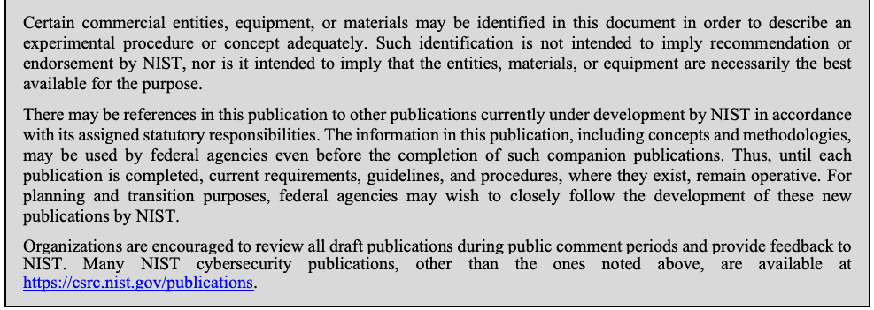
実験手順または概念を適切に説明するため、本書では特定の企業、機器または材料を示す場合がある。これらを特定していることは、NISTによる推奨または支持を意味するものではなく、また、特定された企業、材料または機器が目的に対して必ずしも最良であることを意味するものでもない。
There may be references in this publication to other publications currently under development by NIST in accordance with its assigned statutory responsibilities. The information in this publication, including concepts and methodologies, may be used by federal agencies even before the completion of such companion publications. Thus, until each publication is completed, current requirements, guidelines, and procedures, where they exist, remain operative. For planning and transition purposes, federal agencies may wish to closely follow the development of these new publications by NIST.
本刊行物には、NISTに割り当てられた法定責任に従って現在策定中の他の刊行物への参照が含まれる場合がある。本刊行物の情報（概念および方法論を含む）は、関連刊行物が完成する前であっても連邦機関が利用してもよい。したがって、各刊行物が完成するまでは、現行の要件、ガイドラインおよび手順が存在する場合、それらは引き続き有効である。計画および移行のため、連邦機関はNISTによるこれらの新しい刊行物の策定を注意深く追うことを検討してもよい。
Organizations are encouraged to review all draft publications during public comment periods and provide feedback to NIST. Many NIST cybersecurity publications, other than the ones noted above, are available at https://csrc.nist.gov/publications.
組織には、パブリックコメント期間中にすべての草案刊行物を確認し、NISTにフィードバックを提供することを推奨する。上記以外のNISTサイバーセキュリティ刊行物の多くは、https://csrc.nist.gov/publications で入手できる。
Comments on this publication can be submitted to:
本刊行物へのコメントの提出先：
National Institute of Standards and Technology Attn: Applied Cybersecurity Division, Information Technology Laboratory 100 Bureau Drive (Mail Stop 2000) Gaithersburg, MD 20899-2000 Email: iotsecurity@nist.gov
National Institute of Standards and Technology Attn: Applied Cybersecurity Division, Information Technology Laboratory 100 Bureau Drive (Mail Stop 2000) Gaithersburg, MD 20899-2000 Email: iotsecurity@nist.gov
All comments are subject to release under the Freedom of Information Act (FOIA).
すべてのコメントは、情報公開法（FOIA）に基づき公開される場合がある。
Reports on Computer Systems Technology
コンピュータシステム技術に関する報告書
The Information Technology Laboratory (ITL) at the National Institute of Standards and Technology (NIST) promotes the U.S. economy and public welfare by providing technical leadership for the Nation’s measurement and standards infrastructure. ITL develops tests, test methods, reference data, proof of concept implementations, and technical analyses to advance the development and productive use of information technology. ITL’s responsibilities include the development of management, administrative, technical, and physical standards and guidelines for the cost-effective security and privacy of other than national security-related information in federal information systems. The Special Publication 800-series reports on ITL’s research, guidelines, and outreach efforts in information system security, and its collaborative activities with industry, government, and academic organizations.
国立標準技術研究所（NIST）の情報技術研究所（ITL）は、米国の経済と公共の福祉を促進するため、国の計測・標準インフラストラクチャに対する技術的リーダーシップを提供している。ITLは、情報技術の開発と生産的な利用を推進するため、試験、試験方法、参照データ、概念実証実装および技術分析を開発している。ITLの責務には、連邦情報システムにおける国家安全保障関連以外の情報を費用対効果の高い方法で保護し、プライバシーを確保するための管理、運用、技術および物理的な標準とガイドラインの策定が含まれる。特別刊行物800シリーズは、情報システムセキュリティに関するITLの研究、ガイドライン、普及活動、および産業界、政府、学術機関との協力活動を報告する。
Abstract
概要
This publication provides a catalog of internet of things (IoT) device cybersecurity capabilities (i.e., features and functions needed from a device to support security controls) and non-technical supporting capabilities (i.e., actions and support needed from device manufacturers and other supporting entities to support security controls) that can help organizations as they use Special Publication (SP) 800-213 to determine and establish device cybersecurity requirements. This catalog cross references the capabilities in the catalog to the cybersecurity controls in NIST SP 800-53. Organizations should refer to SP 800-213 as that publication provides necessary context to effectively use this catalog and related material.
本刊行物は、組織が特別刊行物（SP）800-213を用いてデバイスのサイバーセキュリティ要件を決定・策定する際に役立つ、IoTデバイスのサイバーセキュリティ機能（セキュリティ管理策を支援するためにデバイスに必要な特徴と機能）と、非技術的な支援機能（セキュリティ管理策を支援するためにデバイス製造者その他の支援主体に必要な活動とサポート）のカタログを提供する。このカタログでは、カタログ内の機能とNIST SP 800-53のサイバーセキュリティ管理策を相互参照している。本カタログと関連資料を効果的に利用するために必要な背景情報はSP 800-213に記載されているため、組織は同文書を参照すべきである。
Keywords
キーワード
Cybersecurity baseline; Internet of Things (IoT); securable computing devices; security requirements; Risk Management Framework; Cybersecurity Framework.
サイバーセキュリティベースライン、モノのインターネット（IoT）、保護可能なコンピューティングデバイス、セキュリティ要件、リスクマネジメントフレームワーク、サイバーセキュリティフレームワーク。
Acknowledgments
謝辞
The authors wish to thank all contributors to this publication, including the participants in workshops and other interactive sessions; the individuals and organizations from the public and private sectors, including manufacturers from various sectors as well as several manufacturer trade organizations, who provided feedback on the preliminary public content and colleagues at NIST who offered invaluable inputs and feedback. Special thanks to the NIST Risk Management Framework team for their extensive feedback.
著者は、ワークショップやその他の対話型セッションの参加者、予備的な公開コンテンツに意見を寄せたさまざまな分野の製造者や複数の製造者業界団体を含む官民の個人・組織、ならびに貴重な意見とフィードバックを提供したNISTの同僚など、本刊行物に貢献したすべての方々に感謝する。特に、広範なフィードバックを寄せたNISTリスクマネジメントフレームワークチームに深く感謝する。
Audience
対象読者
The target audience of this publication is information security professionals, system administrators, and others in federal organizations tasked with assessing, applying, and maintaining security on a federal information system.
本刊行物の主な対象読者は、連邦情報システムのセキュリティ評価、適用、維持を担当する連邦組織の情報セキュリティ専門家、システム管理者その他の職員である。
Patent Disclosure Notice
特許開示に関する通知
NOTICE: The Information Technology Laboratory (ITL) has requested that holders of patent claims whose use may be required for compliance with the guidance or requirements of this publication disclose such patent claims to ITL. However, holders of patents are not obligated to respond to ITL calls for patents and ITL has not undertaken a patent search in order to identify which, if any, patents may apply to this publication.
通知：情報技術研究所（ITL）は、本刊行物のガイダンスまたは要件への準拠に使用が必要となる可能性のある特許請求の範囲を保有する者に対し、その特許請求の範囲をITLに開示するよう求めている。ただし、特許保有者にはITLの特許照会に応答する義務はなく、ITLは本刊行物に適用される可能性のある特許の有無を特定するための特許調査を実施していない。
As of the date of publication and following call(s) for the identification of patent claims whose use may be required for compliance with the guidance or requirements of this publication, no such patent claims have been identified to ITL.
本刊行物の発行日現在、本刊行物のガイダンスまたは要件への準拠に使用が必要となる可能性のある特許請求の範囲について照会を行った結果、そのような特許請求の範囲はITLに報告されていない。
No representation is made or implied by ITL that licenses are not required to avoid patent infringement in the use of this publication.
本刊行物の利用において特許侵害を回避するためのライセンスが不要であると、ITLが表明または黙示するものではない。
Table of Contents
目次
1 Introduction — 8
1 はじめに — 8
1.1 Purpose and Applicability — 8
1.1 目的と適用可能性 — 8
1.2 Target Audience — 9
1.2 対象読者 — 9
1.3 Relationship to Other Publications — 9
1.3 他の刊行物との関係 — 9
1.4 Publication Organization — 9
1.4 刊行物の構成 — 9
2 Device Cybersecurity Capability Catalog — 12
2 デバイスのサイバーセキュリティ機能カタログ — 12
DI - DEVICE IDENTIFICATION — 13
DI — デバイス識別 — 13
(IMS) Identifier Management Support — 13
（IMS）識別子管理のサポート — 13
(AID) Actions Based on Device Identity — 13
（AID）デバイス識別情報に基づく動作 — 13
(PID) Physical Identifiers — 14
（PID）物理識別子 — 14
DC - DEVICE CONFIGURATION — 15
DC — デバイス構成 — 15
(PRV) Logical Access Privilege Configuration — 15
（PRV）論理アクセス権限の構成 — 15
(AUT) Authentication and Authorization Configuration — 15
（AUT）認証および認可の構成 — 15
(INT) Interface Configuration — 15
（INT）インターフェースの構成 — 15
(DSP) Display Configuration — 16
（DSP）ディスプレイの構成 — 16
(CTL) Device Configuration Control — 16
（CTL）デバイス構成の制御 — 16
DP - DATA PROTECTION — 17
DP — データ保護 — 17
(CRY) Cryptography Capabilities and Support — 17
（CRY）暗号機能とサポート — 17
(KEY) Cryptographic Key Management — 17
（KEY）暗号鍵管理 — 17
(STO) Secure Storage — 18
（STO）セキュアな保管 — 18
(STX) Secure Transmission — 18
（STX）セキュアな伝送 — 18
LA - LOGICAL ACCESS TO INTERFACES — 20
LA — インターフェースへの論理アクセス — 20
(AUN) Authentication Support — 20
（AUN）認証のサポート — 20
(ACF) Authentication Configuration — 21
（ACF）認証の構成 — 21
(USE) System Use Notification Support — 21
（USE）システム利用通知のサポート — 21
(AUZ) Authorization Support — 22
（AUZ）認可のサポート — 22
(AIM) Authentication & Identity Management — 22
（AIM）認証とアイデンティティ管理 — 22
(ROL) Role Support & Management — 22
（ROL）役割のサポートと管理 — 22
(LDU) Limitations on Device Usage — 24
（LDU）デバイス使用の制限 — 24
(XCN) External Connections — 25
（XCN）外部接続 — 25
(IFC) Interface Control — 25
（IFC）インターフェース制御 — 25
SU - SOFTWARE UPDATE — 27
SU — ソフトウェア更新 — 27
(UPD) Update Capabilities — 27
（UPD）更新機能 — 27
(APP) Update Application Support — 28
（APP）更新アプリケーションのサポート — 28
CS - CYBERSECURITY STATE AWARENESS — 29
CS — サイバーセキュリティ状態の認識 — 29
(AEI) Access to Event Information — 29
（AEI）イベント情報へのアクセス — 29
(EIM) Event Identification & Monitoring — 29
（EIM）イベントの識別と監視 — 29
(EVR) Event Response — 30
（EVR）イベント対応 — 30
(LCT) Logging Capture & Trigger Support — 31
（LCT）ログ取得およびトリガーのサポート — 31
(RDL) Support of Required Data Logging — 31
（RDL）必須データロギングのサポート — 31
(LSR) Audit Log Storage & Retention — 32
（LSR）監査ログの保存と保持 — 32
(SRT) Support for Reliable Time — 32
（SRT）信頼できる時刻のサポート — 32
(AUP) Audit Support & Protection — 33
（AUP）監査のサポートと保護 — 33
(AWR) State Awareness Support — 34
（AWR）状態認識のサポート — 34
DS - DEVICE SECURITY — 35
DS — デバイスセキュリティ — 35
(EXE) Secure Execution — 35
（EXE）セキュアな実行 — 35
(COM) Secure Communication — 35
（COM）セキュアな通信 — 35
(RSC) Secure Resource Usage — 36
（RSC）リソースのセキュアな使用 — 36
(DIN) Device Integrity — 37
（DIN）デバイス完全性 — 37
(ONB) Secure Network Onboarding Support — 37
（ONB）セキュアなネットワークオンボーディングのサポート — 37
(OPS) Secure Device Operation — 38
（OPS）デバイスのセキュアな運用 — 38
3 Non-Technical Supporting Capability Catalog — 40
3 非技術的支援機能カタログ — 40
DO - DOCUMENTATION — 41
DO — 文書化 — 41
(SMP) Assumptions Made in Product Development — 41
（SMP）製品開発時に置かれた前提 — 41
(CAP) Technical Cybersecurity Capabilities Implemented — 48
（CAP）実装された技術的サイバーセキュリティ機能 — 48
(DSC) Design and Support Considerations — 50
（DSC）設計およびサポート上の考慮事項 — 50
(MNT) Maintenance Requirements — 52
（MNT）保守要件 — 52
(DAU) Device Authenticity Support — 54
（DAU）デバイス真正性のサポート — 54
IQ - INFORMATION AND QUERY RECEPTION — 55
IQ — 情報および問い合わせの受信 — 55
(BUG) Reception of Vulnerability Information — 55
（BUG）脆弱性情報の受信 — 55
(QRY) Query Response — 56
（QRY）問い合わせへの応答 — 56
ID - INFORMATION DISSEMINATION — 58
ID — 情報配信 — 58
(CRI) Cybersecurity Related Information Alert — 58
（CRI）サイバーセキュリティ関連情報アラート — 58
(VNT) Cybersecurity Event Notification — 60
（VNT）サイバーセキュリティイベント通知 — 60
EA - EDUCATION AND AWARENESS — 62
EA - 教育と意識向上 — 62
(CSC) Cybersecurity Capabilities — 62
（CSC）サイバーセキュリティ機能 — 62
(EOL) End-of-Life (Reprovisioning and Disposal) — 64
（EOL）使用終了（再プロビジョニングと廃棄） — 64
(RSP) Cybersecurity Responsibilities — 64
（RSP）サイバーセキュリティ上の責任 — 64
(EXP) Cybersecurity Expectations and Assumptions — 65
（EXP）サイバーセキュリティに関する期待と前提 — 65
(BAK) Data Back-up — 66
（BAK）データバックアップ — 66
(VMG) Vulnerability Management Options — 67
（VMG）脆弱性管理オプション — 67
References — 69
参考文献 — 69
List of Appendices
付録一覧
Appendix A— Definition of the Federal Profile for IoT Device Cybersecurity Requirements — 71
付録A— IoTデバイスのサイバーセキュリティ要件に関する連邦プロファイルの定義 — 71
Appendix B— Mapping of SP 800-53 Controls to Device Cybersecurity Requirements — 75
付録B— SP 800-53 管理策とデバイスのサイバーセキュリティ要件との対応付け — 75
Appendix C— Mapping of Cybersecurity Framework Outcomes to Device Cybersecurity Requirements — 83
付録C— サイバーセキュリティフレームワークの成果とデバイスのサイバーセキュリティ要件との対応付け — 83
Appendix D— Acronyms — 91
付録D— 略語 — 91
Appendix E— Glossary — 92
付録E— 用語集 — 92
1 Introduction
1 はじめに
1.1 Purpose and Applicability
1.1 目的と適用可能性
This publication is intended to help federal organizations determine device cybersecurity requirements for IoT devices they seek to use with federal information systems and other systems operated by the federal government.1 IoT devices in-scope for this publication have at least one transducer (sensor or actuator) for interacting directly with the physical world and at least one network interface (e.g., Ethernet, Wi-Fi, Bluetooth, Long-term Evolution (LTE), Zigbee, Ultra-Wideband (UWB)) for interfacing with the digital world. The IoT devices in-scope for this publication can function on their own, although they may be dependent on specific other devices (e.g., an IoT hub) or systems (e.g., a cloud) for some functionality2.
本刊行物は、連邦情報システムおよびその他の連邦政府運用システムで使用するIoTデバイスについて、連邦機関がサイバーセキュリティ要件を決定する際に役立つことを目的としている。1 本刊行物の対象となるIoTデバイスは、物理世界と直接やり取りするための変換器（センサーまたはアクチュエーター）を少なくとも1つ備え、デジタル世界に接続するためのネットワークインターフェース（例：Ethernet、Wi-Fi、Bluetooth、Long-term Evolution（LTE）、Zigbee、Ultra-Wideband（UWB））を少なくとも1つ備える。本刊行物の対象デバイスは単独で機能できるが、一部の機能では、特定の他のデバイス（IoTハブなど）またはシステム（クラウドなど）に依存する場合がある。2
This publication shall be used with the guidance in Special Publication (SP) 800-213, IoT Cybersecurity Guidance for the Federal Government: Establishing IoT Device Cybersecurity Requirements [800-213] 3. Federal organizations can use this catalog of device cybersecurity requirements to determine those appropriate to support the security controls implemented on their system and in their organization. Device cybersecurity requirements are device cybersecurity capabilities and non-technical supporting capabilities needed to integrate an IoT device into a system. Device cybersecurity capabilities are cybersecurity features or functions that computing devices provide through their own technical means (i.e., device hardware and software). For example, data protection using encryption would be a device cybersecurity capability if implemented on an IoT device. Non-technical supporting capabilities are actions an organization (i.e., manufacturers of IoT devices or designated third-party entities with a supporting role) performs in support of the cybersecurity of an IoT device. For example, notifications when an update is available and training of how to apply the software update may be a non-technical supporting capability needed by a federal organization in support of the cybersecurity of an IoT device.
本刊行物は、特別刊行物（SP）800-213「連邦政府向けIoTサイバーセキュリティガイダンス：IoTデバイスのサイバーセキュリティ要件の策定」[800-213] 3 のガイダンスと併用しなければならない。連邦機関は、このデバイスサイバーセキュリティ要件カタログを使い、自らのシステムおよび組織で実施するセキュリティ管理策を支援するのに適した要件を決定できる。デバイスサイバーセキュリティ要件とは、IoTデバイスをシステムに統合するために必要なデバイスのサイバーセキュリティ機能および非技術的支援機能である。デバイスのサイバーセキュリティ機能は、コンピューティングデバイスが自身の技術的手段（デバイスのハードウェアおよびソフトウェア）を通じて提供するサイバーセキュリティ特性または機能である。たとえば、IoTデバイス上に実装される場合、暗号化によるデータ保護はデバイスのサイバーセキュリティ機能に当たる。非技術的支援機能とは、IoTデバイスのサイバーセキュリティを支援するために組織（IoTデバイス製造者または支援役割を担う指定第三者機関）が実施する活動である。たとえば、更新が利用可能になった際の通知や、ソフトウェア更新の適用方法に関するトレーニングは、IoTデバイスのサイバーセキュリティを支援するために連邦機関が必要とする非技術的支援機能となる場合がある。
This catalog provides a resource for federal organizations to use in determining and describing device cybersecurity requirements needed to support security in their information systems and organization. When used with the guidance in SP 800-213 and the NIST Risk Management Framework (RMF), 4 this catalog can help increase the security posture of systems and elements.
本カタログは、情報システムおよび組織のセキュリティを支援するために必要なデバイスサイバーセキュリティ要件を、連邦機関が決定・記述する際に利用できるリソースである。SP 800-213およびNISTリスクマネジメントフレームワーク（RMF）4のガイダンスと併用すると、システムおよび構成要素のセキュリティ態勢の強化に役立つ。
1.2 Target Audience
1.2 対象読者
The target audience of this publication is information security professionals, system administrators, procurement professionals, and others in federal organizations tasked with assessing, applying, and maintaining security on a federal information system. Personnel within the following Workforce Categories and Specialty Areas from the National Initiative for Cybersecurity Education (NICE) Workforce Framework for Cybersecurity [NICE] are most likely to find this publication of interest:
本刊行物の対象読者は、連邦情報システムのセキュリティ評価、適用、維持を担当する連邦組織の情報セキュリティ専門家、システム管理者、調達担当者その他の職員である。国家サイバーセキュリティ教育イニシアチブ（NICE）のサイバーセキュリティ人材フレームワーク[NICE]に定める次の職務カテゴリおよび専門分野の職員は、本刊行物に関心を持つ可能性が最も高い：
•Securely Provision: Risk Management, Systems Architecture, Systems Development
•セキュアな調達：リスク管理、システムアーキテクチャ、システム開発
•Operate and Maintain: Data Administration, Network Services, Systems Administration, Systems Analysis
•運用と保守：データ管理、ネットワークサービス、システム管理、システム分析
•Oversee and Govern: Cybersecurity Management, Executive Cyber Leadership, Program/Project Management and Acquisition
•監督と統治：サイバーセキュリティ管理、エグゼクティブサイバーリーダーシップ、プログラム／プロジェクト管理および調達
•Protect and Defend: Cybersecurity Defense Analysis, Cybersecurity Defense Infrastructure Support, Incident Response, Vulnerability Assessment and Management
•保護と防御：サイバーセキュリティ防御分析、サイバーセキュリティ防御インフラストラクチャ支援、インシデント対応、脆弱性の評価と管理
1.3 Relationship to Other Publications
1.3 他の刊行物との関係
This publication directly relates to SP 800-213 [800-213]. It also follows from the foundational cybersecurity for IoT work from NIST documented in NISTIR 8228 [IR8228] and the NISTIR 8259 series [IR8259, IR8259A, IR8259B]. Direct mappings and references to SP 800-53 [800-53] are also used in the catalog to show the connection between device cybersecurity requirements and security controls a federal organization may be using.
本刊行物はSP 800-213 [800-213]と直接関連している。また、NISTIR 8228 [IR8228]およびNISTIR 8259シリーズ[IR8259、IR8259A、IR8259B]に記録されたNISTのIoTサイバーセキュリティ基礎研究を踏まえている。カタログでは、デバイスのサイバーセキュリティ要件と、連邦機関が利用する可能性のあるセキュリティ管理策との関係を示すため、SP 800-53 [800-53]への直接的な対応付けと参照も用いている。
1.4 Publication Organization
1.4 刊行物の構成
The rest of this publication contains the catalog of device cybersecurity requirements divided into two sections:
本刊行物の残りの部分には、次の2節に分けてデバイスサイバーセキュリティ要件のカタログを掲載する：
•Section 2 details seven device cybersecurity capabilities and several related sub-capabilities that may be needed from an IoT device to support system security controls.
•第2節では、システムのセキュリティ管理策を支援するためにIoTデバイスに求められる可能性のある、7つのデバイスサイバーセキュリティ機能と複数の関連サブ機能を詳述する。
•Section 3 details four non-technical supporting capabilities and several related sub-capabilities that may be needed from IoT device manufacturers and supporting entities.
•第3節では、IoTデバイス製造者および支援主体に求められる可能性のある、4つの非技術的支援機能と複数の関連サブ機能を詳述する。
Each section of device cybersecurity requirements provides the name, description, and additional informative discussion for each capability and sub-capability. Many sub-capabilities have additional information in the form of individual requirements that may be part of the device cybersecurity requirement. Each sub-capability includes a mapping to applicable SP 800-53 controls. Figure 1 shows the structure of a capability and sub-capability.
デバイスサイバーセキュリティ要件の各節では、各機能およびサブ機能の名称、説明、補足説明を示す。多くのサブ機能には、デバイスサイバーセキュリティ要件の一部となる可能性のある個別要件が追加情報として含まれている。各サブ機能には、該当するSP 800-53管理策との対応付けも含まれる。図1に、機能とサブ機能の構造を示す。
![Figure 1: Capability and Sub-Capability Structure. An annotated example entry inside a frame. The heading “CS - CYBERSECURITY STATE AWARENESS” (callout: “Capability Identifier & Name”) is followed by “Description: The capability to generate data indicating different types of events related to the use of the device to meet organizational requirements.” and a Discussion paragraph; a bracket at the left marks these as “Capability Definition”. Next come “Sub-Capabilities that may be necessary:” and “(AEI) Access to Event Information” (callout: “Sub-Capability Identifier & Name”), with “Description: Ability to access IoT device state information.”, a Discussion paragraph, and “Related SP 800-53 Rev. 5 Controls: SI-4, AU-11, AU-12” (callout: “Mapping to SP 800-53 Rev. 5 Controls that Sub-Capability may support”); a bracket marks these as “Sub-Capability Definition”. Finally, “Requirements that may be necessary:” lists “1. Ability to access information about the IoT device's cybersecurity state and other necessary data.” and “2. Ability to preserve system state information.”, marked by the callout “Specific Requirement Statements Related to Sub-Capability”.](assets/213a/p0012-figure-01.png)
図1：機能とサブ機能の構造。枠内に注記付きの記載例がある。見出し「CS - CYBERSECURITY STATE AWARENESS」（サイバーセキュリティ状態の認識。注記「Capability Identifier & Name」：機能の識別子と名称）の後に、「Description: The capability to generate data indicating different types of events related to the use of the device to meet organizational requirements.」（説明：組織の要件を満たすため、デバイスの使用に関するさまざまな種類のイベントを示すデータを生成する機能）と考察（Discussion）の段落が続き、左側の括弧でこれらが「Capability Definition」（機能の定義）とされる。次に「Sub-Capabilities that may be necessary:」（必要となる可能性のあるサブ機能）と「(AEI) Access to Event Information」（イベント情報へのアクセス。注記「Sub-Capability Identifier & Name」：サブ機能の識別子と名称）があり、「Description: Ability to access IoT device state information.」（説明：IoTデバイスの状態情報にアクセスできること）、考察の段落、「Related SP 800-53 Rev. 5 Controls: SI-4, AU-11, AU-12」（関連するSP 800-53 Rev. 5の管理策。注記「Mapping to SP 800-53 Rev. 5 Controls that Sub-Capability may support」：サブ機能が支援し得るSP 800-53 Rev. 5の管理策への対応付け）が続き、括弧でこれらが「Sub-Capability Definition」（サブ機能の定義）とされる。最後に「Requirements that may be necessary:」（必要となる可能性のある要件）として「1. Ability to access information about the IoT device's cybersecurity state and other necessary data.」（IoTデバイスのサイバーセキュリティ状態とその他の必要なデータに関する情報にアクセスできること）と「2. Ability to preserve system state information.」（システムの状態情報を保持できること）が挙がり、注記「Specific Requirement Statements Related to Sub-Capability」（サブ機能に関する具体的な要件の記述）が付く。
Figure 1: Capability and Sub-Capability Structure
図1：機能とサブ機能の構造
As shown in Figure 1, each capability is named5 and then defined with a short description accompanied by further discussion about the nature of and need for the capability overall. These high-level descriptions can help organizations identify which capabilities they should consider in support of system and organizational security controls. In this context of SP 800-213, a capability is further defined by the sub-capabilities that describe the details of device cybersecurity requirements.
図1に示すように、各機能には名称が付けられ⁵、その機能全体の性質および必要性に関する補足説明を伴う短い説明によって定義される。これらの高水準の説明は、システムおよび組織のセキュリティ管理策を支援するためにどの機能を検討すべきか、組織が特定するのに役立つ。SP 800-213の文脈では、デバイスサイバーセキュリティ要件の詳細を記述するサブ機能によって、機能がさらに定義される。
For each capability, this catalog also documents sub-capabilities that describe distinct, more specific details to further define support needed related to the higher-level capability. The need for a sub-capability or its elements is guided by the cybersecurity needs of the organization as described in SP 800-213. Figure 1 shows the structure of a sub-capability, which like capabilities are named and defined with a short description and further discussion about the sub-capability and why it may be needed.
本カタログでは各機能について、上位の機能をさらに定義するために必要な支援を、独立したより具体的な詳細として記述するサブ機能も示す。サブ機能またはその要素が必要かどうかは、SP 800-213で説明する組織のサイバーセキュリティニーズに基づいて判断する。図1にサブ機能の構造を示す。サブ機能も機能と同様に名称が付され、短い説明と、サブ機能の内容および必要となり得る理由に関する補足説明によって定義される。
A mapping to related SP 800-53 Rev. 5 controls is also provided for each sub-capability that can help organizations identify the controls and/or enhancements6 that may be supported by each sub-capability. This support for controls may come from a fulfilment of all or part of a control by the presence of the functionality or actions described in the sub-capability. For example, the control may state that the element should function in a specific way and the sub-capability describes how the IoT device should function based on the control. In other cases, support for controls is in the form of enabling the system and/or organization to perform some system/organization-wide function or action including the IoT device. Controls are considered independent of their inclusion in SP 800-53B, Control Baselines for Information Systems and Organizations [800-53B], and so some controls included in the related controls list may not be in the low-, moderate-, and/or high-impact baseline. As explored in SP 800-213 [800-213], these mappings are meant to be used with a prior understanding of security controls to the system to which the IoT device will connect and selection of device cybersecurity requirements guided by that understanding. The mappings do not imply that each mapped security control is necessary in the presence of the sub-capability.
各サブ機能には、関連するSP 800-53 Rev.5管理策との対応付けも示している。これにより、各サブ機能が支援し得る管理策および／または管理策の強化策⁶を組織が特定できる。サブ機能に記載された機能または活動が管理策の全部または一部を満たすことで、管理策を支援する場合がある。たとえば、管理策において要素は特定の方法で動作すべきであるとされ、サブ機能がその管理策に基づいてIoTデバイスがどのように動作すべきかを説明する場合がある。別の場合には、IoTデバイスを含むシステムおよび／または組織全体の機能や活動を実行できるようにすることで、管理策を支援する。管理策はSP 800-53B「情報システムおよび組織のための管理策ベースライン」[800-53B]への収録有無とは独立して扱う。そのため、関連管理策の一覧に含まれる管理策でも、低・中・高影響ベースラインのいずれかまたは複数に含まれない場合がある。SP 800-213 [800-213]で説明するように、これらの対応付けは、IoTデバイスが接続するシステムのセキュリティ管理策をあらかじめ理解したうえで、その理解に基づいてデバイスのサイバーセキュリティ要件を選択する際に使用することを意図している。対応付けは、サブ機能が存在する場合に、対応する各セキュリティ管理策が必ず必要になることを意味しない。
Finally, many sub-capabilities contain individual requirements that can be used by the organization to provide additional detail to a device cybersecurity requirement based on their applicability.
最後に、多くのサブ機能には、適用可能性に基づいてデバイスサイバーセキュリティ要件をさらに詳しく定めるため、組織が利用できる個別要件が含まれている。
カタログコンテンツ識別子の使用
Throughout this catalog, each capability and sub-capability are given identifiers that’s allow to shorter identification of specific content. For example, the Cybersecurity State Awareness sub- capability Access to Event Information shown in Figure 1 could be referred to as CS:AEI. Additionally, the numbered requirements that may be necessary can be referred to using those numeral (e.g., CS:AEI(1) or CS:AEI(2)). Finally, some requirements that may be necessary have another level below that are labeled using alphabetic characters (i.e., a, b, c), which can also be incorporated into this shorthand (e.g., DO:SMP(1a) or DO:SMP(2a,b)). This notation is used in Appendices B and C.
本カタログ全体を通じて、各機能およびサブ機能には、特定のコンテンツをより短く識別するための識別子が付されている。たとえば、図1に示す「サイバーセキュリティ状態認識」サブ機能「イベント情報へのアクセス」は、CS:AEIと表記できる。また、必要となる可能性のある番号付き要件は、その番号（例：CS:AEI(1)またはCS:AEI(2)）を用いて参照できる。最後に、必要となる可能性のある要件の中には、さらに下位の階層があり、英字（すなわちa、b、c）でラベル付けされているものがある。これらもこの略記に組み込むことができる（例：DO:SMP(1a)またはDO:SMP(2a,b)）。この表記法は付録BおよびCで使用する。
may not be since enhancements represent an augmentation of the base control, which could require additional, distinct support from system elements like IoT devices.
そうではない場合がある。強化策は基本管理策を拡張するものであり、IoTデバイスなどのシステム要素からの追加の、別個の支援が必要となる可能性があるためである。
2 Device Cybersecurity Capability Catalog
2 デバイスのサイバーセキュリティ機能カタログ
A device cybersecurity capability is a feature or function that computing devices (i.e., an IoT device) provides through its own technical means (i.e., device hardware and software) [800-213]. Organizations will many times need device cybersecurity capabilities to be present in system elements, including IoT devices, that directly or indirectly implement and support security controls. This section identifies device cybersecurity capabilities and sub-capabilities organizations should consider when establishing device cybersecurity requirements. The device cybersecurity capabilities identified are:
デバイスサイバーセキュリティ機能とは、コンピューティングデバイス（IoTデバイスなど）が自身の技術的手段（デバイスのハードウェアとソフトウェア）を通じて提供する特性または機能である[800-213]。組織では、セキュリティ管理策を直接または間接に実装・支援するシステム要素（IoTデバイスを含む）に、デバイスサイバーセキュリティ機能を備える必要が生じる場合が多くある。本節では、デバイスサイバーセキュリティ要件を策定する際に組織が検討すべきデバイスサイバーセキュリティ機能とサブ機能を示す。特定された機能は次のとおりである。
•Device Identification
•デバイス識別
•Device Configuration
•デバイス構成
•Data Protection
•データ保護
•Logical Access to Interfaces
•インターフェースへの論理アクセス
•Software Update
•ソフトウェア更新
•Cybersecurity State Awareness
•サイバーセキュリティ状態の認識
•Device Security
•デバイスセキュリティ
DI - DEVICE IDENTIFICATION
DI — デバイス識別
Description: The capability to identify the IoT device for multiple purposes and in multiple ways to meet organizational requirements.
説明：組織の要件を満たすため、複数の目的および複数の方法でIoTデバイスを識別する機能。
Discussion: Device identification supports many cybersecurity needs and goals, such as asset management, vulnerability management, access management, data protection, and incident detection. The unique logical identifier can be used to distinguish the device from all others, usually for automated device management and monitoring. Multiple identifiers may be necessary for an organization, each possibly to be used together or for individual purposes. For example, an IoT device may support both a way to identify it uniquely on the system or Internet as well as a way to identify its expected device behavior (e.g., using a Manufacturer Usage Description (MUD) URL).
考察：デバイス識別は、資産管理、脆弱性管理、アクセス管理、データ保護、インシデント検知など、多くのサイバーセキュリティニーズや目標を支援する。一意の論理識別子を用いると、通常は自動化されたデバイス管理や監視のために、そのデバイスを他のすべてのデバイスと区別できる。組織によっては複数の識別子が必要であり、それぞれを組み合わせて、または個別の目的で使用する場合がある。たとえばIoTデバイスでは、システム上またはインターネット上で一意に識別する方法に加え、想定されるデバイスの動作を識別する方法（Manufacturer Usage Description（MUD）URLを使用するなど）をサポートする場合がある。
Sub-Capabilities that may be necessary:
必要となる可能性のあるサブ機能：
(IMS) Identifier Management Support
（IMS）識別子管理のサポート
Description: Ability for device identification.
説明：デバイスを識別する機能。
Discussion: The ability to identify system elements is important to asset management and monitoring of the system, fundamental tasks in applying many other security controls. IoT devices being delivered with a unique identifier for use by the organization may be necessary for the IoT device to conform to the organization’s security controls.
考察：システム要素を識別できることは、システムの資産管理と監視に重要であり、他の多くのセキュリティ管理策を適用する際の基本的な作業である。組織が使用する一意の識別子をIoTデバイスに付与した状態で提供することが、組織のセキュリティ管理策にIoTデバイスを適合させるために必要となる場合がある。
Related SP 800-53 Rev. 5 Controls: IA-3, IA-4
関連するSP 800-53 Rev.5管理策：IA-3、IA-4
Requirements that may be necessary:
必要となる可能性のある要件：
1.Ability to uniquely identify the IoT device logically.
1.IoTデバイスを論理的に一意に識別できること。
2.Ability to uniquely identify a remote IoT device.
2.リモートIoTデバイスを一意に識別できること。
3.Ability for the device to support a unique device identifier (e.g., to allow it to be linked to the person or process assigned to use the IoT device).
3.デバイスが一意のデバイス識別子をサポートできること（例：IoTデバイスの使用を割り当てられた人物またはプロセスと関連付けるため）。
(AID) Actions Based on Device Identity
（AID）デバイス識別情報に基づく動作
Description: Ability to perform actions that can occur based on or using the identity of the device.
説明：デバイスの識別情報に基づいて、またはそれを用いて動作を実行できる機能。
Discussion: Using IoT device identifiers to perform additional actions can help provide assurance security controls are applied to all applicable system elements by allowing for differentiation between devices and more thorough accounting of the application of security controls to system elements.
考察：IoTデバイスの識別子を使って追加の動作を実行すると、デバイスを区別し、システム要素へのセキュリティ管理策の適用状況をより詳細に把握できる。これにより、該当するすべてのシステム要素にセキュリティ管理策が適用されているという確証を得やすくなる。
Related SP 800-53 Rev. 5 Controls: AU-2, CM-8, CM-8(8), IA-3, AC-3, SI-4
関連するSP 800-53 Rev.5管理策：AU-2、CM-8、CM-8(8)、IA-3、AC-3、SI-4
DI - DEVICE IDENTIFICATION
DI — デバイス識別
Requirements that may be necessary:
必要となる可能性のある要件：
1.Ability to configure IoT device access control policies using IoT device identity. a. Ability to hide IoT device identity from non-authorized entities. b. Ability for the IoT device to differentiate between authorized and unauthorized remote users. c. Ability for the IoT device to differentiate between authorized and unauthorized physical device users (e.g., using a method of authentication to verify the identity of physical device users).
1.IoTデバイスの識別情報を使用して、IoTデバイスのアクセス制御ポリシーを構成できること。a. IoTデバイスの識別情報を、権限のない主体から隠せること。b. IoTデバイスが、許可されたリモートユーザーと許可されていないリモートユーザーを区別できること。c. IoTデバイスが、許可された物理的なデバイス利用者と許可されていない利用者を区別できること（例：認証方法でデバイスを物理的に利用する人の身元を確認する）。
2.Ability to monitor specific actions based on the IoT device identity.
2.IoTデバイスの識別情報に基づく特定の動作を監視できること。
3.Ability to identify software loaded on the IoT device based on IoT device identity.
3.IoTデバイスの識別情報に基づいて、IoTデバイスにロードされたソフトウェアを識別できること。
4.Ability for the device identifier to be used to discover the IoT device for the purpose of network asset identification and management.
4.デバイス識別子を利用してIoTデバイスを検出し、ネットワーク資産を識別・管理できること。
(DAS) Device Authentication Support
（DAS）デバイス認証のサポート
Description: Ability to support local or interfaced device authentication.
説明：ローカルデバイス認証またはインターフェース経由のデバイス認証をサポートする機能。
Discussion: The IoT device may need to have the ability to authenticate its identity with other system elements (e.g., other IT and IoT devices) and likewise authenticate the identity of those system elements.
考察：IoTデバイスは、他のシステム要素（他のITデバイスやIoTデバイスなど）に対して自身の識別情報を認証し、同様にそれらのシステム要素の識別情報も認証する機能が必要となる場合がある。
Related SP 800-53 Rev. 5 Controls: IA-3
関連するSP 800-53 Rev.5管理策：IA-3
Requirements that may be necessary:
必要となる可能性のある要件：
1.Ability for the IoT device to identify itself as an authorized entity to other devices.
1.IoTデバイスが他のデバイスに対して自身を許可された主体として識別できること。
2.Ability to verify the identity of other devices.
2.他のデバイスの識別情報を検証できること。
(PID) Physical Identifiers
（PID）物理識別子
Description: Ability to add a unique physical identifier at an external or internal location on the device authorized entities can access.
説明：許可された主体がアクセスできるデバイスの外部または内部の位置に、一意の物理識別子を付与できる機能。
Discussion: Identifying system elements via physical identifiers allow for asset management to be performed or checked using the physical means, sometimes in addition and in coordination with logical means.
考察：物理識別子を用いてシステム要素を識別すると、物理的な手段によって資産管理を実行または確認できる。場合によっては、論理的な手段に加えて、またはそれと連携して行う。
Related SP 800-53 Rev. 5 Controls: IA-3
関連するSP 800-53 Rev.5管理策：IA-3
DC - DEVICE CONFIGURATION
DC — デバイス構成
Description: The capability to configure the IoT device through logical and/or physical interfaces to meet organizational requirements.
原本PDFの抜粋画像
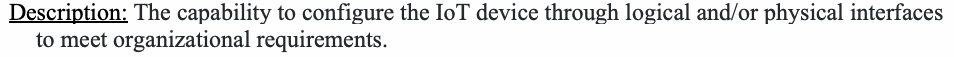
説明：組織の要件を満たすよう、論理インターフェースや物理インターフェースを通じてIoTデバイスを構成する機能。
Discussion: Device configuration supports vulnerability management, access management, data protection, and incident detection. Organizations may want to alter a device’s configuration for a variety of reasons (e.g., cybersecurity, interoperability, privacy, and usability). Without a device configuration capability, an organization cannot customize a device to meet its specific needs and may not be able to securely integrate the device into the authorized entity's environment. Many other cybersecurity capabilities will have or require a configuration capability to allow proper use of the features and functions by the organization. Protection and management of configuration data may be necessary to ensure the confidentiality, integrity, and availability of the configurations.
考察：デバイス構成は、脆弱性管理、アクセス管理、データ保護、インシデント検知を支援する。組織は、サイバーセキュリティ、相互運用性、プライバシー、ユーザビリティなど、さまざまな理由でデバイスの構成を変更する場合がある。デバイス構成機能がなければ、組織は独自のニーズに合わせてデバイスをカスタマイズできず、許可された主体の環境にデバイスを安全に統合できない場合がある。他の多くのサイバーセキュリティ機能では、組織が機能を適切に使用できるようにするため、構成機能が備わっている、または必要となる。構成の機密性、完全性、可用性を確保するには、構成データの保護と管理が必要となる場合がある。
Sub-Capabilities that may be necessary:
必要となる可能性のあるサブ機能：
(PRV) Logical Access Privilege Configuration
（PRV）論理アクセス権限の構成
Description: Ability for only authorized entities (e.g., organization personnel, other system elements, enabling systems) to apply logical access privilege settings within the IoT device and configure logical access privilege as described in Logical Access to Interfaces.
原本PDFの抜粋画像
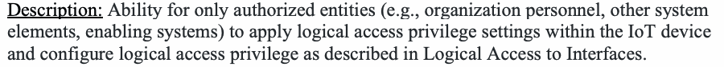
説明：IoTデバイス内の論理アクセス権限設定を適用し、「インターフェースへの論理アクセス」で説明する論理アクセス権限を構成できる主体を、許可された主体（組織の要員、他のシステム要素、支援システムなど）に限定する機能。
Discussion: Access privileges in an access control environment is critical to ensuring the system can limit access to information as dictated by policy and privilege level. Limiting configuration of such privileges to authorized entities helps ensure the integrity of access privileges.
考察：アクセス制御環境におけるアクセス権限は、ポリシーと権限レベルに従ってシステムが情報へのアクセスを制限できるようにするうえで重要である。このような権限の構成を許可された主体に限定することは、アクセス権限の完全性の確保に役立つ。
Related SP 800-53 Rev. 5 Controls: AC-3, CM-5
関連するSP 800-53 Rev.5管理策：AC-3、CM-5
(AUT) Authentication and Authorization Configuration
（AUT）認証および認可の構成
Description: Ability for only authorized entities to configure IoT device authentication policies and limitations as described in Logical Access to Interfaces.
原本PDFの抜粋画像
説明：「インターフェースへの論理アクセス」で説明するIoTデバイスの認証ポリシーと制約を構成できる主体を、許可された主体に限定する機能。
Discussion: Aspects of the authentication mechanisms and system policies for authentication may need to be configured by the organization. It is critical that changes to such configurations be limited to authorized entities to ensure integrity of authentication.
考察：認証メカニズムや認証に関するシステムポリシーの一部は、組織が構成する必要がある場合がある。認証の完全性を確保するため、このような構成の変更を許可された主体に限定することが重要である。
Related SP 800-53 Rev. 5 Controls: AC-3, CM-5
関連するSP 800-53 Rev.5管理策：AC-3、CM-5
(INT) Interface Configuration
（INT）インターフェースの構成
Description: Ability for only authorized entities to configure aspects related to the device's interfaces as described in Logical Access to Interfaces.
原本PDFの抜粋画像
説明：「インターフェースへの論理アクセス」で説明するデバイスインターフェース関連の項目を構成できる主体を、許可された主体に限定する機能。
Discussion: Organizations may need to configure interfaces based on their organizational characteristics. Changes to interface configurations should be limited to authorized entities to protect the integrity of those configurations.
考察：組織は、その組織特性に応じてインターフェースを構成する必要がある場合がある。インターフェース構成の変更は、その構成の完全性を保護するため、許可された主体に限定するべきである。
Related SP 800-53 Rev. 5 Controls: AC-3, CM-5
関連するSP 800-53 Rev.5管理策：AC-3、CM-5
(DSP) Display Configuration
（DSP）ディスプレイの構成
Description: Ability to configure content to be displayed on a device.
説明：デバイスに表示するコンテンツを設定できる機能。
Discussion: Based on the use case, IoT devices may need to display, or restrict display of, specific content to meet security controls and requirements (e.g., notices of use of a federal computer system).
考察：ユースケースによっては、セキュリティ管理策や要件（連邦政府コンピューターシステムの利用通知など）を満たすため、IoTデバイスで特定のコンテンツを表示したり、表示を制限したりする必要がある。
Related SP 800-53 Rev. 5 Controls: AC-8, AC-12(2), AC-12(3)
関連するSP 800-53 Rev.5管理策：AC-8、AC-12(2)、AC-12(3)
(CTL) Device Configuration Control
（CTL）デバイス構成の制御
Discussion: Various aspects of the IoT device and how it operates may need to be configured by the organization to ensure conformance and support for security controls. Some additional aspects may also be necessary, such as the ability to restore the configuration to a secure state.
考察：セキュリティ管理策への準拠とその支援を確保するため、IoTデバイスのさまざまな側面や動作方法を組織が構成する必要がある場合がある。構成をセキュアな状態に復元する機能など、追加の側面が必要となる場合もある。
Related SP 800-53 Rev. 5 Controls: CM-2, CM-3, CM-5, CM-6, SR-11(2)
関連するSP 800-53 Rev.5管理策：CM-2、CM-3、CM-5、CM-6、SR-11(2)
Description: Ability to change configurations on the IoT device based on operational events as described in Device Security and Cybersecurity Event Awareness.
説明：「デバイスのセキュリティとサイバーセキュリティイベントの認識」に記載されている運用上のイベントに基づいて、IoTデバイスの構成を変更できる機能。
Requirements that may be necessary:
必要となる可能性のある要件：
1.Ability for authorized entities to change the device’s software configuration settings.
1.認可されたエンティティがデバイスのソフトウェア構成設定を変更できること。
2.Ability for authorized entities to restore the device to a secure configuration defined by an authorized entity.
2.認可されたエンティティがデバイスを、認可されたエンティティが定義した安全な構成に復元できること。
3.Ability to maintain control over device configuration during service and repair.
3.サービスおよび修理の間、デバイスの構成に対する管理を維持できること。
4.Configuration settings for use with the Device Configuration capability including, but not limited to:
4.「デバイス構成」機能で使用する構成設定。次を含むが、これらに限らない：
a.Ability for authorized entities to configure the cryptography use itself, such as choosing a key length.
a.認可されたエンティティが、鍵長の選択など、暗号の使用自体を設定できること。
b.Ability for authorized entities to configure any remote update mechanisms to be either automatically or manually initiated for update downloads and installations.
b.認可されたエンティティが、リモート更新の仕組みを、更新のダウンロードとインストールについて自動開始または手動開始のいずれかに設定できること。
c.Ability for authorized entities to enable or disable notification when an update is available and specify who or what is to be notified.
c.認可されたエンティティが、更新が利用可能になったときの通知を有効または無効にし、通知の宛先となる者または対象を指定できること。
d.Ability for authorized entities to configure authentication mechanisms (e.g., minimum password length or complexity, force change of passwords on first use)
d.認可されたエンティティが、認証の仕組み（例：パスワードの最小長や複雑さ、初回使用時のパスワード変更の強制）を設定できること。
DP - DATA PROTECTION
DP — データ保護
Description: The capability to protect IoT device data to meet organizational requirements.
説明：組織の要件を満たすため、IoTデバイスのデータを保護する機能。
Discussion: Data protection on an IoT device supports cybersecurity needs and goals such as access management, system and organizational data protection, and incident detection. Confidentiality , availability, and integrity of data is central to cybersecurity. Privacy protections may also need to be specifically considered for certain use cases. Many times, data protection is implemented using cryptographic modules and functions. NIST has significant guidance around these areas through the Federal Information Processing Standards (FIPS) [NIST FIPS] and Cryptographic Module Validation Program [CMVP], and readers are referred to these publications, programs, and projects for more information about appropriate cryptographic modules for IoT data protection.
考察：IoTデバイス上のデータ保護は、アクセス管理、システムおよび組織のデータ保護、インシデント検知などのサイバーセキュリティニーズや目標を支援する。データの機密性、可用性、完全性はサイバーセキュリティの中核である。特定のユースケースでは、プライバシー保護も個別に考慮する必要がある場合がある。データ保護には暗号モジュールや暗号機能がよく用いられる。NISTは、連邦情報処理標準（FIPS）[NIST FIPS]および暗号モジュール検証プログラム（CMVP）[CMVP]を通じてこれらの分野に関する豊富なガイダンスを提供しており、IoTデータ保護に適した暗号モジュールの詳細については、これらの刊行物、プログラム、プロジェクトを参照されたい。
Sub-Capabilities that may be necessary:
必要となる可能性のあるサブ機能：
(CRY) Cryptography Capabilities and Support
（CRY）暗号機能とサポート
Description: Ability for the IoT device to use cryptography for data protection.
説明：IoTデバイスがデータ保護のために暗号を使用できる機能。
Discussion: Use of acceptable cryptographic modules and functions to ensure confidentiality and integrity, and avoid undermining availability of information is common in systems and among system elements. Organizations should refer to FIPS 140-3 [FIPS-140], 180-4 [FIPS-180], 186-4 [FIPS-186], 197 [FIPS-197], 198-1 [FIPS-198], and 202 [FIPS-202] for more information about Federal Information Processing Standards for cryptographic modules and functions.
考察：機密性と完全性を確保し、情報の可用性を損なわないようにするために、許容される暗号モジュールと暗号機能を使用することは、システムおよびシステム要素において一般的である。暗号モジュールと暗号機能に関する連邦情報処理標準の詳細については、組織は FIPS 140-3 [FIPS-140]、180-4 [FIPS-180]、186-4 [FIPS-186]、197 [FIPS-197]、198-1 [FIPS-198]、202 [FIPS-202] を参照すべきである。
Related SP 800-53 Rev. 5 Controls: SC-13, SC-17
関連するSP 800-53 Rev.5管理策：SC-13、SC-17
Requirements that may be necessary:
必要となる可能性のある要件：
(KEY) Cryptographic Key Management
（KEY）暗号鍵管理
1.Ability to execute cryptographic mechanisms of appropriate strength and performance.
1.適切な強度と性能を持つ暗号の仕組みを実行できること。
2.Ability to obtain and validate certificates.
2.証明書を取得し、検証できること。
3.Ability to verify digital signatures.
3.デジタル署名を検証できること。
4.Ability to run hashing algorithms (i.e., compute and compare hashes).
4.ハッシュアルゴリズムを実行できること（すなわち、ハッシュを計算し比較すること）。
5.Ability to perform authenticated encryption algorithms.
5.認証付き暗号アルゴリズムを実行できること。
Description: Ability to manage cryptographic keys securely.
説明：暗号鍵を安全に管理できる機能。
Discussion: Cryptographic keys are an essential element of applying cryptographic modules and functions. Proper cryptographic key management is essential to supporting and effectively using cryptographic modules and functions in the system and among system elements. There are aspects of key management related to generation, storage, distribution, use, and destruction that may have to be covered by device cybersecurity requirements.
考察：暗号鍵は、暗号モジュールや暗号機能を適用するための不可欠な要素である。システム内およびシステム要素間で暗号モジュールと暗号機能を支援し、効果的に利用するには、適切な暗号鍵管理が欠かせない。鍵の生成、保管、配布、使用、破棄に関する側面を、デバイスサイバーセキュリティ要件で扱う必要がある場合がある。
Additional guidance about cryptographic key management in systems see SP 800-57 Part 1 Rev. 5, Recommendation for Key Management: Part 1 – General [800-57].”
システムにおける暗号鍵管理の追加ガイダンスについては、SP 800-57 Part 1 Rev.5「鍵管理の推奨事項：第1部 — 一般」[800-57]を参照されたい。
Related SP 800-53 Rev. 5 Controls: SA-9(6), SC-12, SC-12(6), SC-13
関連するSP 800-53 Rev.5管理策：SA-9(6)、SC-12、SC-12(6)、SC-13
1.暗号鍵を安全に管理できること。
a.Ability to generate key pairs.
a.鍵ペアを生成できること。
b.Ability to store encryption keys securely.
b.暗号鍵を安全に保管できること。
c.Ability to change keys securely.
c.鍵を安全に変更できること。
d.Ability to maintain exclusive control of cryptographic keys when used by external systems.
d.外部システムで暗号鍵を使用する際に、その鍵を排他的に制御し続けられること。
(STO) Secure Storage
（STO）セキュアな保管
Description: Ability for the IoT device, or tools used through the IoT device interface, to enable secure device storage.
原本PDFの抜粋画像
説明：IoTデバイスまたはそのインターフェースを介して使用するツールにより、デバイスのストレージをセキュアにできる機能。
Discussion: Many IoT devices will store some data for some period of time, and so proper protection of that data may be necessary using acceptable cryptographic modules. Other aspects of how the IoT devices stores and handles data, such as the ability to securely erase data stored in the device, may be part of this sub-capability’s elements since these may also be necessary to ensure compliance with security controls.
考察：多くのIoTデバイスは一定期間データを保存するため、適切な暗号モジュールを用いてそのデータを保護する必要がある場合がある。デバイス内に保存されたデータを安全に消去する機能など、IoTデバイスがデータを保存・処理する方法に関する他の側面も、セキュリティ管理策への準拠を確保するために必要となり得るため、このサブ機能の要素に含まれる場合がある。
Related SP 800-53 Rev. 5 Controls: CP-9, CP-9(8), MP-6, SC-28
関連するSP 800-53 Rev.5管理策：CP-9、CP-9(8)、MP-6、SC-28
Requirements that may be necessary:
必要となる可能性のある要件：
1.保存データの暗号化をサポートできること。
a.Ability to cryptographically store passwords at rest, as well as device identity and other authentication data.
a.パスワード、デバイスのID情報、およびその他の認証データを、保存時に暗号化して保存できること。
b.Ability to support data encryption and signing to prevent data from being altered in device storage.
b.デバイス内のストレージでデータが改ざんされるのを防ぐため、データの暗号化と署名をサポートできること。
2.Ability to secure data in device storage.
2.デバイスのストレージ内のデータを保護できること。
a.Ability to secure data stored locally on the device.
a.デバイス上にローカルで保存されたデータを保護できること。
b.Ability to secure data stored in remote storage areas (e.g., cloud, server, etc.).
b.リモートのストレージ領域（クラウド、サーバーなど）に保存されたデータを保護できること。
c.Ability to utilize separate storage partitions for system and user data.
c.システムデータとユーザーデータに別々のストレージパーティションを使用できること。
3.Ability to securely back-up the data on the IoT device.
3.IoTデバイス上のデータを安全にバックアップできること。
4.Ability to “sanitize” or “purge” specific or all data in the device.
4.デバイス内の特定のデータまたはすべてのデータを「サニタイズ」または「パージ」できること。
(STX) Secure Transmission
（STX）セキュアな伝送
Description: Ability to secure data transmissions sent to and from the IoT device.
説明：IoTデバイスとの間で送受信されるデータ伝送を保護する機能。
Discussion: Protection of data as it is transmitted to and from the device using acceptable cryptographic modules may require support from the IoT device (e.g., by encrypting/decrypting data that is sent/received). This sub-capability can help ensure confidentiality and integrity of transmitted data.
考察：デバイスとの間で伝送されるデータを、受け入れ可能な暗号モジュールを用いて保護するには、IoTデバイスによる支援（例えば、送受信するデータの暗号化・復号）が必要となる場合がある。このサブ機能は、伝送データの機密性と完全性の確保に役立つ。
Related SP 800-53 Rev. 5 Controls: SC-8(1)
関連するSP 800-53 Rev.5管理策：SC-8(1)
Requirements that may be necessary:
必要となる可能性のある要件：
1.Ability to configure the cryptographic algorithm to protect data in transit.
原本PDFの抜粋画像
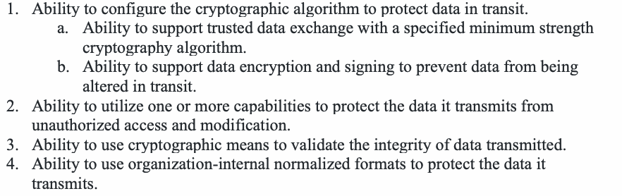
1.伝送中のデータを保護する暗号アルゴリズムを設定できること。
a.Ability to support trusted data exchange with a specified minimum strength cryptography algorithm.
a.指定された最低強度の暗号アルゴリズムによる信頼できるデータ交換をサポートできること。
b.Ability to support data encryption and signing to prevent data from being altered in transit.
b.伝送中のデータが改ざんされるのを防ぐため、データの暗号化と署名をサポートできること。
2.Ability to utilize one or more capabilities to protect the data it transmits from unauthorized access and modification.
2.送信するデータを不正なアクセスや改変から保護するため、1つ以上の機能を利用できること。
3.Ability to use cryptographic means to validate the integrity of data transmitted.
3.送信したデータの完全性を検証するために、暗号的手段を使用できること。
4.Ability to use organization-internal normalized formats to protect the data it transmits.
4.送信するデータを保護するために、組織内部の正規化された形式を使用できること。
LA - LOGICAL ACCESS TO INTERFACES
LA — インターフェースへの論理アクセス
Description: Ability to require authentication to, and/or identification of, the IoT device, and to establish authentication and identification configuration and display requirements.
原本PDFの抜粋画像
説明：IoTデバイスへの認証や識別を要求し、認証・識別の構成および表示要件を定める機能。
Discussion: The logical access to interfaces capability supports cybersecurity needs and goals such as vulnerability management, access management, data protection, and incident detection. The ability to access the device will support its management and use for cybersecurity. Some form factors or use cases may vary in the kinds of interfaces available for accessing the device (e.g., if a physical screen is not possible). A key aspect of this capability is the ability for organizations to control access to interfaces. Limiting access to interfaces reduces the attack surface of the device, giving attackers fewer opportunities to compromise it. For example, unrestricted network access to an IoT device enables attackers to directly interact with the device, which significantly increases the likelihood of the device being compromised. Authentication of other entities (e.g., humans, other devices) will be a common way to support logical access to interfaces, which has been addressed in FIPS 201-2 [FIPS-201] and SP 800-63 [800-63].
考察：インタフェースへの論理アクセス機能は、脆弱性管理、アクセス管理、データ保護、インシデント検知などのサイバーセキュリティ上のニーズと目標を支援する。デバイスにアクセスできることは、サイバーセキュリティのための管理と使用を支える。フォームファクタやユースケースによっては、デバイスにアクセスするために利用できるインタフェースの種類が異なる場合がある（例：物理的な画面を備えられない場合）。この機能の重要な側面は、組織がインタフェースへのアクセスを制御できることである。インタフェースへのアクセスを制限すると、デバイスの攻撃対象領域が縮小し、攻撃者がデバイスを危殆化させる機会が減る。たとえば、IoTデバイスへのネットワークアクセスを無制限にすると、攻撃者がデバイスと直接やり取りできるようになり、デバイスが危殆化する可能性が大幅に高まる。他のエンティティ（例：人間、他のデバイス）の認証は、インタフェースへの論理アクセスを支える一般的な方法となり、これは FIPS 201-2 [FIPS-201] および SP 800-63 [800-63] で扱われている。
Sub-Capabilities that may be necessary:
必要となる可能性のあるサブ機能：
(AUN) Authentication Support
（AUN）認証のサポート
Description: Ability to support authentication methods.
説明：認証方法をサポートできる機能。
Discussion: To control logical access to interfaces, the IoT device may need to support adequate authentication methods. Some IoT devices or organizations may need support for Personal Identity Verification (PIV). More information about PIV can be found in FIPS 201-2 [FIPS-201].
考察：インタフェースへの論理アクセスを制御するために、IoTデバイスは適切な認証方法をサポートする必要がある場合がある。IoTデバイスや組織によっては、個人識別検証（PIV）のサポートが必要になる場合がある。PIV の詳細については、FIPS 201-2 [FIPS-201] を参照のこと。
Related SP 800-53 Rev. 5 Controls: AC-17(10), IA-2, IA-2(1), IA-2(2), IA-6
関連するSP 800-53 Rev.5管理策：AC-17(10)、IA-2、IA-2(1)、IA-2(2)、IA-6
Requirements that may be necessary:
必要となる可能性のある要件：
1.Ability for the IoT device to require authentication prior to connecting to the device, including using remote access.
原本PDFの抜粋画像
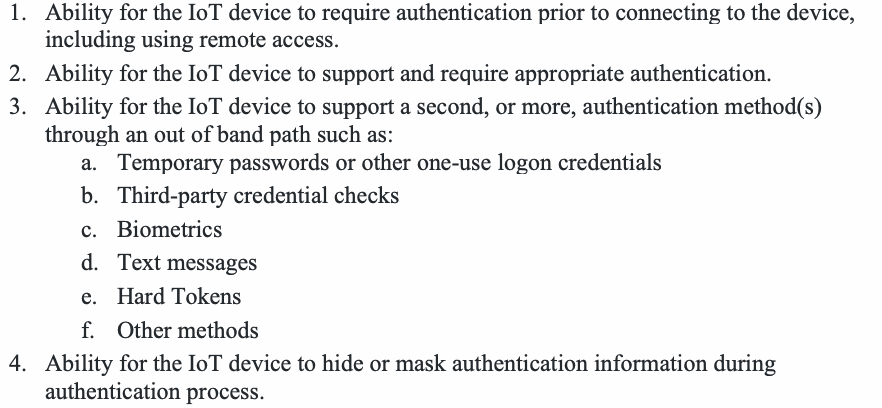
1.IoTデバイスが、リモートアクセスを含め、デバイスへの接続前に認証を要求できること。
2.Ability for the IoT device to support and require appropriate authentication.
2.IoTデバイスが、適切な認証をサポートし、要求できること。
3.Ability for the IoT device to support a second, or more, authentication method(s) through an out of band path such as:
3.IoTデバイスが、帯域外の経路を通じた次のような第2以上の認証方法をサポートできること：
a.Temporary passwords or other one-use logon credentials
a.一時パスワードまたはその他の使い捨てログイン資格情報
b.Third-party credential checks
b.第三者による資格情報の確認
c.Biometrics
c.生体認証
d.Text messages
d.テキストメッセージ
e.Hard Tokens
e.ハードトークン
f.Other methods
f.その他の方法
4.Ability for the IoT device to hide or mask authentication information during authentication process.
4.IoTデバイスが、認証プロセス中に認証情報を非表示にするかマスクできること。
5.Ability to use federated authentication technologies (e.g., SAML, OAuth2, or Active Directory/Azure Active Directory).
原本PDFの抜粋画像
5.SAML、OAuth2、Active Directory／Azure Active Directoryなどのフェデレーション認証技術を利用できること。
(ACF) Authentication Configuration
（ACF）認証の構成
Description: Ability to require, or not require, authentication to, and/or identification of, the IoT device, and to establish authentication and identification configuration and display requirements.
原本PDFの抜粋画像
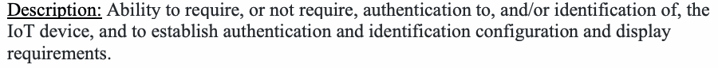
説明：IoTデバイスへの認証および／またはIoTデバイスの識別を要求するかどうかを設定し、認証および識別の構成と表示要件を定める機能。
Discussion: Organizations may need to configure aspects of the authentication mechanism present in the IoT device to conform with access control security requirements. This sub-capability can support application of organizational policies around access privilege management, such as the management of access accounts and privileges of those accounts.
考察：組織は、アクセス制御のセキュリティ要件に適合させるため、IoTデバイスに備わる認証の仕組みの各側面を設定する必要がある場合がある。このサブ機能は、アクセスアカウントとそれらのアカウントの権限の管理など、アクセス権限管理に関する組織のポリシーの適用を支援できる。
Related SP 800-53 Rev. 5 Controls: AC-2(2), AC-2(3), AC-2(5), AC-3(8), AC-7, AC-9, AC-17, AU-2, IA-8
関連するSP 800-53 Rev.5管理策：AC-2(2), AC-2(3), AC-2(5), AC-3(8), AC-7, AC-9, AC-17, AU-2, IA-8
Requirements that may be necessary:
必要となる可能性のある要件：
1.Ability to set and change authentication configurations, policies and limitations settings for the IoT device.
原本PDFの抜粋画像
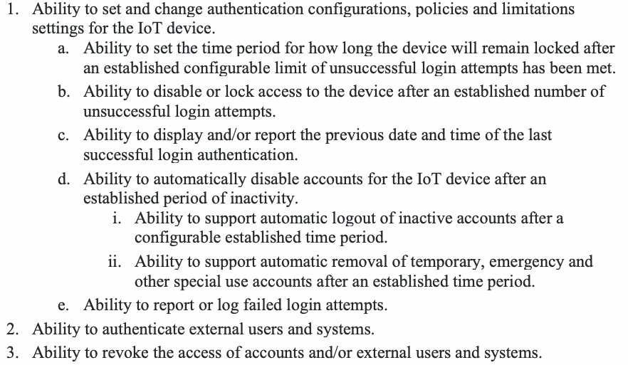
1.IoTデバイスの認証設定、ポリシー、制限値を設定・変更できること。
a.Ability to set the time period for how long the device will remain locked after an established configurable limit of unsuccessful login attempts has been met.
a.設定可能なログイン失敗回数の上限に達した後、デバイスがロックされる時間を設定できること。
b.Ability to disable or lock access to the device after an established number of unsuccessful login attempts.
b.規定回数のログイン失敗後、デバイスへのアクセスを無効化またはロックできること。
c.Ability to display and/or report the previous date and time of the last successful login authentication.
c.直近で認証に成功したログインの日時を表示または報告できること。
d.Ability to automatically disable accounts for the IoT device after an established period of inactivity.
d.規定の非活動期間が経過した後、IoTデバイスのアカウントを自動的に無効化できること。
i.Ability to support automatic logout of inactive accounts after a configurable established time period.
i.設定可能な所定の時間が経過した後、非アクティブなアカウントを自動ログアウトさせることをサポートできること。
ii.Ability to support automatic removal of temporary, emergency and other special use accounts after an established time period.
ii.所定の時間が経過した後、一時アカウント、緊急時用アカウントおよびその他の特別用途アカウントを自動的に削除することをサポートできること。
e.Ability to report or log failed login attempts.
e.ログイン失敗を報告または記録できること。
2.Ability to authenticate external users and systems.
2.外部のユーザーおよびシステムを認証できること。
3.Ability to revoke the access of accounts and/or external users and systems.
3.アカウントおよび／または外部ユーザーおよびシステムのアクセス権を取り消せること。
(USE) System Use Notification Support
（USE）システム利用通知のサポート
Description: Ability to support system use notifications.
説明：システム使用通知をサポートできる機能。
Discussion: Some IoT devices may have to alert users that the IoT device uses a federal information system and provide notices consistent with federal laws, Executive Orders, directives, policies, regulations, standards, and guidance. Some organizations may require the ability for an IoT device to display such notices in order to comply with their security requirements.
考察：IoTデバイスが連邦情報システムを使用していることをユーザーに警告し、連邦法、大統領令、指令、ポリシー、規制、標準およびガイダンスに整合する通知を提示しなければならないIoTデバイスがある。組織のセキュリティ要件を満たすため、このような通知をIoTデバイスが表示できることを求める組織もある。
Related SP 800-53 Rev. 5 Controls: AC-8
関連するSP 800-53 Rev.5管理策：AC-8
Requirements that may be necessary:
必要となる可能性のある要件：
1.Ability to display to IoT device users an organizationally-defined system use notification message or banner prior to successful IoT device authentication. (e.g., the message or banner would provide privacy and security notices consistent with applicable federal laws, Executive Orders, directives, policies, regulations, standards, and guidance).
原本PDFの抜粋画像
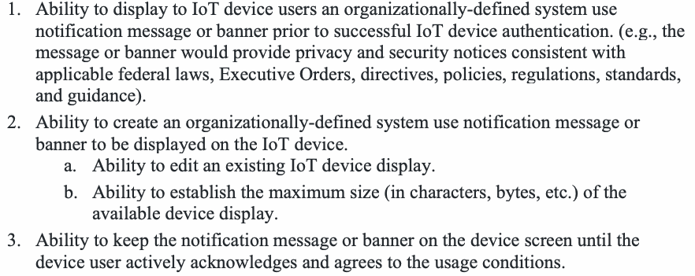
1.IoTデバイスの認証に成功する前に、組織が定義したシステム使用通知メッセージまたはバナーをIoTデバイスのユーザーに表示できること。（たとえば、このメッセージまたはバナーは、該当する連邦法、大統領令、指令、ポリシー、規則、標準およびガイダンスに沿ったプライバシーおよびセキュリティに関する通知を提供する）
2.Ability to create an organizationally-defined system use notification message or banner to be displayed on the IoT device.
2.IoTデバイスに表示する、組織定義のシステム使用通知メッセージまたはバナーを作成できること。
a.Ability to edit an existing IoT device display.
a.既存のIoTデバイスの表示を編集できること。
b.Ability to establish the maximum size (in characters, bytes, etc.) of the available device display.
b.デバイスの利用可能な表示領域の最大サイズ（文字数、バイト数など）を設定できること。
3.Ability to keep the notification message or banner on the device screen until the device user actively acknowledges and agrees to the usage conditions.
3.デバイスのユーザーが利用条件を能動的に確認し同意するまで、通知メッセージまたはバナーをデバイスの画面に表示し続けられること。
(AUZ) Authorization Support
（AUZ）認可のサポート
Description: Ability to restrict all unauthorized interactions.
説明：許可されていないすべてのやり取りを制限できる機能。
Discussion: Limitation of actions and interactions possible based on privileges associated with an authenticated identity is important to controlling interface access.
考察：認証済みの識別情報に関連付けられた権限に基づいて、実行可能な操作ややり取りを制限することは、インターフェースへのアクセス制御に重要である。
Related SP 800-53 Rev. 5 Controls: IA-2
関連するSP 800-53 Rev.5管理策：IA-2
Requirements that may be necessary:
必要となる可能性のある要件：
1.Ability to identify authorized users and processes (e.g., applications).
原本PDFの抜粋画像
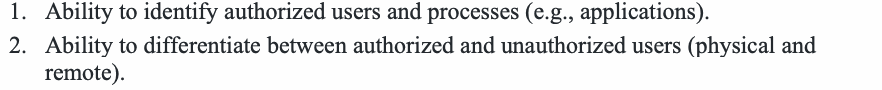
1.許可されたユーザーとプロセス（アプリケーションなど）を識別できること。
2.Ability to differentiate between authorized and unauthorized users (physical and remote).
2.許可されたユーザーと許可されていないユーザー（物理的なユーザーとリモートのユーザー）を区別できること。
(AIM) Authentication & Identity Management
（AIM）認証とアイデンティティ管理
Description: Ability to establish access to the IoT device to perform organizationally-defined user actions without identification or authentication.
原本PDFの抜粋画像
説明：識別や認証を伴わずに組織定義のユーザー操作を実行できるよう、IoTデバイスへのアクセスを設定する機能。
Discussion: Organizations may need certain actions performed on or with the device accessible without identification or authentication to meet organizational needs. The actions may be defined by the use case or other aspects of how the organization plans to use the IoT device.
考察：組織のニーズを満たすため、識別や認証なしにデバイス上またはデバイスを使って実行できる特定の操作へのアクセスを、組織が必要とする場合がある。対象となる操作は、ユースケースや、組織がIoTデバイスをどのように利用する予定かといったその他の側面によって定まる場合がある。
Related SP 800-53 Rev. 5 Controls: AC-14
関連するSP 800-53 Rev.5管理策：AC-14
(ROL) Role Support & Management
（ROL）役割のサポートと管理
Description: Ability to establish unique, privileged, organization-wide, and other types of IoT device user accounts.
説明：一意のアカウント、特権アカウント、組織全体のアカウントなど、各種のIoTデバイスユーザーアカウントを確立できる機能。
Discussion: Some IoT devices may have multiple users within an organization and require support for role and account management. These accounts may then be used are part of the identification, authentication, and authorization of users based on roles and privileges.
考察：IoTデバイスを組織内の複数ユーザーが利用し、役割とアカウントの管理をサポートする必要がある場合がある。これらのアカウントは、役割と権限に基づくユーザーの識別、認証、認可にも使用される。
Related SP 800-53 Rev. 5 Controls: AC-2, AC-2(1), AC-2(7), AC-2(8), AC-2(9), AC-3, AC-3(7), AC-3(12) AC-6, AC-21, IA-4, SC-2
関連するSP 800-53 Rev.5管理策：AC-2, AC-2(1), AC-2(7), AC-2(8), AC-2(9), AC-3, AC-3(7), AC-3(12) AC-6, AC-21, IA-4, SC-2
Requirements that may be necessary:
必要となる可能性のある要件：
1.IoTデバイスの一意のユーザーアカウントを作成できること。
2.Ability to assign roles to IoT device user accounts.
2.IoTデバイスのユーザーアカウントに役割を割り当てられること。
3.Ability to identify unique IoT device user accounts.
3.IoTデバイスの一意のユーザーアカウントを識別できること。
4.Ability to support a hierarchy of logical access privileges for the IoT device based on roles (e.g., admin, emergency, user, local, temporary, etc.).
4.役割（管理者、緊急時用、ユーザー、ローカル、一時など）に基づく、IoTデバイスの論理アクセス権限の階層をサポートできること。
a.Ability to establish user accounts to support role-based logical access privileges.
a.役割ベースの論理アクセス権限をサポートするため、ユーザーアカウントを設定できること。
b.Ability to administer user accounts to support role-based logical access privileges.
b.役割ベースの論理アクセス権限をサポートするため、ユーザーアカウントを管理できること。
c.Ability to use organizationally-defined roles to define each user account’s access and permitted device actions.
c.組織定義の役割を使用して、各ユーザーアカウントのアクセスと許可されるデバイス操作を定義できること。
d.Ability to support multiple levels of user/process account functionality and roles for the IoT device.
d.IoTデバイスにおいて、ユーザー／プロセスアカウントの機能と役割の複数のレベルをサポートできること。
5.Ability to apply least privilege to user accounts (i.e., to ensure that the processes operate at privilege levels no higher than necessary to accomplish required functions).
5.ユーザーアカウントに最小権限を適用できること（すなわち、プロセスが必要な機能を実行するために必要な権限レベルを超えて動作しないようにすること）。
a.Ability to create additional processes, roles (e.g., admin, emergency, temporary, etc.) and accounts as necessary to achieve least privilege.
a.最小権限を実現するために必要に応じて、追加のプロセス、役割（管理者、緊急時用、一時など）およびアカウントを作成できること。
b.Ability to apply least privilege settings within the device (i.e., to ensure that the processes or applications operate at privilege levels no higher than necessary to accomplish required functions).
b.デバイス内で最小権限の設定を適用できること（すなわち、プロセスまたはアプリケーションが必要な機能を実行するために必要な権限レベルを超えて動作しないようにすること）。
c.Ability to limit access to privileged device settings that are used to establish and administer authorization requirements.
c.認可要件を設定および管理するために使用される、デバイスの特権設定へのアクセスを制限できること。
d.Ability for authorized users to access privileged settings.
d.許可されたユーザーが特権設定にアクセスできること。
6.Ability to support organizationally-defined actions for the IoT device.
6.IoTデバイスについて、組織定義の操作をサポートできること。
a.Ability to create organizationally-defined accounts that support privileged roles with automated expiration conditions.
a.自動的な有効期限条件を持つ、特権役割をサポートする組織定義のアカウントを作成できること。
b.Ability to establish organizationally-defined user actions for accessing the IoT device and/or device interface.
b.IoTデバイスおよび／またはデバイスインターフェースにアクセスするための、組織定義のユーザー操作を設定できること。
c.Ability to enable automation and reporting of account management activities.
c.アカウント管理活動の自動化と報告を可能にできること。
d.Ability to assign access to IoT device audit controls to specific roles or organizationally-defined personnel.
d.IoTデバイスの監査制御へのアクセスを、特定の役割または組織定義の要員に割り当てられること。
e.Ability to control access to IoT device audit data.
e.IoTデバイスの監査データへのアクセスを制御できること。
f.Ability to identify the user, process or device requesting access to the audit/accountability information (i.e., to ensure only authorized users and/or devices have access).
原本PDFの抜粋画像
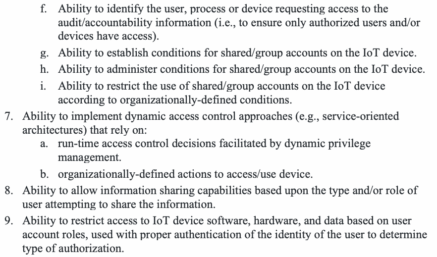
f.監査／説明責任情報へのアクセスを要求するユーザー、プロセスまたはデバイスを識別できること（すなわち、許可されたユーザーおよび／またはデバイスだけがアクセスできるようにすること）。
g.Ability to establish conditions for shared/group accounts on the IoT device.
g.IoTデバイス上の共有／グループアカウントの条件を設定できること。
h.Ability to administer conditions for shared/group accounts on the IoT device.
h.IoTデバイス上の共有／グループアカウントの条件を管理できること。
i.Ability to restrict the use of shared/group accounts on the IoT device according to organizationally-defined conditions.
i.組織定義の条件に従って、IoTデバイス上の共有／グループアカウントの使用を制限できること。
7.Ability to implement dynamic access control approaches (e.g., service-oriented architectures) that rely on:
7.次に依拠する動的アクセス制御方式（たとえば、サービス指向アーキテクチャ）を実装できること。
a.run-time access control decisions facilitated by dynamic privilege management.
a.動的な権限管理によって実現される、実行時のアクセス制御の判断。
b.organizationally-defined actions to access/use device.
b.デバイスにアクセスまたはデバイスを使用するための、組織が定義した操作。
8.Ability to allow information sharing capabilities based upon the type and/or role of user attempting to share the information.
8.情報を共有しようとするユーザーの種類および／または役割に基づいて、情報の共有を許可できること。
9.Ability to restrict access to IoT device software, hardware, and data based on user account roles, used with proper authentication of the identity of the user to determine type of authorization.
9.ユーザーアカウントの役割に基づいてIoTデバイスのソフトウェア、ハードウェアおよびデータへのアクセスを制限できること。この際、認可の種類を判断するために、ユーザーのIDを適切に認証する。
(LDU) Limitations on Device Usage
（LDU）デバイス使用の制限
Description: Ability to establish restrictions for how the device can be used.
説明：デバイスの使用方法に対する制限を設定できる機能。
Discussion: Aspects of how the IoT device can be used by internal and external users may have to be limited by the organization to comply with security and organizational requirements. In some instances, limitations may have to apply to all who interact with the device, but in others the limitation may change based on various factors.
考察：セキュリティ要件や組織要件を満たすため、内部ユーザーと外部ユーザーによるIoTデバイスの使用方法の側面を、組織が制限しなければならない場合がある。制限をデバイスとやり取りするすべての人に適用しなければならない場合もあれば、さまざまな要因に応じて制限が変わる場合もある。
Related SP 800-53 Rev. 5 Controls: AC-10, AC-21(2)
関連するSP 800-53 Rev.5管理策：AC-10、AC-21(2)
Requirements that may be necessary:
必要となる可能性のある要件：
1.Ability to establish pre-defined restrictions for information searches within the device.
原本PDFの抜粋画像
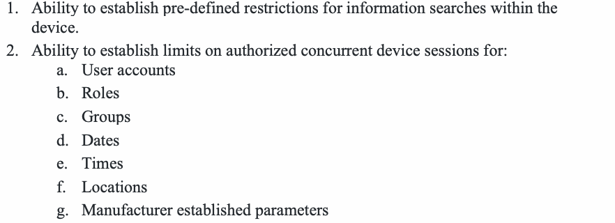
1.デバイス内の情報検索に対して、あらかじめ定義された制限を設定できること。
2.Ability to establish limits on authorized concurrent device sessions for:
2.次について、許可される同時デバイスセッションの上限を設定できること。
a.User accounts
a.ユーザーアカウント
b.Roles
b.役割
c.Groups
c.グループ
d.Dates
d.日付
e.Times
e.時刻
f.Locations
f.場所
g.Manufacturer established parameters
g.製造者が設定するパラメーター
(XCN) External Connections
（XCN）外部接続
Description: Ability to support external connections.
説明：外部接続をサポートできる機能。
Discussion: Complexities of how system resources are distributed and managed by organizations may require them to securely make external connections to comply with and support security controls.
考察：組織によるシステムリソースの分散や管理が複雑であるため、組織はセキュリティ管理策に準拠し、またはそれを支援する目的で、外部接続を安全に行う必要が生じる場合がある。
Related SP 800-53 Rev. 5 Controls: AC-10, AC-20(1), AC-21, SC-8
関連するSP 800-53 Rev.5管理策：AC-10、AC-20(1)、AC-21、SC-8
Requirements that may be necessary:
必要となる可能性のある要件：
1.Ability to securely interact with authorized external, third-party systems.
原本PDFの抜粋画像
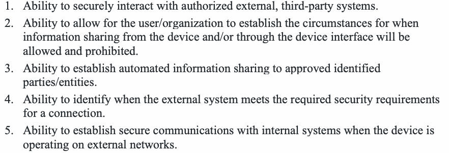
1.許可された外部のサードパーティシステムと安全にやり取りできること。
2.Ability to allow for the user/organization to establish the circumstances for when information sharing from the device and/or through the device interface will be allowed and prohibited.
2.デバイスからの、および／またはデバイスインターフェースを通じた情報共有を許可する状況と禁止する状況を、ユーザー／組織が設定できること。
3.Ability to establish automated information sharing to approved identified parties/entities.
3.承認された特定の相手／主体への情報共有を自動化できること。
4.Ability to identify when the external system meets the required security requirements for a connection.
4.外部システムが接続に必要なセキュリティ要件を満たしているかどうかを識別できること。
5.Ability to establish secure communications with internal systems when the device is operating on external networks.
5.デバイスが外部ネットワーク上で動作しているときに、内部システムとの安全な通信を確立できること。
(IFC) Interface Control
（IFC）インターフェース制御
Description: Ability to establish controls for the connections made to the IoT device.
説明：IoTデバイスへの接続に対する制御を確立できる機能。
Discussion: Many aspects of how the IoT device can be interacted with may have to be controlled by the organization to comply with security controls, but which will depend on the organization, system, and IoT device.
考察：セキュリティ管理策に準拠するため、IoTデバイスとのやり取りに関するさまざまな側面を組織が制御しなければならない場合がある。ただし、制御の内容は、組織、システム、IoTデバイスによって異なる。
Related SP 800-53 Rev. 5 Controls: AC-3, AC-6, AC-17, AC-17(4), AC-18, CM-5, CM-7, SI-15
関連するSP 800-53 Rev.5管理策：AC-3, AC-6, AC-17, AC-17(4), AC-18, CM-5, CM-7, SI-15
Requirements that may be necessary:
必要となる可能性のある要件：
1.Ability to establish requirements for remote access to the IoT device and/or IoT device interface including:
原本PDFの抜粋画像
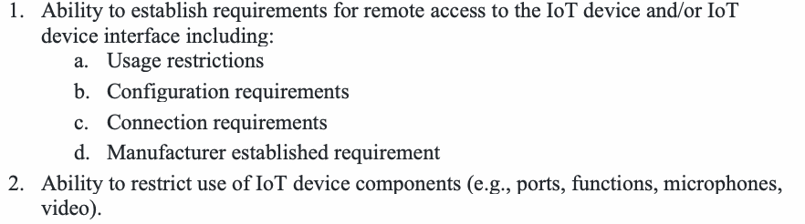
1.次を含め、IoTデバイスおよび／またはIoTデバイスインターフェースへのリモートアクセスの要件を設定できること：
a.Usage restrictions
a.使用上の制限
b.Configuration requirements
b.構成要件
c.Connection requirements
c.接続要件
d.Manufacturer established requirement
d.製造者が設定する要件
2.Ability to restrict use of IoT device components (e.g., ports, functions, microphones, video).
2.IoTデバイスの構成要素（ポート、機能、マイク、ビデオなど）の使用を制限できること。
3.Ability to logically or physically disable any local and network interfaces that are not necessary for the core functionality of the device.
原本PDFの抜粋画像
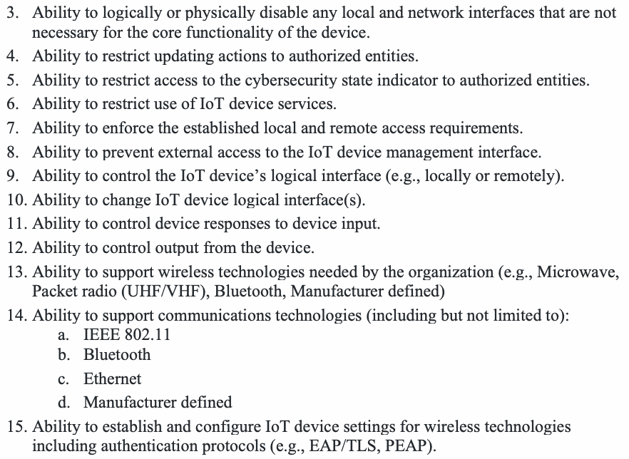
3.デバイスの中核機能に不要なローカルインターフェースおよびネットワークインターフェースを、論理的または物理的に無効化できること。
4.Ability to restrict updating actions to authorized entities.
4.更新操作を許可された主体に限定できること。
5.Ability to restrict access to the cybersecurity state indicator to authorized entities.
5.サイバーセキュリティ状態インジケーターへのアクセスを、許可された主体に限定できること。
6.Ability to restrict use of IoT device services.
6.IoTデバイスのサービスの使用を制限できること。
7.Ability to enforce the established local and remote access requirements.
7.設定されたローカルおよびリモートのアクセス要件を強制できること。
8.Ability to prevent external access to the IoT device management interface.
8.IoTデバイス管理インターフェースへの外部からのアクセスを防止できること。
9.Ability to control the IoT device’s logical interface (e.g., locally or remotely).
9.IoTデバイスの論理インターフェースを（ローカルまたはリモートで）制御できること。
10.Ability to change IoT device logical interface(s).
10.IoTデバイスの論理インターフェースを変更できること。
11.Ability to control device responses to device input.
11.デバイス入力に対するデバイスの応答を制御できること。
12.Ability to control output from the device.
12.デバイスからの出力を制御できること。
13.Ability to support wireless technologies needed by the organization (e.g., Microwave, Packet radio (UHF/VHF), Bluetooth, Manufacturer defined)
13.組織が必要とする無線技術（マイクロ波、パケット無線（UHF/VHF）、Bluetooth、製造者定義のものなど）をサポートできること。
14.Ability to support communications technologies (including but not limited to):
14.次を含む（ただしこれらに限定されない）通信技術をサポートできること。
a.IEEE 802.11
a.IEEE 802.11
b.Bluetooth
b.Bluetooth
c.Ethernet
c.Ethernet
d.Manufacturer defined
d.製造者定義のもの
15.Ability to establish and configure IoT device settings for wireless technologies including authentication protocols (e.g., EAP/TLS, PEAP).
15.認証プロトコル（EAP/TLS、PEAPなど）を含む無線技術について、IoTデバイスの設定を確立し、構成できること。
SU - SOFTWARE UPDATE
SU — ソフトウェア更新
Description: Ability to update IoT device software, and to have support mechanisms for such updates.
原本PDFの抜粋画像
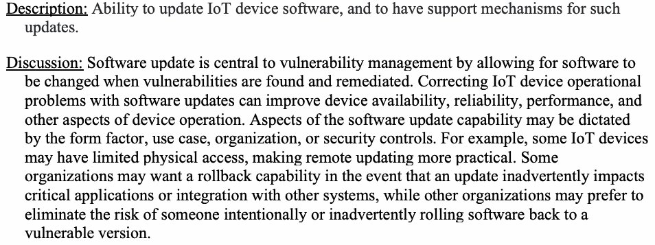
説明：IoTデバイスのソフトウェアを更新し、その更新のための支援機構を備える機能。
Discussion: Software update is central to vulnerability management by allowing for software to be changed when vulnerabilities are found and remediated. Correcting IoT device operational problems with software updates can improve device availability, reliability, performance, and other aspects of device operation. Aspects of the software update capability may be dictated by the form factor, use case, organization, or security controls. For example, some IoT devices may have limited physical access, making remote updating more practical. Some organizations may want a rollback capability in the event that an update inadvertently impacts critical applications or integration with other systems, while other organizations may prefer to eliminate the risk of someone intentionally or inadvertently rolling software back to a vulnerable version.
考察：ソフトウェア更新は、脆弱性が発見され、是正されたときにソフトウェアを変更できるようにすることで、脆弱性管理の中心となる。ソフトウェア更新によってIoTデバイスの運用上の問題を是正すると、デバイスの可用性、信頼性、性能その他の運用面を改善できる。ソフトウェア更新機能の側面は、フォームファクター、ユースケース、組織またはセキュリティ管理策によって規定される場合がある。たとえば、IoTデバイスによっては物理的なアクセスが限られ、リモートでの更新のほうが実用的な場合がある。更新が重要なアプリケーションや他のシステムとの統合に意図せず影響した場合に備えて、ロールバック機能を望む組織もあれば、誰かが意図的または偶発的にソフトウェアを脆弱なバージョンへ戻すリスクを排除したい組織もある。
Sub-Capabilities that may be necessary:
必要となる可能性のあるサブ機能：
(UPD) Update Capabilities
（UPD）更新機能
Description: Ability to update the IoT device software within the device and/or through the IoT device interface.
原本PDFの抜粋画像
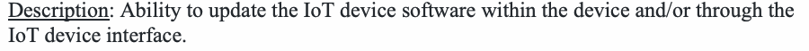
説明：デバイス内またはIoTデバイスのインターフェースを通じて、IoTデバイスのソフトウェアを更新する機能。
Discussion: This sub-capability describes how an IoT device’s update capability should function regarding the application of the update and parameters of the application. Organizations may need to identify specific requirements for the update mechanism to ensure it can be effectively used within the broader vulnerability and patch management policies they implement.
考察：このサブ機能は、更新の適用方法や適用時のパラメーターに関して、IoTデバイスの更新機能がどのように動作すべきかを説明する。組織が実施する、脆弱性およびパッチ管理に関するより広範なポリシーの中で更新メカニズムを効果的に使用できるようにするため、組織は更新メカニズムに対する具体的な要件を特定する必要がある場合がある。
Related SP 800-53 Rev. 5 Controls: AU-1, CM-3, CM-5, CM-14, SI-7(15)
関連するSP 800-53 Rev.5管理策：AU-1、CM-3、CM-5、CM-14、SI-7(15)
Requirements that may be necessary:
必要となる可能性のある要件：
1.Ability to update the software by authorized entities only using a secure and configurable mechanism.
原本PDFの抜粋画像
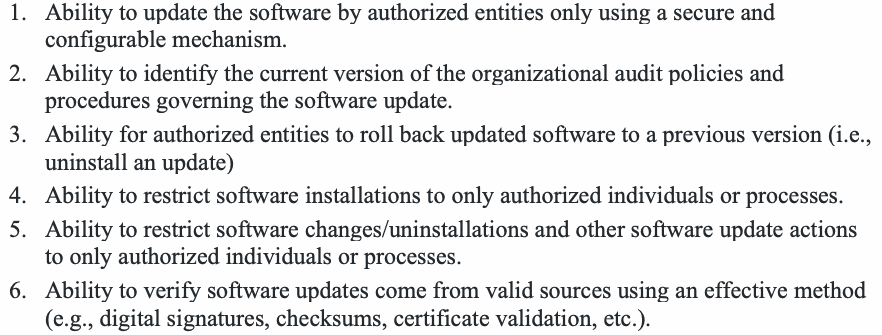
1.安全で構成可能な機構を使用して、許可された主体だけがソフトウェアを更新できること。
2.Ability to identify the current version of the organizational audit policies and procedures governing the software update.
2.ソフトウェア更新を統制する組織の監査ポリシーおよび手順の現行バージョンを識別できること。
3.Ability for authorized entities to roll back updated software to a previous version (i.e., uninstall an update)
3.許可された主体が、更新後のソフトウェアを以前のバージョンへロールバックできること（すなわち、更新をアンインストールすること）。
4.Ability to restrict software installations to only authorized individuals or processes.
4.ソフトウェアのインストールを、許可された個人またはプロセスだけに限定できること。
5.Ability to restrict software changes/uninstallations and other software update actions to only authorized individuals or processes.
5.ソフトウェアの変更／アンインストールおよびその他のソフトウェア更新操作を、許可された個人またはプロセスだけに限定できること。
6.Ability to verify software updates come from valid sources using an effective method (e.g., digital signatures, checksums, certificate validation, etc.).
6.有効な方法（デジタル署名、チェックサム、証明書検証など）を用いて、ソフトウェア更新が有効な提供元から来ていることを検証できること。
7.Ability to execute the software update mechanism with fault tolerance such that a failed or interrupted update (e.g., loss of communication while downloading, device power loss while installing) does not degrade the IoT device’s cybersecurity state.
原本PDFの抜粋画像
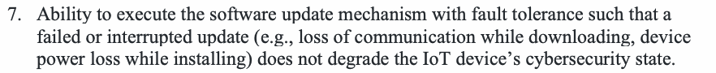
7.ソフトウェア更新メカニズムをフォールトトレラントに実行し、更新に失敗または中断（ダウンロード中の通信断やインストール中のデバイス電源喪失など）が発生しても、IoTデバイスのサイバーセキュリティ状態が低下しないこと。
(APP) Update Application Support
（APP）更新アプリケーションのサポート
Description: Ability to update the device’s software through remote (e.g., network download) and/or local (e.g., removable media) means
原本PDFの抜粋画像
説明：リモート（ネットワークからのダウンロードなど）やローカル（リムーバブルメディアなど）の手段でデバイスのソフトウェアを更新する機能。
Discussion: Organizations may need to identify specific requirements for how updates are delivered to ensure they can be effectively monitored within the broader vulnerability and patch management policies they implement. Some IoT devices may also tie application of an update with its delivery (e.g., in an automatic update mechanism), which organization may consider as part of their identification of device cybersecurity requirements.
考察：より広範な脆弱性およびパッチ管理ポリシーの中で更新を効果的に監視できるよう、更新の配信方法に関する要件を具体的に定める必要がある場合がある。一部のIoTデバイスでは、自動更新メカニズムのように更新の適用と配信が連動することもある。デバイスのサイバーセキュリティ要件を決定する際に、組織がこの点を考慮する場合がある。
Related SP 800-53 Rev. 5 Controls: SI-2
関連するSP 800-53 Rev.5管理策：SI-2
Requirements that may be necessary:
必要となる可能性のある要件：
1.ソフトウェア更新が自動的に配信され適用される場合：
a.Ability to verify and authenticate any update before installing it
a.更新をインストールする前に、その更新を検証し認証できること
b.Ability to enable or disable updating
b.更新を有効化または無効化できること
2.If software updates are remote:
2.ソフトウェア更新がリモートで行われる場合：
a.Ability to set update mechanisms functions (e.g., download, installation) to be either automatically or manually initiated.
a.更新機構の機能（ダウンロード、インストールなど）を、自動または手動のどちらで開始するかを設定できること。
3.If notifications for software updates are delivered through the IoT device:
3.ソフトウェア更新の通知がIoTデバイスを通じて配信される場合：
a.Ability to enable or disable notification when an update is available
a.更新が利用可能になったときの通知を有効化または無効化できること
b.Ability to specify which entities should receive notifications
b.どの主体が通知を受け取るべきかを指定できること
CS - CYBERSECURITY STATE AWARENESS
CS — サイバーセキュリティ状態の認識
Description: The capability to generate data indicating different types of events related to the use of the device to meet organizational requirements.
原本PDFの抜粋画像
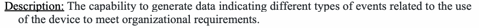
説明：組織の要件を満たすため、デバイスの使用に関連するさまざまな種類のイベントを示すデータを生成する機能。
Discussion: Cybersecurity state awareness supports vulnerability management and incident detection by helping enable investigation of compromises, identify misuse, and troubleshoot some operational problems. Capture of cybersecurity state information, logging of this information, and auditing of logs may be needed on the IoT device depending on its design, use case, and other considerations. Cybersecurity state awareness can be critical to ensuring trust in the device’s operation, including device cybersecurity capabilities.
考察：サイバーセキュリティ状態の認識は、侵害の調査、不正使用の特定、一部の運用上の問題のトラブルシューティングを可能にし、脆弱性管理とインシデント検知を支援する。IoTデバイスの設計、ユースケースその他の考慮事項に応じて、デバイス上でサイバーセキュリティ状態情報を取得し、その情報を記録し、ログを監査する必要がある場合がある。サイバーセキュリティ状態の認識は、デバイスのサイバーセキュリティ機能を含む、デバイスの動作に対する信頼を確保するうえで重要となる場合がある。
Sub-Capabilities that may be necessary:
必要となる可能性のあるサブ機能：
(AEI) Access to Event Information
（AEI）イベント情報へのアクセス
Description: Ability to access IoT device state information.
説明：IoTデバイスの状態情報にアクセスできる機能。
Discussion: Organizations may have various uses for IoT device cybersecurity state information which may require the device to collect and make such data available when necessary.
考察：組織はIoTデバイスのサイバーセキュリティ状態情報をさまざまな用途に利用する場合があり、そのために、必要に応じてデバイスがそのようなデータを収集し、利用可能にする必要が生じることがある。
Related SP 800-53 Rev. 5 Controls: AU-11, AU-12, SI-4
関連するSP 800-53 Rev.5管理策：AU-11、AU-12、SI-4
Requirements that may be necessary:
必要となる可能性のある要件：
1.Ability to access information about the IoT device's cybersecurity state and other necessary data.
原本PDFの抜粋画像
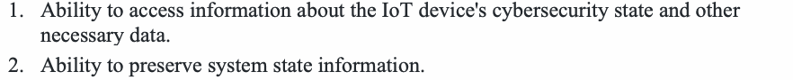
1.IoTデバイスのサイバーセキュリティ状態およびその他の必要なデータに関する情報にアクセスできること。
2.Ability to preserve system state information.
2.システム状態情報を保持できること。
(EIM) Event Identification & Monitoring
（EIM）イベントの識別と監視
Description: Ability to provide event identification and monitoring capabilities and/or support event identification and monitoring tools interfacing with the device.
原本PDFの抜粋画像
説明：イベントの識別・監視機能を提供し、および／または、デバイスに接続するイベント識別・監視ツールを支援できること。
Discussion: Monitoring for cybersecurity and other adverse events is a component of many organizations’ control set to enable proactive assessment of cybersecurity posture. IoT devices may have to support this kind of monitoring, and the nature of the monitoring (e.g., events or channels of interest) may be related to the IoT device’s use case.
考察：サイバーセキュリティやその他の有害事象を監視することは、サイバーセキュリティ態勢の予防的な評価を可能にするため、多くの組織の管理策群を構成する。IoTデバイスにもこの種の監視を支援する必要がある場合があり、監視対象（関心のあるイベントやチャネルなど）はIoTデバイスのユースケースに関連する場合がある。
Related SP 800-53 Rev. 5 Controls: AU-2, AU-13, CA-7, CM-3, CM-6, IA-2, SC-7, SC-15, SC-42, SI-4
関連するSP 800-53 Rev.5管理策：AU-2, AU-13, CA-7, CM-3, CM-6, IA-2, SC-7, SC-15, SC-42, SI-4
Requirements that may be necessary:
必要となる可能性のある要件：
1.Ability to identify organizationally-defined cybersecurity events (e.g., expected state change) that may occur on or involving the IoT device.
原本PDFの抜粋画像
1.IoTデバイス上で、またはIoTデバイスに関して発生し得る組織定義のサイバーセキュリティイベント（想定された状態変化など）を識別できること。
2.Ability to monitor for organizationally-defined cybersecurity events (e.g., expected state change) that may occur on or involving the IoT device.
原本PDFの抜粋画像
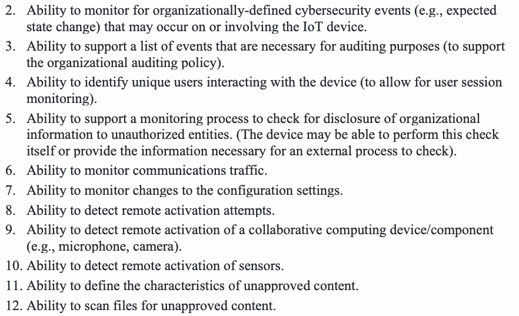
2.IoTデバイス上またはIoTデバイスに関して発生し得る、組織定義のサイバーセキュリティイベント（想定される状態変化など）を監視できること。
3.Ability to support a list of events that are necessary for auditing purposes (to support the organizational auditing policy).
3.（組織の監査ポリシーを支援するため）監査目的で必要なイベントの一覧をサポートできること。
4.Ability to identify unique users interacting with the device (to allow for user session monitoring).
4.（ユーザーセッションの監視を可能にするため）デバイスとやり取りする一意のユーザーを識別できること。
5.Ability to support a monitoring process to check for disclosure of organizational information to unauthorized entities. (The device may be able to perform this check itself or provide the information necessary for an external process to check).
5.組織の情報が許可されていない主体に開示されていないかを確認する監視プロセスをサポートできること。（デバイス自体がこの確認を実施できる場合もあれば、外部プロセスが確認するために必要な情報を提供できる場合もある。）
6.Ability to monitor communications traffic.
6.通信トラフィックを監視できること。
7.Ability to monitor changes to the configuration settings.
7.構成設定の変更を監視できること。
8.Ability to detect remote activation attempts.
8.リモートからの有効化の試行を検知できること。
9.Ability to detect remote activation of a collaborative computing device/component (e.g., microphone, camera).
9.協調コンピューティングデバイス／構成要素（マイク、カメラなど）のリモートからの有効化を検知できること。
10.Ability to detect remote activation of sensors.
10.センサーのリモートからの有効化を検知できること。
11.Ability to define the characteristics of unapproved content.
11.未承認コンテンツの特性を定義できること。
12.Ability to scan files for unapproved content.
12.未承認コンテンツがないかファイルをスキャンできること。
(EVR) Event Response
（EVR）イベント対応
Description: Ability for the device to respond to organizationally-defined cybersecurity events in an organizationally-defined way.
原本PDFの抜粋画像
説明：組織定義のサイバーセキュリティイベントに対し、組織が定めた方法でデバイスが対応する機能。
Discussion: Further action after detection of a cybersecurity event may be necessary as part of an organization’s event monitoring controls. IoT devices may have to conform with these requirements and contain features or functions that help it respond to cybersecurity events as the organization needs.
考察：組織のイベント監視管理策の一環として、サイバーセキュリティイベントの検知後に追加の対応が必要となる場合がある。IoTデバイスはこうした要件に適合し、組織のニーズに応じてサイバーセキュリティイベントへ対応する機能を備える必要がある場合がある。
Related SP 800-53 Rev. 5 Controls: AU-5, AU-6, CP-13, IR-4, RA-7, SC-15, SC-42, SI-4
関連するSP 800-53 Rev.5管理策：AU-5、AU-6、CP-13、IR-4、RA-7、SC-15、SC-42、SI-4
Requirements that may be necessary:
必要となる可能性のある要件：
1.特定のイベントに対するアラートを生成できること。
2.Ability to respond to alerts according to predefined responses.
2.あらかじめ定義された対応に従って、アラートに対応できること。
3.Ability to alert connected information systems of potential issues found during the auditing process.
3.監査プロセス中に見つかった潜在的な問題を、接続された情報システムにアラートとして通知できること。
4.Ability to provide information to an external process that will issue auditing process alerts.
4.監査プロセスのアラートを発行する外部プロセスに、情報を提供できること。
5.Ability to notify users of activation of a collaborative computing device.
5.協調コンピューティングデバイスが有効化されたことをユーザーに通知できること。
6.Ability to provide a physical indicator of sensor use.
6.センサーの使用を示す物理的なインジケーターを提供できること。
7.Ability to respond following an auditing failure (either by the device or an external auditing process).
7.（デバイスまたは外部の監査プロセスのいずれかによる）監査の失敗後に対応できること。
8.Ability to prevent download of unapproved content.
8.未承認コンテンツのダウンロードを防止できること。
9.未承認コンテンツを削除できること。
10.Ability to support alternative security mechanisms when primary mechanisms (e.g., login protocol, encryption, etc.) are compromised.
10.主要な機構（ログインプロトコル、暗号化など）が危殆化した場合に、代替のセキュリティ機構をサポートできること。
11.Ability to configure organizationally-defined aspects of the event response.
11.イベント対応のうち組織定義の側面を設定できること。
(LCT) Logging Capture & Trigger Support
（LCT）ログ取得およびトリガーのサポート
Description: Ability for the device, or an interfaced system, to generate, store, retain, delete, and report on specific device audit events, to run specific audit checks, and report findings in a variety of ways.
原本PDFの抜粋画像
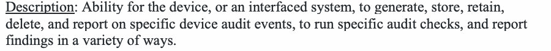
説明：デバイスまたは接続されたシステムが、特定のデバイス監査イベントを生成、保存、保持、削除、報告し、特定の監査チェックを実行して、さまざまな方法で検出結果を報告する機能。
Discussion: Logs and audit of those logs may be important to how an organization implements and verifies security controls. IoT devices may have to support specific logging and audit practices as required by the organization.
考察：組織がセキュリティ管理策を実装し、検証する方法において、ログとそのログの監査が重要となる場合がある。IoTデバイスは、組織が求める特定のログ記録および監査の実践を支援しなければならない場合がある。
Related SP 800-53 Rev. 5 Controls: AU-2, AU-3
関連するSP 800-53 Rev.5管理策：AU-2、AU-3
Requirements that may be necessary:
必要となる可能性のある要件：
1.デバイスが、定義されたイベントについて監査ログを生成できること
a.Ability to identify and capture organizationally-defined events using a persistent method.
a.永続的な方法で、組織定義のイベントを識別し取得できること。
b.Ability to capture information from organizationally-defined cybersecurity events (e.g., cybersecurity state, time) through organizationally-defined means (e.g., logs).
b.組織定義の手段（ログなど）により、組織定義のサイバーセキュリティイベントから情報（サイバーセキュリティ状態、時刻など）を取得できること。
c.Ability to create audit logs within the device for organizationally-defined and auditable events (e.g. account creation, modification, enabling, disabling, removal actions and notifications).
c.組織定義の監査可能なイベント（アカウントの作成、変更、有効化、無効化、削除の操作と通知など）について、デバイス内に監査ログを作成できること。
(RDL) Support of Required Data Logging
（RDL）必須データロギングのサポート
Description: Ability for the device to capture required information in audit logs.
説明：デバイスが必要な情報を監査ログに記録できる機能。
Discussion: The IoT device may have to capture and log certain data required by the organization. The kind of data captured and how it should be stored will be related to aspects of how the device functions, how the organization uses the device, how the organization handles data logging, among other considerations.
考察：組織が必要とする特定のデータをIoTデバイスが取得し、ログに記録しなければならない場合がある。取得するデータの種類や保存方法は、デバイスの動作方法、組織によるデバイスの利用方法、組織のデータロギング方法などの側面に関係する。
Related SP 800-53 Rev. 5 Controls: AU-2, AU-3, AU-4, AU-5(1), AU-5(5), AU-11
関連するSP 800-53 Rev.5管理策：AU-2、AU-3、AU-4、AU-5(1)、AU-5(5)、AU-11
Requirements that may be necessary:
必要となる可能性のある要件：
1.Ability to track users interacting with the device, the time they interacted with the device, the time the user logged out of the device, and to list this information in an audit log.
原本PDFの抜粋画像
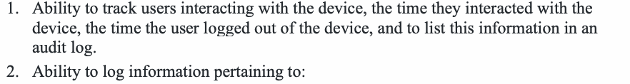
1.デバイスとやり取りしたユーザー、やり取りした時刻、ユーザーがデバイスからログアウトした時刻を追跡し、この情報を監査ログに一覧化できること。
2.Ability to log information pertaining to:
2.次に関する情報を記録できること。
a.発生したイベントの種類。
b.The time that the event occurred.
b.イベントが発生した時刻。
c.Where the event occurred.
c.イベントが発生した場所。
d.The source of the event.
d.イベントの発生源。
e.The outcome of the event.
e.イベントの結果。
f.Identity of users/processes associated with the event.
f.イベントに関連するユーザー／プロセスの識別情報。
3.次のような構成操作の監査をサポートできること。
a.Current configuration state.
a.現在の構成状態。
b.History of configuration changes.
b.構成変更の履歴。
c.When changes in configuration occurred.
c.構成の変更が発生した時刻。
d.Which account made the configuration change.
d.構成の変更を行ったアカウント。
4.Ability to provide information as to why the device captured a particular event or set of events.
原本PDFの抜粋画像
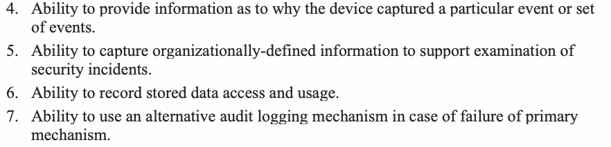
4.デバイスが特定のイベントまたはイベント群を取得した理由に関する情報を提供できること。
5.Ability to capture organizationally-defined information to support examination of security incidents.
5.セキュリティインシデントの調査を支援するため、組織定義の情報を取得できること。
6.Ability to record stored data access and usage.
6.保存データへのアクセスと使用を記録できること。
7.Ability to use an alternative audit logging mechanism in case of failure of primary mechanism.
7.主要な機構に障害が発生した場合に、代替の監査ログ機構を使用できること。
(LSR) Audit Log Storage & Retention
（LSR）監査ログの保存と保持
Description: Ability to maintain audit logs in accordance with organizational policy.
説明：組織ポリシーに従って監査ログを維持する機能。
Discussion: Once captured, there may be additional requirements from the organization dictating the retention and maintenance of the logs for some amount of time after they are created.
考察：ログを取得した後、作成から一定期間にわたるログの保持と維持を組織が求める場合がある。
Related SP 800-53 Rev. 5 Controls: AU-4, AU-5(1), AU-11
関連するSP 800-53 Rev.5管理策：AU-4、AU-5(1)、AU-11
Requirements that may be necessary:
必要となる可能性のある要件：
1.Ability to comply with organizational policy for storing persistent audit logs up to a predefined size.
原本PDFの抜粋画像
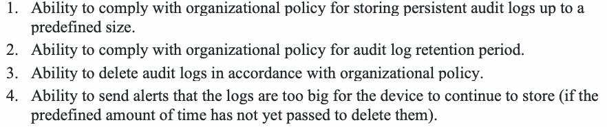
1.あらかじめ定義されたサイズまでの永続的な監査ログを保存するための、組織のポリシーに準拠できること。
2.Ability to comply with organizational policy for audit log retention period.
2.監査ログの保持期間に関する組織のポリシーに準拠できること。
3.Ability to delete audit logs in accordance with organizational policy.
3.組織のポリシーに従って監査ログを削除できること。
4.Ability to send alerts that the logs are too big for the device to continue to store (if the predefined amount of time has not yet passed to delete them).
4.（あらかじめ定義された削除までの期間がまだ経過していない場合に）ログが大きすぎてデバイスが保存を継続できないことを知らせるアラートを送信できること。
(SRT) Support for Reliable Time
（SRT）信頼できる時刻のサポート
Description: Ability to use timestamps to record the time an auditing event occurred.
説明：タイムスタンプを使って監査イベントの発生時刻を記録する機能。
Discussion: When logging with time-based information (e.g., a timestamp), having reliable timekeeping is critical to allowing for effective use of the logs when audited. Use of common timekeeping mechanisms (e.g., network time) will suffice for some IoT devices, but other deployments and use cases may require alternative methods to provide reliable time.
考察：時刻情報（タイムスタンプなど）を用いてログを記録する場合、監査時にログを効果的に利用できるようにするには、信頼できる時刻管理が極めて重要である。一部のIoTデバイスでは一般的な時刻管理メカニズム（ネットワーク時刻など）の利用で足りるが、他の展開環境やユースケースでは、信頼できる時刻を提供する代替方法が必要となる場合がある。
Related SP 800-53 Rev. 5 Controls: AU-2, AU-8, SC-45(1)
関連するSP 800-53 Rev.5管理策：AU-2、AU-8、SC-45(1)
Requirements that may be necessary:
必要となる可能性のある要件：
1.Ability to support organizationally-defined granularity in device timing measurements.
原本PDFの抜粋画像
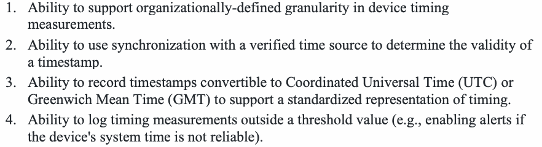
1.デバイスの時間計測について、組織定義の粒度をサポートできること。
2.Ability to use synchronization with a verified time source to determine the validity of a timestamp.
2.検証済みの時刻源との同期を用いて、タイムスタンプの有効性を判断できること。
3.Ability to record timestamps convertible to Coordinated Universal Time (UTC) or Greenwich Mean Time (GMT) to support a standardized representation of timing.
3.時間の標準的な表現をサポートするため、協定世界時（UTC）またはグリニッジ標準時（GMT）に変換可能なタイムスタンプを記録できること。
4.Ability to log timing measurements outside a threshold value (e.g., enabling alerts if the device's system time is not reliable).
4.しきい値を外れた時間計測値を記録できること（たとえば、デバイスのシステム時刻が信頼できない場合にアラートを有効にする）。
(AUP) Audit Support & Protection
（AUP）監査のサポートと保護
Description: Ability for the device to support and protect audit activities and associated data.
原本PDFの抜粋画像
説明：デバイスが監査活動と関連データを支援・保護する機能。
Discussion: Organizations will need to use logged information as part of audits to implement security controls and comply with requirements. IoT devices may have to support through features and functions some aspects of that audit process, such as providing access to or transmitting logs when needed by the organization.
考察：組織は、セキュリティ管理策の実装や要件への準拠に向けた監査の一環として、ログに記録された情報を利用する必要がある。組織が必要とするときにログへのアクセスを提供したり、ログを送信したりするなど、監査プロセスの一部をIoTデバイスが機能によって支援しなければならない場合がある。
Related SP 800-53 Rev. 5 Controls: AU-5(5), AU-6, AU-7, AU-9, SI-4
関連するSP 800-53 Rev.5管理策：AU-5(5)、AU-6、AU-7、AU-9、SI-4
Requirements that may be necessary:
必要となる可能性のある要件：
1.自身のサイバーセキュリティ状態を報告できること。
2.Ability to support a self-audit generation process.
2.自己監査の生成プロセスをサポートできること。
3.Ability to run audit scans (automated or otherwise) to provide specific information (e.g., such as that requested for an external process to audit the device).
3.（外部プロセスがデバイスを監査するために要求する情報など）特定の情報を提供するため、（自動またはそれ以外の）監査スキャンを実行できること。
4.Ability to send requested audit logs to an external audit process or information system (e.g., where its auditing information can be checked to allow for review, analysis, and reporting).
4.要求された監査ログを、外部の監査プロセスまたは情報システムに送信できること（たとえば、その監査情報を確認してレビュー、分析、報告を行えるようにする）。
5.Ability to support an alternate auditing process in the event that the primary auditing process fails.
5.主要な監査プロセスが失敗した場合に、代替の監査プロセスをサポートできること。
6.Ability to protect the audit information through the use of:
6.次の手段を用いて監査情報を保護できること。
a.Encryption.
a.暗号化。
b.Digitally signing audit files.
b.監査ファイルへのデジタル署名。
c.Securely sending audit files to another device.
c.監査ファイルの他のデバイスへの安全な送信。
d.Other protections created by the device manufacturer.
d.デバイス製造者が設けるその他の保護。
7.Ability to prevent any entities from editing audit logs unless the entity is authorized and is responsible for maintaining the audit logs.
原本PDFの抜粋画像
7.許可されており、かつ監査ログの維持に責任を負う主体を除き、いかなる主体も監査ログを編集できないようにすること。
(AWR) State Awareness Support
（AWR）状態認識のサポート
Description: Ability to differentiate between when a device will likely operate as expected from when it may be in a degraded cybersecurity state.
原本PDFの抜粋画像
説明：デバイスが想定どおりに動作する可能性が高い状態と、サイバーセキュリティ状態が低下している可能性がある状態とを区別する能力。
Discussion: Fundamentally, the goal of cybersecurity state awareness is to make an organization able to know when a device will operate as expected and when it will not. For some IoT devices and use cases, logging may not be the most effective or only way this is achieved, and other features and functions may be needed by organizations to effectively monitor cybersecurity state on the IoT device and across the system. In other cases, IoT devices may have to self-assess their state to a limited extent to help ensure secure execution.
考察：サイバーセキュリティ状態の認識は、デバイスが想定どおりに動作するときと、そうでないときを組織が把握できるようにすることを基本的な目的とする。一部のIoTデバイスやユースケースでは、ログ記録が最も効果的な方法とは限らず、唯一の方法でもない。デバイス上およびシステム全体のサイバーセキュリティ状態を組織が効果的に監視するため、他の機能が必要となる場合がある。また、セキュアな実行を支援するため、IoTデバイスが限定的に自らの状態を評価しなければならない場合もある。
Related SP 800-53 Rev. 5 Controls: SA-8(21), SI-6
関連するSP 800-53 Rev.5管理策：SA-8(21)、SI-6
DS - DEVICE SECURITY
DS — デバイスセキュリティ
Description: The capability to secure the IoT device to meet organizational requirements.
説明：組織の要件を満たすため、IoTデバイスをセキュアにする機能。
Discussion: Some device cybersecurity requirements may dictate aspects of the IoT device’s operation that do not fit cleanly into the other six device cybersecurity capabilities, but are nonetheless technical features or functions implemented in the device’s hardware and software. This device security capability helps place those kinds of requirements in a broad context of device cybersecurity requirements. Many of the sub-capabilities in this capability support several other device cybersecurity capabilities by providing additional confidence in the implementation or execution of the other capabilities.
考察：デバイスのサイバーセキュリティ要件の中には、IoTデバイスの動作の側面を規定するものがあり、それらは他の6つのデバイスサイバーセキュリティ機能には明確に当てはまらないが、それでもなおデバイスのハードウェアおよびソフトウェアに実装される技術的な特性または機能である。このデバイスセキュリティ機能は、そうした要件を、デバイスのサイバーセキュリティ要件という広い文脈に位置づける助けとなる。この機能に含まれる多くのサブ機能は、他の機能の実装や実行に対する確信を高めることで、他の複数のデバイスサイバーセキュリティ機能を支援する。
Sub-Capabilities that may be necessary:
必要となる可能性のあるサブ機能：
(EXE) Secure Execution
（EXE）セキュアな実行
Description: Ability to protect the execution of code on the device.
説明：デバイス上でのコードの実行を保護できる機能。
Discussion: Some IoT devices may need additional assurances of the secure execution of code to ensure confidentiality, integrity, and availability of the IoT device, its functionality, and its data. Many factors, such as the criticality and use case of the IoT device may impact the need and elements of this sub-capability.
考察：IoTデバイス、その機能、データの機密性、完全性、可用性を確保するため、コードのセキュアな実行に関する追加の確証を必要とするIoTデバイスがある。IoTデバイスの重要度やユースケースなど、多くの要因がこのサブ機能の必要性と要素に影響する。
Related SP 800-53 Rev. 5 Controls: SC-2, SC-39
関連するSP 800-53 Rev.5管理策：SC-2、SC-39
Requirements that may be necessary:
必要となる可能性のある要件：
1.Ability to enforce organizationally-defined execution policies.
原本PDFの抜粋画像
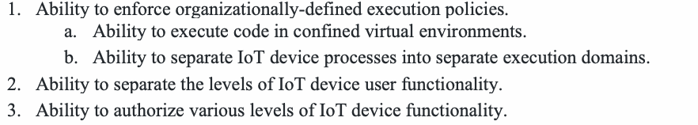
1.組織定義の実行ポリシーを強制できること。
a.Ability to execute code in confined virtual environments.
a.閉じた仮想環境内でコードを実行できること。
b.Ability to separate IoT device processes into separate execution domains.
b.IoTデバイスのプロセスを別々の実行ドメインに分離できること。
2.Ability to separate the levels of IoT device user functionality.
2.IoTデバイスのユーザー機能のレベルを分離できること。
3.Ability to authorize various levels of IoT device functionality.
3.IoTデバイスの機能のさまざまなレベルを認可できること。
(COM) Secure Communication
（COM）セキュアな通信
Description: Ability to securely initiate and terminate communications with other devices.
説明：他のデバイスとの通信を安全に開始・終了できる機能。
Discussion: Proper use of communications channels by IoT devices can help reduce the introduction and exploit of vulnerabilities, but also ensures availability of the IoT device to the organization and system as part of operations. Federal organizations may need to detail how they expect IoT devices to establish and terminate network connections.
考察：IoTデバイスが通信チャネルを適切に使用すると、脆弱性の混入や悪用を減らすとともに、運用の一環として組織やシステムに対するIoTデバイスの可用性を確保できる。連邦機関は、IoTデバイスがネットワーク接続をどのように確立し、終了するかを詳しく定める必要がある場合がある。
Related SP 800-53 Rev. 5 Controls: SC-7, SC-7(17), SC-8, SC-10, SC-11, SC-16(2), SC-21, SC-23, SC-51, SI-10(6), SI-14(3)
関連するSP 800-53 Rev.5管理策：SC-7, SC-7(17), SC-8, SC-10, SC-11, SC-16(2), SC-21, SC-23, SC-51, SI-10(6), SI-14(3)
Requirements that may be necessary:
必要となる可能性のある要件：
1.トラフィックフローのポリシーを強制できること。
2.Ability to utilize standardized protocols.
2.標準化されたプロトコルを利用できること。
3.Ability to establish network connections.
3.ネットワーク接続を確立できること。
4.Ability to terminate network connections (e.g., automatically based on organizationally-defined parameters).
4.ネットワーク接続を終了できること（たとえば、組織定義のパラメーターに基づいて自動的に）。
5.Ability to de-allocate Transmission Control Protocol/Internet Protocol (TCP/IP) address/port pairings.
5.Transmission Control Protocol/Internet Protocol（TCP/IP）のアドレスとポートの組の割り当てを解除できること。
6.Ability to establish communications channels.
6.通信チャネルを確立できること。
7.Ability to secure the communications channels.
7.通信チャネルを保護できること。
8.Ability to interface with Domain Name System/Domain Name System Security Extensions (DNS/DNSSEC).
8.DNS/DNSSEC（Domain Name System/Domain Name System Security Extensions）とインターフェースできること。
9.Ability to store and process session identifiers.
9.セッション識別子を保存し処理できること。
10.Ability to identify and track sessions with identifiers.
10.識別子を用いてセッションを識別し追跡できること。
11.Ability to use an anti-spoofing mechanism to prevent adversaries from falsifying security attributes.
11.攻撃者によるセキュリティ属性の偽造を防ぐため、なりすまし防止機構を使用できること。
12.Ability to prevent untrusted data injections.
12.信頼できないデータの注入を防止できること。
(RSC) Secure Resource Usage
（RSC）リソースのセキュアな使用
Description: Ability to securely utilize system resources and memory.
説明：システムリソースとメモリを安全に利用できる機能。
Discussion: Vulnerabilities can arise from many places, including misuse of legitimate device resources and components. Safeguards on computing resources and memory can help reduce these kinds of vulnerabilities and may be needed by federal organizations as part of security controls.
考察：正規のデバイスリソースやコンポーネントの誤用など、さまざまな要因から脆弱性が生じる可能性がある。コンピューティングリソースとメモリーに保護策を講じることで、この種の脆弱性を減らすことができ、連邦機関はセキュリティ管理策の一環としてこうした保護策を必要とする場合がある。
Related SP 800-53 Rev. 5 Controls: CP-12, SC-4, SC-5, SC-24, SC-34, SC-39, SC-51, SI-17
関連するSP 800-53 Rev.5管理策：CP-12、SC-4、SC-5、SC-24、SC-34、SC-39、SC-51、SI-17
Requirements that may be necessary:
必要となる可能性のある要件：
1.共有システム資源をサポートできること。
a.Ability to release resources back to the system.
a.資源をシステムに解放して戻せること。
b.Ability to separate user and process resources use.
b.ユーザーとプロセスの資源使用を分離できること。
2.Ability to manage memory address space assigned to processes.
2.プロセスに割り当てられたメモリアドレス空間を管理できること。
3.Ability to enforce access to memory space through the kernel.
3.カーネルを通じてメモリ空間へのアクセス制御を実施できること。
4.Ability to prevent a process from accessing memory space of another process.
4.プロセスが別のプロセスのメモリ空間にアクセスすることを防止できること。
5.Ability to enforce configured disk quotas.
5.設定されたディスククォータを適用できること。
6.Ability to continue operation when associated networks are unavailable (e.g., a smart smoke detector must still go off when a fire occurs even if it is not attached to the associated network).
6.関連するネットワークが利用できない場合でも動作を継続できること（たとえば、スマート煙感知器は、関連するネットワークに接続されていなくても、火災の発生時には警報を鳴らさなければならない）。
7.Ability to provide sufficient resources to store and run the operating environment (e.g., operating systems, firmware, applications).
原本PDFの抜粋画像
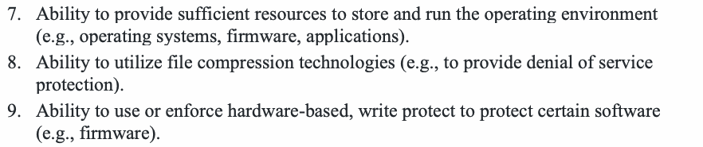
7.動作環境（オペレーティングシステム、ファームウェア、アプリケーションなど）を保存し実行するために十分な資源を提供できること。
8.Ability to utilize file compression technologies (e.g., to provide denial of service protection).
8.ファイル圧縮技術を利用できること（たとえば、サービス拒否からの保護を提供するため）。
9.Ability to use or enforce hardware-based, write protect to protect certain software (e.g., firmware).
9.特定のソフトウェア（ファームウェアなど）を保護するため、ハードウェアベースの書き込み保護を使用または強制できること。
(DIN) Device Integrity
（DIN）デバイス完全性
Description: Ability to protect against unauthorized changes to hardware and software.
説明：ハードウェアおよびソフトウェアに対する許可されていない変更から保護できる機能。
Discussion: Ensuring the continued integrity of the IoT device’s hardware and software components can help avoid introduction or exploit of vulnerabilities. Federal organizations may vary in the device integrity requirements, and those requirements may further vary based on aspects of how the IoT device is used by the organizations (e.g., criticality of the device, risk associated with its use).
考察：IoTデバイスのハードウェアおよびソフトウェアコンポーネントの完全性を継続的に確保することは、脆弱性の混入や悪用を防ぐのに役立つ。連邦機関が求めるデバイス完全性要件は機関ごとに異なる場合があり、その要件は、組織によるIoTデバイスの使用方法（デバイスの重要度、使用に伴うリスクなど）によってもさらに異なる場合がある。
Related SP 800-53 Rev. 5 Controls: CA-9(1), CM-8(3), SC-34, SR-9, SR-9(1)
関連するSP 800-53 Rev.5管理策：CA-9(1)、CM-8(3)、SC-34、SR-9、SR-9(1)
Requirements that may be necessary:
必要となる可能性のある要件：
1.Ability to perform security compliance checks on system components (e.g., verify acceptable baseline configuration, perform a tamper check).
原本PDFの抜粋画像
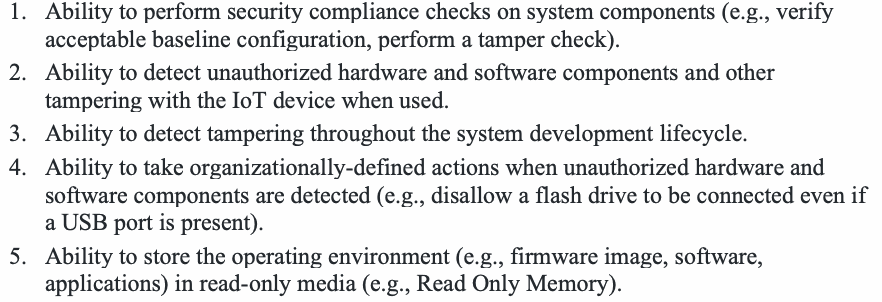
1.システム構成要素に対してセキュリティ準拠性チェック（許容されるベースライン構成の検証、改ざんチェックの実施など）を実行できること。
2.Ability to detect unauthorized hardware and software components and other tampering with the IoT device when used.
2.IoTデバイスの使用時に、許可されていないハードウェアおよびソフトウェア構成要素やその他の改ざんを検知できること。
3.Ability to detect tampering throughout the system development lifecycle.
3.システム開発ライフサイクル全体にわたって改ざんを検知できること。
4.Ability to take organizationally-defined actions when unauthorized hardware and software components are detected (e.g., disallow a flash drive to be connected even if a USB port is present).
4.許可されていないハードウェアおよびソフトウェア構成要素を検知した場合に、組織定義の措置を講じられること（たとえば、USBポートがあってもフラッシュドライブの接続を許可しない）。
5.Ability to store the operating environment (e.g., firmware image, software, applications) in read-only media (e.g., Read Only Memory).
5.動作環境（ファームウェアイメージ、ソフトウェア、アプリケーションなど）を、読み取り専用媒体（ROMなど）に保存できること。
(ONB) Secure Network Onboarding Support
（ONB）セキュアなネットワークオンボーディングのサポート
Description: Ability to use secure network onboarding technologies to connect to the network.
説明：セキュアなネットワークオンボーディング技術を使用してネットワークに接続する機能。
Discussion: Organizations may use secure onboarding technologies on the network that facilitates communication for the system the IoT device is connecting to. This sub-capability identifies the necessary features and functions from the IoT device to support secure network onboarding.
考察：組織は、IoTデバイスが接続するシステムのための通信を仲介するネットワーク上で、セキュアオンボーディング技術を使用する場合がある。このサブ機能は、セキュアなネットワークオンボーディングを支援するためにIoTデバイスに必要な特徴と機能を特定する。
Related SP 800-53 Rev. 5 Controls: IA-5, SC-7, SC-16
関連するSP 800-53 Rev.5管理策：IA-5、SC-7、SC-16
Requirements that may be necessary:
必要となる可能性のある要件：
1.Ability for the IoT device to provide necessary data and/or perform necessary functions participate in the device-to-network authentication.
1.IoTデバイスが、デバイスとネットワーク間の認証に必要なデータを提供し、および／または必要な機能を実行できること。
2.Ability to identify and recognize the network.
2.ネットワークを識別し認識できること。
3.Ability to receive, store, and/or use secure network credentials.
3.セキュアなネットワーク資格情報を受信、保存、および／または使用できること。
4.Ability to restrict communications to only authorized entities, as enforced through the onboarded network.
4.オンボーディングされたネットワークによる強制に従い、許可された主体にだけ通信を制限できること。
(OPS) Secure Device Operation
（OPS）デバイスのセキュアな運用
Description: Ability to operate securely and safely.
説明：安全かつ確実に動作できる機能。
Discussion: Federal organizations may need various internal safe-guards on the IoT device to support secure use on their system and within their organization. This sub-capability may also be necessary to increase efficacy or resiliency of existing capabilities or controls.
考察：連邦機関は、自らのシステム上および組織内でIoTデバイスを安全に使用できるよう、デバイス内にさまざまな保護策を必要とする場合がある。このサブ機能は、既存の機能や管理策の有効性またはレジリエンスを高めるうえでも必要となる場合がある。
Related SP 800-53 Rev. 5 Controls: CM-2(7), CM-7, CP-10, CP-12, IR-4(5), PE-10, PE-12, PE-13, PE-14, PE-15, SC-24, SC-45, SC-45(1), SI-6
関連するSP 800-53 Rev.5管理策：CM-2(7), CM-7, CP-10, CP-12, IR-4(5), PE-10, PE-12, PE-13, PE-14, PE-15, SC-24, SC-45, SC-45(1), SI-6
Requirements that may be necessary:
必要となる可能性のある要件：
1.正確な内部システム時刻を維持できること。
2.Ability to compare and synchronize internal system time with an organizationally-defined authoritative source.
2.内部システム時刻を組織定義の信頼できる時刻源と比較し、同期できること。
3.Ability to define various operational states.
3.さまざまな運用状態を定義できること。
4.Ability to support various modes of IoT device operation with more restrictive operational states.
4.より制限的な運用状態で、IoTデバイスのさまざまな動作モードをサポートできること。
a."travel mode" for transit.
a.移動時の「トラベルモード」。
b."safe mode" for operation when some or all network security is unavailable.
b.ネットワークセキュリティの一部またはすべてが利用できない場合に動作するための「セーフモード」。
c.Others as determined necessary based on the purpose and goals for the IoT device.
c.IoTデバイスの目的と目標に基づいて必要と判断されるその他のもの。
5.Ability to define differing failure types.
5.異なる障害の種類を定義できること。
6.Ability to fail in a secure state.
6.安全な状態で障害に至ることができること（フェイルセキュア）。
7.Ability to disable operations and/or functionality in the event of security violations.
7.セキュリティ違反が発生した場合に、動作および／または機能を無効化できること。
8.Ability to restrict components/features of the IoT device (e.g., ports, functions, protocols, services, etc.) in accordance with organizationally-defined policies.
8.組織定義のポリシーに従って、IoTデバイスの構成要素／機能（ポート、機能、プロトコル、サービスなど）を制限できること。
9.Ability to sense the environment and securely (i.e., preserving confidentiality, integrity, and availability of the device and its data) interface with the environment, either directly or through the IoT system. Examples include:
9.環境を感知し、直接またはIoTシステムを通じて、環境と安全に（すなわち、デバイスとそのデータの機密性、完全性および可用性を維持しつつ）インターフェースできること。例には次がある。
a.Emergency shutoff mechanism
a.緊急遮断機構
b.Emergency lighting mechanism
b.非常用照明機構
c.Fire protection mechanism
c.火災防護機構
d.Temperature and humidity mechanism
d.温度・湿度機構
e.浸水被害の防護機構
f.Manufacturer defined capability
f.製造者定義の機能
3 Non-Technical Supporting Capability Catalog
3 非技術的支援機能カタログ
Non-technical supporting capabilities are defined as actions an organization (i.e., manufacturers and supporting entities) performs in support of the cybersecurity of an IoT device [800-213]. Organizations integrating IoT devices into their systems may need information or other kinds of support from other organizations, such as the IoT device manufacturer or other supporting entity to implement and ensure compliance with security controls. This section identifies non-technical supporting capabilities and sub-capabilities organizations should consider when establishing IoT device cybersecurity requirements. The non-technical supporting capabilities identified are:
非技術的支援機能とは、IoTデバイスのサイバーセキュリティを支援するために組織（すなわち製造者や支援主体）が実施する活動と定義される[800-213]。IoTデバイスをシステムに統合する組織は、セキュリティ管理策を実装し、その準拠を確保するために、IoTデバイス製造者やその他の支援主体など、他の組織から情報その他の支援を必要とする場合がある。本節では、IoTデバイスのサイバーセキュリティ要件を策定する際に組織が検討すべき非技術的支援機能とサブ機能を示す。特定された非技術的支援機能は次のとおりである。
•Documentation
•文書化
•Information and Query Reception
•情報および問い合わせの受信
•Information Dissemination
•情報配信
•Education and Awareness
•教育および意識向上
DO - DOCUMENTATION
DO — 文書化
Description: The ability for the manufacturer and/or the manufacturer's supporting entity, to create, gather, disseminate, and store information relevant to cybersecurity of the IoT device prior to customer purchase, and throughout the development of a device and its subsequent lifecycle.
説明：IoTデバイスの製造者および／または製造者の支援主体が、顧客の購入前からデバイスの開発期間を通じ、その後のライフサイクル全体にわたり、デバイスのサイバーセキュリティに関係する情報を作成、収集、配布、保存する機能。
Discussion: Documentation of cybersecurity information helps potential IoT device customers to make informed purchase decisions that support their organization's cybersecurity requirements for IoT devices and/or systems where they are used. Documentation of important cybersecurity information also then helps enable secure use of the IoT device by customers after the purchase since it serves as the source of information for customers. Documentation is also important to support legal requirements (regulatory, contractual, web site security and privacy policies, etc.), for audits or other certifications that some customers may require for the IoT devices they use, and/or to support due diligence activities. Documentation about maintenance requirements, especially regarding the supporting entities contracted by the manufacturer to perform maintenance, device changes, and other activities, also supports the customer's need to adequately plan for maintenance activities.
考察：サイバーセキュリティ情報の文書化は、潜在的なIoTデバイス顧客が、IoTデバイスやそれを使用するシステムに関する組織のサイバーセキュリティ要件を支援する購入判断を行うのに役立つ。また、重要なサイバーセキュリティ情報を文書化すると、顧客にとっての情報源となるため、購入後の顧客によるIoTデバイスのセキュアな使用を可能にする一助となる。文書化は、法的要件（規制、契約、Webサイトのセキュリティ・プライバシーポリシーなど）への対応、一部の顧客が使用するIoTデバイスについて求める監査やその他の認証、および／またはデューデリジェンス活動の支援にも重要である。保守要件に関する文書化、特に保守、デバイス変更その他の活動を行うため製造者が契約した支援主体に関する文書化は、顧客が保守活動を適切に計画する必要性を満たすうえでも役立つ。
Sub-Capabilities that may be necessary:
必要となる可能性のあるサブ機能：
(SMP) Assumptions Made in Product Development
（SMP）製品開発時に置かれた前提
Description: Document assumptions made during the development process and other expectations related to the IoT device.
説明：開発プロセスで置かれた前提と、IoTデバイスに関するその他の期待事項を文書化する。
Discussion: This documentation will provide important information to customers describing the additional actions that may be needed based upon the assumptions and expectations the manufacturer has for their customers.
考察：この文書は、製造者が顧客に対して置く前提や期待に基づいて追加で必要となる可能性のある対応を、顧客に説明する重要な情報を提供する。
Related SP 800-53 Rev. 5 Controls: AC-1, AC-3, AC-3(7), AC-14, AT-3, AU-1, AU-9, IA-1, IA-2(1), MA-1, PE-3, PE-6, PM-3, PM-20, PL-1, PS-6, PT-4(1), PT-5, SI-1, SI-4, SI-7, SI-12, SI-21, SR-3, SR-5
関連するSP 800-53 Rev.5管理策：AC-1, AC-3, AC-3(7), AC-14, AT-3, AU-1, AU-9, IA-1, IA-2(1), MA-1, PE-3, PE-6, PM-3, PM-20, PL-1, PS-6, PT-4(1), PT-5, SI-1, SI-4, SI-7, SI-12, SI-21, SR-3, SR-5
Requirements that may be necessary:
必要となる可能性のある要件：
1.Establish communications describing the IoT device security, authorization, and supporting maintenance requirements. To support these needs, manufacturers are encouraged to include details and actions such as:
1.IoTデバイスのセキュリティ、認可、およびそれを支える保守の要件を説明する情報伝達を確立する。これらのニーズを支援するため、製造者には次のような詳細や措置を含めることが推奨される：
a.Providing details for the device security capabilities, along with how to implement the security management and operational controls, and supporting maintenance activities, for the IoT device.
a.IoTデバイスのセキュリティ機能の詳細、ならびにIoTデバイスに対するセキュリティ管理および運用管理策の実装方法と、それを支える保守活動の詳細を提供する。
b.Providing details about the types of, and situations that trigger, local and/or remote maintenance activities required once the device is purchased and deployed in the organization's digital ecosystem.
b.デバイスの購入後、組織のデジタルエコシステムに展開された後に必要となる、ローカルまたはリモート（もしくはその両方）の保守活動の種類と、それを引き起こす状況の詳細を提供する。
c.Describing the ability to establish management roles to perform specified information security activities, and to establish security requirements, for the IoT device.
c.IoTデバイスについて、指定された情報セキュリティ活動を実施する管理上の役割を確立し、セキュリティ要件を確立できることを説明する。
d.Establishing and providing communications that describe the suggested types of resources necessary to protect the associated information system(s) within which the IoT device will be deployed.
d.IoTデバイスを展開する関連情報システムを保護するために必要なリソースの種類を説明する情報伝達を確立し、提供する。
e.Providing details about the IoT device data security and privacy capabilities and limitations, and the types of risks mitigated by the capabilities.
e.IoTデバイスのデータセキュリティとプライバシーの機能および限界、ならびにそれらの機能によって低減されるリスクの種類の詳細を提供する。
f.Providing instructions and documentation describing the physical and logical access capabilities necessary to the IoT device to perform each type of maintenance activity.
f.各種の保守活動を実施するためにIoTデバイスに必要な物理的・論理的アクセス機能を説明する指示書と文書を提供する。
g.Providing other information and actions as necessary for physically securing, and securely using, the IoT device based upon the IoT device use, purpose, and other contextual factors related to the digital ecosystem(s) within which they are intended to be used.
g.IoTデバイスの用途、目的、およびIoTデバイスの使用が想定されるデジタルエコシステムに関するその他の状況要因に基づき、IoTデバイスを物理的に保護し、安全に使用するために必要なその他の情報と措置を提供する。
2.Establish communications describing options for implementing security oversight of IoT device users connected to the network. To support these needs, include details and actions such as:
2.ネットワークに接続されたIoTデバイスのユーザーをセキュリティ上監督する方法について、選択肢を説明する情報を伝達する。このニーズに応えるため、次のような詳細や対応を含める。
a.Providing descriptions of the types of physical access practices, and manufacturer suggested hardware or other types of devices, that can be used to prevent unauthorized physical access to the IoT device based upon the determined risk level that the device brings to the IoT customer's system.
a.デバイスがIoT顧客のシステムにもたらすリスクレベルに基づき、デバイスへの許可されていない物理アクセスを防ぐために利用できる物理アクセス慣行と、製造者が推奨するハードウェアやその他の種類のデバイスについて説明する。
b.Providing descriptions of the physical access security procedures the manufacturer recommends to limit physical access to the device, and to associated device controls.
b.デバイスおよび関連するデバイス制御への物理アクセスを制限するため、製造者が推奨する物理アクセスセキュリティ手順を説明する。
c.Providing details of indications, and recommendations for how to determine, when unauthorized physical access to the IoT device was or is attempted, or is occurring.
c.IoTデバイスへの許可されていない物理アクセスが試みられた、または試みられている、あるいは実際に発生していることを判断する兆候と推奨方法の詳細を提供する。
3.Establish communications explaining how to accomplish logical organizational oversight for using the IoT device. Information that may be necessary to provide to explain how to accomplish logical oversight of the IoT device include details and actions such as:
3.IoTデバイスの使用に関する組織の論理的監督を実現する方法を説明する情報を伝達する。IoTデバイスの論理的監督を実現する方法を説明するために提供が必要となりうる情報には、次のような詳細や対応が含まれる。
a.Providing information to IoT device customers with recommendations or suggestions for implementing management and operational controls.
a.管理上・運用上の管理策を実装するための推奨事項や提案を含む情報を、IoTデバイスの顧客に提供する。
b.Providing IoT device customers the tools, assistance, instructions, and other types of information to support establishing a hierarchy of role-based privileges within the IoT device.
b.IoTデバイス内で役割ベースの権限階層を確立できるよう、ツール、支援、手順その他の種類の情報をIoTデバイスの顧客に提供する。
c.Providing recommendations to IoT device customers for using the technical IoT device security controls, or external devices or applications communicating with the IoT device, to establish a variety of oversight capabilities for the IoT device users.
c.IoTデバイスの技術的なセキュリティ管理策、またはIoTデバイスと通信する外部のデバイスやアプリケーションを用いて、IoTデバイスの利用者に対するさまざまな監督機能を確立するための推奨事項を、IoTデバイスの顧客に提供する。
4.Establish communications that describe the ways in which the IoT device can logically access devices on the FIPS-201 approved products list7. Information that may be necessary to provide include details and actions such as:
4.IoTデバイスがFIPS-201 approved products list⁷上のデバイスに論理的にアクセスできる方法を説明する情報伝達を確立する。提供が必要となる可能性のある情報には、次のような詳細や措置が含まれる：
a.Providing information and details to the IoT device customers indicating if and when the IoT device was placed on the FIPS-201 approved products list for PIV capability, as applicable to the use and purpose of the IoT device.
a.IoTデバイスが、該当する場合にはその用途と目的に応じて、PIV機能についてFIPS-201 approved products listに掲載されているかどうか、および掲載された時期を示す情報と詳細をIoTデバイスの顧客に提供する。
b.Providing documentation describing how the IoT device can technically support PIV card implementation, accessibility and interfaces.
b.IoTデバイスがPIVカードの実装、アクセシビリティ、インタフェースを技術的にどのようにサポートできるかを説明する文書を提供する。
c.Providing documentation with suggested ways in which customers can implement compensating controls around the IoT device if the IoT device cannot support PIV cards.
c.IoTデバイスがPIVカードをサポートできない場合に、顧客がIoTデバイスの周辺に補完的管理策を実装するための推奨方法を記載した文書を提供する。
d.Providing documentation explaining how to configure the IoT device to technically support PIV implementation, accessibility and interfaces.
d.PIVの実装、アクセシビリティ、インタフェースを技術的にサポートするようにIoTデバイスを設定する方法を説明する文書を提供する。
e.Providing detailed instructions for how to integrate the IoT device within a PIV system.
e.IoTデバイスをPIVシステムに統合する方法の詳細な手順を提供する。
f.Providing an attestation, from an authoritative source, that the IoT device can be used in compliance with Federal agency requirements, with associated descriptions for how the agency can accomplish this, if the IoT device cannot be integrated within a PIV system.
f.IoTデバイスをPIVシステムに統合できない場合に、IoTデバイスが連邦機関の要件に適合して使用できることを示す、権威ある情報源からの証明、および機関がそれをどのように実現できるかの説明を提供する。
5.Establish communications detailing the IoT device interface and access controls capabilities. Information that may be necessary to provide include details and actions such as:
5.IoTデバイスのインターフェース機能およびアクセス制御機能を詳述する情報伝達を確立する。提供が必要となる可能性のある情報には、次のような詳細や措置が含まれる：
a.Providing details for how to implement IoT device logical and remote access controls through device interfaces for data transmission between devices and subjects, objects, systems and components within the system.
a.システム内のデバイスと、主体、客体、システム、コンポーネントとの間のデータ伝送のために、デバイスのインタフェースを通じてIoTデバイスの論理アクセス制御およびリモートアクセス制御を実装する方法の詳細を提供する。
b.Providing documentation describing all the IoT device logical and remote interface access controls.
b.IoTデバイスの論理アクセス制御およびリモートアクセス制御のすべてを説明する文書を提供する。
c.Providing detailed instructions for how to restrict access to the IoT device interface for both users of the interface, and for the data that can be transmitted through that interface, and describing if and how interface restrictions can be defined.
c.インタフェースの利用者と、そのインタフェースを通じて伝送できるデータの双方について、IoTデバイスのインタフェースへのアクセスを制限する方法の詳細な手順を提供し、インタフェースの制限を定義できるか、またどのように定義できるかを説明する。
d.Providing copies of the manufacturer's policies and practices that govern how and with whom the manufacturer shares the data obtained from the manufacturer's IoT device.
d.製造者のIoTデバイスから取得したデータを、製造者がどのように、誰と共有するかを定めた製造者のポリシーと慣行の写しを提供する。
e.Providing the details and instructions to establish management and operational controls on and/or to the IoT device.
e.IoTデバイス上または同デバイスに対する管理上・運用上の管理策を確立するための詳細と手順を提供する。
f.Providing details and descriptions about the specific types of manufacturer's needs to access the IoT device interfaces; such as for specific support, updates, ongoing maintenance, and other types of purposes.
f.製造者がIoTデバイスのインターフェースにアクセスする必要性の具体的な種類（特定のサポート、更新、継続的な保守、その他の目的のためなど）について、詳細と説明を提供する。
g.Providing documentation describing the manufacturer requirements for collecting data from the IoT device, including the specific types of data being collected.
g.収集するデータの種類を含め、IoTデバイスからデータを収集する際の製造者要件を説明する文書を提供する。
h.Providing documentation with instructions for the IoT device customer to follow for how to restrict interface connections that enable specific activities.
h.特定の活動を可能にするインターフェース接続を制限する方法について、IoTデバイスの顧客向け手順書を提供する。
i.Providing descriptions of the types of access to the IoT device the manufacturer will require on an ongoing or regular basis.
i.製造者が継続的または定期的に必要とするIoTデバイスへのアクセスの種類を説明する。
j.Providing detailed instructions for how to implement management and operational controls based on the role of the IoT device user, and not on an individual basis.
j.個人ごとではなくIoTデバイス利用者の役割に基づいて、管理上・運用上の管理策を実装する詳細な手順を提供する。
k.Providing information and detailed instructions for how to establish, change and technically enforce role-based access settings and capabilities built within the IoT device, such as admin, general user, and other types of roles.
k.IoTデバイスに組み込まれた役割ベースのアクセス設定と機能（管理者、一般ユーザーその他の役割など）を設定、変更し、技術的に強制する方法について、情報と詳細な手順を提供する。
l.Providing information and instructions describing how role-based access settings and capabilities for the IoT device can be established, changed and technically enforced using hardware, software and/or firmware that is outside of the IoT device.
l.IoTデバイスの外部にあるハードウェア、ソフトウェアおよび／またはファームウェアを使用して、IoTデバイスの役割ベースのアクセス設定と機能を設定、変更し、技術的に強制する方法について、情報と手順を提供する。
6.Establish communications describing situations where identification and authentication are not needed for the IoT device. Information that may be necessary to provide include details and actions such as:
6.IoTデバイスについて識別や認証が不要となる状況を説明する情報伝達を確立する。提供が必要となる可能性のある情報には、次のような詳細や対応が含まれる。
a.Providing detailed instructions and guidance for establishing activities performed by the IoT device that do not require identification or authentication.
a.識別や認証を必要としない、IoTデバイスが実行する活動を設定するための詳細な手順とガイダンスを提供する。
b.Providing a description of the privacy protection capabilities built within the IoT device that do not require authentication.
b.認証を必要としない、IoTデバイスに組み込まれたプライバシー保護機能を説明する。
c.Providing a description for how to access the IoT device through the logical access interface without authentication, as applicable to the purpose of the device.
c.デバイスの目的に応じて該当する場合、認証なしで論理アクセスインターフェースを通じてIoTデバイスにアクセスする方法を説明する。
7.Establish communications explaining how to provide monitoring information to authorized personnel or roles. Information that may be necessary to provide to support customer's needs to provide monitoring reports to specific roles within their organization include details and actions such as:
7.許可された要員または役割に監視情報を提供する方法を説明する情報伝達を確立する。顧客が自組織内の特定の役割に監視レポートを提供するニーズを支援するために提供が必要となる可能性のある情報には、次のような詳細や対応が含まれる。
a.Providing information that describes the types of system monitoring information generated from, or associated with, the IoT device and instructions for obtaining that information.
a.IoTデバイスから生成される、または同デバイスに関連するシステム監視情報の種類を説明する情報と、その情報を取得するための手順を提供する。
b.Providing documentation describing the types of monitoring tools with which the IoT device is compatible, and recommendations for how to configure the IoT device to best work with such monitoring tools.
b.IoTデバイスが互換性を持つ監視ツールの種類と、そのような監視ツールで最適に動作させるためのIoTデバイスの設定に関する推奨事項を説明する文書を提供する。
8.Establish communications describing how the IoT device cybersecurity event data is protected from unauthorized access, modification, and deletion. Information that may be necessary to provide include details and actions such as:
8.IoTデバイスのサイバーセキュリティイベントデータを、許可されていないアクセス、変更、削除から保護する方法を説明する情報伝達を確立する。提供が必要となる可能性のある情報には、次のような詳細や対応が含まれる。
a.Providing documentation and/or other communications describing how to implement management and operational controls to protect data, obtained from IoT devices, and associated systems and intrusion-monitoring tools, from unauthorized access, modification, and deletion.
a.IoTデバイスおよび関連システムや侵入監視ツールから取得したデータを、許可されていないアクセス、変更、削除から保護するための管理上・運用上の管理策の実装方法を説明する文書および／またはその他の情報伝達を提供する。
b.Providing documentation describing the types of usage and environmental systems data that can be collected from the IoT device.
b.IoTデバイスから収集できる、使用状況データや環境データの種類を説明する文書を提供する。
9.Establish communications describing capabilities supporting IoT device data integrity, secure data handling and data retention. Information that may be necessary to provide include details and actions such as:
9.IoTデバイスのデータ完全性、セキュアなデータ処理、データ保持を支援する機能を説明する情報伝達を確立する。提供が必要となる可能性のある情報には、次のような詳細や対応が含まれる。
a.Providing communications to IoT device customers describing how to implement management and operational controls to protect IoT device data integrity and associated systems data integrity.
a.IoTデバイスのデータと関連システムデータの完全性を保護するため、管理上・運用上の管理策を実装する方法を顧客に説明する情報を提供する。
b.Providing detailed information listing capabilities that are required by data protection regulations.
b.データ保護規制が求める機能を列挙した詳細情報を提供する。
c.Providing detailed instructions for how to implement management and operational controls for securely handling and retaining IoT device data, associated systems data, and data output from the IoT device.
c.IoTデバイスのデータ、関連システムデータ、デバイスからの出力データを安全に処理・保持するため、管理上・運用上の管理策を実装する詳細な手順を提供する。
d.Providing documentation describing how to irreversibly delete data from the IoT device.
d.IoTデバイスからデータを不可逆的に削除する方法を説明する文書を提供する。
e.Providing detailed instructions for how to protect device data from being accidentally modified.
e.デバイスデータが誤って変更されないよう保護する詳細な手順を提供する。
10.Establish documentation describing IoT device security requirements that can be used to support customers' organizational mission, business process planning, and IoT device acquisitions requirements. To support these needs, include details within documentation and associated actions such as:
10.顧客の組織的使命、業務プロセス計画、IoTデバイス調達要件を支援するために利用できる、IoTデバイスのセキュリティ要件を説明する文書を作成する。これらのニーズに応えるため、文書内の詳細および関連する対応として、次のようなものを含める。
a.Providing detailed information describing the resources necessary for each type of security capability used with the IoT device.
a.IoTデバイスとともに使用するセキュリティ機能の種類ごとに必要なリソースを説明する詳細情報を提供する。
b.Providing instructions and/or information describing the recommended methods and tools for protecting the IoT device hardware, software and data, and the associated resources necessary to support them.
b.IoTデバイスのハードウェア、ソフトウェア、データを保護する推奨方法とツール、およびそれらを支援するために必要なリソースを説明する手順および／または情報を提供する。
c.Providing detailed instructions for how to establish restrictions for the acquisition of IoT devices, systems and services to only assigned organizationally-defined personnel or roles.
c.IoTデバイス、システム、サービスの調達を、割り当てられた組織定義の要員または役割のみに制限するための詳細な手順を提供する。
d.Providing documentation that clearly details the IoT device security and privacy capabilities and limitations, the specific types of manufacturer support that will be provided throughout the life of the device, supported operating systems compatible with the IoT device, and other information pertinent to the use and security of the device.
d.IoTデバイスのセキュリティとプライバシーの機能および限界、デバイスの存続期間を通じて提供される製造者サポートの具体的な種類、IoTデバイスと互換性のあるサポート対象オペレーティングシステム、およびデバイスの使用とセキュリティに関連するその他の情報を明確に詳述した文書を提供する。
11.Establish documentation and communications describing the types of legal compliance the IoT device supports. Information that may be necessary to provide to support customer legal compliance needs, include details and actions such as:
11.IoTデバイスが支援する法令遵守の種類を説明する文書および情報伝達を確立する。顧客の法令遵守ニーズを支援するために提供が必要となる可能性のある情報には、次のような詳細や対応が含まれる。
a.Providing documentation describing the legal (Federal regulations, state and local laws) requirements for security and privacy controls that the IoT device supports.
a.IoTデバイスが支援するセキュリティおよびプライバシー管理策に関する法的要件（連邦規制、州法、地方自治体の法律など）を説明する文書を提供する。
b.Providing information describing how the manufacturer stays up-to-date with regulations, laws, and other legal requirements and standards that apply to IoT devices.
b.IoTデバイスに適用される規制、法律、その他の法的要件と標準について、製造者が最新状態を維持する方法を説明する情報を提供する。
c.Providing white papers and use cases of existing IoT device customers describing how they used the IoT device in ways that supported their legal compliance requirements needs.
c.IoTデバイスを法令遵守要件の充足に役立てた方法を説明する、既存のIoTデバイス顧客のホワイトペーパーやユースケースを提供する。
12.Establish communications and documentation that detail the expected lifespan of the device, the expected time for supporting the device, the costs for maintaining the device, the costs for device parts replacements, costs for device repairs, and other costs related to using the IoT device. Information that may be necessary to provide include details and actions such as:
12.デバイスの予想寿命、サポート予定期間、デバイスの保守費用、部品交換費用、修理費用、およびIoTデバイスの使用に関連するその他の費用を詳述する情報伝達および文書を確立する。提供が必要となる場合のある情報には、次のような詳細や対応が含まれる。
a.Providing detailed information about the anticipated costs associated with the IoT device purchase, usage activities, repairs, maintenance, parts, operations, security, and disposal costs throughout the potential lifetime of the IoT device.
a.IoTデバイスの想定される使用期間全体を通じた、購入、利用、修理、保守、部品、運用、セキュリティ、廃棄に関連する予想費用の詳細情報を提供する。
13.Establish communications that describes the manufacturer's third party, contractor, and vendor IoT device security oversight, and for including security and privacy requirements within contractual agreements. Information that may be necessary to provide to explain supply chain risk management include details and actions such as:
13.製造者による第三者、請負業者およびベンダーのIoTデバイスセキュリティ監督と、契約上の合意にセキュリティ・プライバシー要件を含めることを説明する情報伝達を確立する。サプライチェーンリスク管理を説明するために提供が必要となる場合のある情報には、次のような詳細や対応が含まれる。
a.Communications, detailed descriptions, methods, techniques, and/or policies the manufacturer uses to monitor IoT device activities and associated systems security control compliance by external service providers on an ongoing basis.
a.製造者が、外部サービスプロバイダーによるIoTデバイスの活動と関連システムのセキュリティ管理策への準拠を継続的に監視するために用いる、連絡、詳細な説明、方法、技法および／またはポリシー。
b.Providing detailed information describing how the IoT device manufacturer performs oversight activities for their supporting entities, including such information as:
b.IoTデバイスの製造者が支援主体に対する監督活動をどのように実施するかを説明する詳細情報を提供する。この情報には、次のような内容を含める。
•How the manufacturer meets legal and/or regulatory safeguard requirements related to supply chain risk management.
•製造者がサプライチェーンリスク管理に関する法的および／または規制上の保護要件をどのように満たすか。
•Details about the activities performed by each of the supporting entities to whom the manufacturer outsources IoT device support activities, and how such activities are monitored.
•製造者がIoTデバイスの支援活動を委託する各支援主体が実施する活動の詳細と、その活動の監視方法。
•The ways in which security and oversight requirements are included within contracts with entities throughout the supply chain for the IoT device.
•IoTデバイスのサプライチェーン全体の関係者と結ぶ契約に、セキュリティ要件と監督要件を組み込む方法。
•Remote monitoring activities the manufacturer performs for each of the supporting entities' activities.
•製造者が各支援主体の活動に対して実施するリモート監視活動。
•Description of the other access and data collection, use and sharing activities the supporting entities perform in support of the IoT devices, and how the manufacturer provides monitoring for these activities.
•IoTデバイスを支援するため支援主体が実施するその他のアクセス、データ収集、利用、共有活動と、製造者による監視方法。
c.Communications and documentation detailing how the IoT device supports regulatory requirements for auditing and monitoring capabilities. Such information should list the external supporting entities throughout the supply chain that are involved with these activities, the specific activities and data that the supporting entities access while providing these activities, and the oversight that the manufacturer provides for the supporting entities.
c.IoTデバイスが監査・監視機能に関する規制要件をどのように支援するかを詳述する情報伝達および文書。このような情報には、これらの活動に関与するサプライチェーン全体の外部支援主体、支援主体がこれらの活動を提供する際にアクセスする具体的な活動およびデータ、ならびに製造者が支援主体に対して行う監督を記載すべきである。
d.Providing the detailed instructions for how IoT customers can implement and consistently use methods and techniques to monitor the IoT device and associated systems security control compliance of the manufacturer's supporting entities on an ongoing basis.
d.IoTデバイスの顧客が、製造者の支援主体によるIoTデバイスおよび関連システムのセキュリティ管理策への準拠を継続的に監視する方法や技法を実装し、一貫して利用するための詳細な手順を提供する。
e.Providing appropriate tools, assistance, instructions, or other details describing the capabilities for monitoring the IoT device and/or for the IoT device customer to report actions to the manufacturer's supporting entity's monitoring service.
e.IoTデバイスを監視する機能、および／またはIoTデバイスの顧客が製造者の支援主体の監視サービスに行為を報告する機能について説明する、適切なツール、支援、手順その他の詳細を提供する。
f.Communicating the manufacturer's procedure for how customers can provide feedback when the manufacturer's supply chain security management and logging practices do not meet established compliance requirements of IoT device customers' external service providers.
f.製造者のサプライチェーンセキュリティ管理およびログ記録の慣行が、IoTデバイス顧客の外部サービスプロバイダーが定めた準拠要件を満たさない場合に、顧客がフィードバックを提供する方法について、製造者の手順を伝える。
14.Establish communications detailing the security and privacy requirements the manufacturer includes within their supporting entity contractual agreements that cover access to, and/or use of, the IoT device by third parties. Information that may be necessary to provide include details and actions such as:
14.第三者によるIoTデバイスへのアクセスおよび／または利用を対象とする、製造者と支援主体との契約上の合意に製造者が含めるセキュリティ・プライバシー要件を詳述するコミュニケーション手段を確立する。提供が必要となる場合のある情報には、次のような詳細や対応を含める。
a.Providing within the IoT device customer contracts a description and listing of the third parties used by the manufacturers that will have access to the IoT device and/or the data collected, generated, accessed, processed, or shared through the device, and a description of the associated security and privacy controls established for such third parties.
a.IoTデバイスおよび／または同デバイスを通じて収集、生成、アクセス、処理、共有されるデータにアクセスすることになる、製造者が利用する第三者の説明と一覧、およびその第三者のために確立された関連するセキュリティ・プライバシー管理策の説明を、IoTデバイスの顧客契約に含める。
b.Providing documentation detailing all the cloud services used to support the IoT device.
b.IoTデバイスの支援に使用するすべてのクラウドサービスの詳細を記載した文書を提供する。
c.Providing a detailed description of all logical interfaces to the IoT device and documenting the interfaces used by the manufacturer's third parties, and the purposes for such uses.
c.IoTデバイスのすべての論理インターフェースの詳細な説明を提供し、製造者の第三者が使用するインターフェースおよびその使用目的を文書化する。
d.Providing the IoT device customers with a list of the third parties to whom the manufacturer provides the IoT device data and/or customer information.
d.製造者がIoTデバイスのデータまたは顧客情報（もしくはその両方）を提供する第三者の一覧を、IoTデバイスの顧客に提供する。
e.Providing the IoT device customers with a list of the types of data provided to the third parties directly from and/or by the device (e.g., device usage, entities using the device, device location, personal data, etc.).
e.デバイスから直接、またはデバイスによって第三者に提供されるデータの種類（例：デバイスの使用状況、デバイスを使用するエンティティ、デバイスの位置、個人データなど）の一覧を、IoTデバイスの顧客に提供する。
f.Providing the IoT device customers a detailed description of the other types of devices, systems, etc., that will be accessing the IoT device during customer use of the device, and how they will be accessing it.
f.顧客によるデバイスの使用中にIoTデバイスにアクセスする他の種類のデバイスやシステムなど、およびそれらのアクセス方法の詳細な説明を、IoTデバイスの顧客に提供する。
g.Providing within the IoT device customer contracts, disclosures and/or similar types of documents, describing the actions the manufacturer will take for requested modification of interface capabilities, the supporting entities involved, and descriptions for how device customers should make such requests.
g.要求されたインターフェース機能の変更に対して製造者が講じる措置、関与する支援主体、およびデバイス顧客がそのような要求を行う方法の説明を、IoTデバイス顧客との契約書、開示文書および／または同様の文書に記載する。
h.Providing a detailed description for how the IoT device customer will be notified of changes in the activities of the manufacturer's contractors and third-parties that have access to the IoT devices, such as when the origination or locations (e.g., city, state, country) of the contractors or third parties change, and other related types of contractor and third-party changes.
h.IoTデバイスにアクセスする製造者の請負業者および第三者の活動に変更があった場合（たとえば、請負業者または第三者の発生元または所在地（例：市、州、国）の変更、その他関連する請負業者および第三者の変更）に、IoTデバイスの顧客へどのように通知するかについて、詳細な説明を提供する。
i.Providing a detailed description of the methods by which the manufacturer prevents unauthorized access to the customer's IoT device by third-parties not listed on the provided documentation.
i.提供した文書に記載されていない第三者による顧客のIoTデバイスへの不正アクセスを、製造者が防止する方法の詳細な説明を提供する。
j.Providing a detailed description for how third-parties are, or can be, prohibited by the IoT device customers from accessing the IoT device and/or restricted in their access to the device.
j.IoTデバイスの顧客が、第三者によるIoTデバイスへのアクセスをどのように禁止でき、またはそのアクセスをどのように制限できるかの詳細な説明を提供する。
k.Providing a detailed description for the ways in which the manufacturer and/or the manufacturer's listed supporting entities, will be accessing and making modifications to the IoT device throughout the expected or typical lifespan of the IoT device.
k.IoTデバイスの想定または一般的な耐用期間を通じて、製造者および／または製造者が挙げた支援主体がIoTデバイスにアクセスし、変更を加える方法の詳細な説明を提供する。
l.Providing a description to Federal agencies for how the IoT device supports the Federal Risk and Authorization Management Program (FedRAMP) requirements.
l.IoTデバイスが連邦リスク・認可管理プログラム（FedRAMP）の要件をどのように支援するかの説明を、連邦機関に提供する。
(CAP) Technical Cybersecurity Capabilities Implemented
（CAP）実装される技術的サイバーセキュリティ機能
Description: Document the technical cybersecurity capabilities, such as those detailed within NISTIR 8259A and within the full IoT cybersecurity technical catalog, that are implemented within the IoT device and how to configure and use them.
説明：NISTIR 8259AやIoTサイバーセキュリティ技術カタログ全体に詳述された機能など、IoTデバイスに実装される技術的なサイバーセキュリティ機能、およびその構成・使用方法を文書化する。
Discussion: Non-technical communications and actions to explain how to most effectively use the technical abilities of an IoT device will help customers understand how to configure and implement the technical IoT device cybersecurity capabilities to limit the risks the IoT device brings to their systems. It will also help IoT device customers to comply with their associated legal requirements and support their organizational purchasing requirements.
考察：IoTデバイスの技術的能力を最も効果的に利用する方法を説明する非技術的な情報伝達や対応は、IoTデバイスが顧客のシステムにもたらすリスクを抑えるために、IoTデバイスの技術的なサイバーセキュリティ機能をどのように構成し実装するかを顧客が理解する助けとなる。また、IoTデバイスの顧客が関連する法的要件を遵守し、組織の調達要件に対応する助けともなる。
Related SP 800-53 Rev. 5 Controls: CM-6, CA-7, IA-4, MA-3, SA-5, SA-8, SI-4, SI-5, SI-7
関連するSP 800-53 Rev.5管理策：CM-6、CA-7、IA-4、MA-3、SA-5、SA-8、SI-4、SI-5、SI-7
Requirements that may be necessary:
必要となる可能性のある要件：
1.Establish communications detailing the ways in which the IoT device capabilities connect to and communicate with diagnostic tools used by the manufacturer and/or supporting entities to support customers' legal requirements. Information and documentation that may be necessary to provide about the IoT device technical capabilities include details and actions such as:
1.IoTデバイスの機能が、顧客の法的要件を支援するために製造者および／または支援主体が使用する診断ツールと接続し、通信する方法を詳述するコミュニケーション手段を確立する。IoTデバイスの技術的機能について提供が必要となる場合のある情報および文書には、次のような詳細や対応を含める。
a.Providing the details necessary for IoT device customers to implement only organizationally-approved IoT device diagnostic tools within their system.
a.IoTデバイスの顧客が、組織承認済みの診断ツールだけを自組織のシステム内で使用できるようにするために必要な詳細を提供する。
b.Providing detailed documentation describing the tools manufacturers require for IoT device diagnostics activities.
b.製造者がIoTデバイスの診断に必要とするツールを説明する詳細な文書を提供する。
2.Establish communications explaining how to use monitoring systems, possible monitoring activities, the use of devices and tools, and descriptions of security level changes. Information that may be necessary to provide include details and actions such as:
2.監視システムの使用方法、実施可能な監視活動、デバイスやツールの使用、およびセキュリティレベルの変更について説明するコミュニケーション手段を確立する。提供が必要となる場合のある情報には、次のような詳細や対応を含める。
a.Providing the details necessary for IoT device customers to monitor IoT devices and associated systems.
a.IoTデバイスおよび関連システムを顧客が監視するために必要な詳細を提供する。
b.Providing documentation to IoT device customers describing how to perform monitoring activities.
b.監視活動の実施方法を説明する文書を、IoTデバイスの顧客に提供する。
c.Providing documentation describing IoT device behavior indicators that could occur when an attack is being launched.
c.攻撃開始時に生じる可能性のあるIoTデバイスの動作兆候を説明する文書を提供する。
d.Providing documentation describing details necessary to identify unauthorized use of IoT devices and their associated systems.
d.IoTデバイスおよび関連システムの不正使用を特定するために必要な詳細を説明する文書を提供する。
e.Providing documentation to the IoT device customers that describes indicators of unauthorized use of the IoT device.
e.IoTデバイスの不正使用の兆候を説明する文書を顧客に提供する。
f.Providing documentation to IoT device customers describing how to implement and securely deploy monitoring devices and tools for IoT devices and associated systems.
f.IoTデバイスおよび関連システム用の監視デバイスやツールを実装し、安全に展開する方法を説明する文書を顧客に提供する。
g.Providing documentation to IoT device customers describing how and when to heighten the level of security for an IoT device and associated systems.
g.IoTデバイスおよび関連システムのセキュリティレベルをいつ、どのように高めるかを説明する文書を顧客に提供する。
h.Providing documentation to IoT device customers describing how to use the security controls and monitoring capabilities built within the IoT device, and how to configure the device to best fit the risk levels within the systems where they are used.
h.IoTデバイスに組み込まれたセキュリティ管理策と監視機能の使用方法、および利用先システムのリスクレベルに最適となるようデバイスを構成する方法を説明する文書を顧客に提供する。
i.Providing the details necessary to implement management and operational controls for when and how to generate internal security alerts, advisories, and directives about the IoT devices.
i.IoTデバイスに関する内部セキュリティアラート、勧告、指令をいつ、どのように生成するかについて、管理上・運用上の管理策を実装するために必要な詳細を提供する。
3.Establish communications to provide the IoT device customers with the details necessary to establish and modify IoT device data integrity controls. Information that may be necessary to provide include details and actions such as:
3.IoTデバイスの顧客に対し、IoTデバイスのデータ完全性管理策を確立し変更するために必要な詳細を提供するための情報伝達を確立する。提供が必要となりうる情報には、次のような詳細や措置が含まれる：
a.Providing IoT device customers with the details necessary to support secure implementation of the IoT device and associated systems data integrity controls.
a.IoTデバイスの顧客に対し、IoTデバイスおよび関連システムのデータ完全性管理策を安全に実装するために必要な詳細を提供する。
b.Providing IoT device customers with documentation describing the data integrity controls built into the IoT device and how to use them. If there are no data integrity controls built into the IoT device, include documentation explaining to IoT device customers the ways to achieve IoT device data integrity.
b.IoTデバイスの顧客に対し、IoTデバイスに組み込まれたデータ完全性管理策とその使い方を説明する文書を提供する。IoTデバイスにデータ完全性管理策が組み込まれていない場合は、IoTデバイスのデータ完全性を実現する方法をIoTデバイスの顧客に説明する文書を含める。
4.Establish communications describing how to establish unique identification for the IoT device. Information that may be necessary to provide, as determined by the manufacturer's assessment of cybersecurity risk created by the IoT device, include details and actions such as:
4.IoTデバイスに一意の識別情報を設定する方法を説明する情報伝達を確立する。IoTデバイスがもたらすサイバーセキュリティリスクに関する製造者の評価に基づき、提供が必要となる可能性のある情報には、次のような詳細や措置が含まれる。
a.Providing details for how to establish unique identification for each IoT device associated with the system and critical system components within which it is used.
a.システムに関連付けられた各IoTデバイスと、そのデバイスが使用される重要なシステムコンポーネントに、一意の識別情報を設定する方法の詳細を提供する。
(DSC) Design and Support Considerations
（DSC）設計およびサポート上の考慮事項
Description: Document device design and support considerations related to the IoT device.
説明：IoTデバイスに関するデバイス設計とサポート上の考慮事項を文書化する。
Discussion: Documentation describing the design of the device and associated cybersecurity capabilities, such as how IoT platforms were used in the development of the device, as well as documentation of the supporting entities involved with support activities throughout the manufacturer's supply chain may be important to meet the organization's purchasing requirements, to support audits, or to qualify for specific certifications that some customers may require for IoT devices they use.
考察：デバイスの設計と関連するサイバーセキュリティ機能（デバイス開発でIoTプラットフォームをどのように使用したかなど）を説明する文書、ならびに製造者のサプライチェーン全体におけるサポート活動に関わる支援主体の文書化は、組織の調達要件への対応、監査の支援、顧客がIoTデバイスに求める特定の認証の取得に重要となる場合がある。
Related SP 800-53 Rev. 5 Controls: AC-2, AC-6, IA-2, IA-3, SA-3, SA-5, SA-8, SR-3, SR-3(2), SR-3(3), SR-4, SR-8(32)
関連するSP 800-53 Rev.5管理策：AC-2, AC-6, IA-2, IA-3, SA-3, SA-5, SA-8, SR-3, SR-3(2), SR-3(3), SR-4, SR-8(32)
Requirements that may be necessary:
必要となる可能性のある要件：
1.Establish communications with detailed instructions for using authentication techniques supported by IoT platforms. Information that may be necessary to provide include details and actions such as:
1.IoTプラットフォームがサポートする認証技術を使用するための詳細な手順を伝える。提供が必要となりうる情報には、次のような詳細や措置が含まれる：
a.Providing documentation describing the specific IoT platforms used with the device to support required IoT authentication control techniques.
a.必要なIoT認証制御技術をサポートするためにデバイスと併用する特定のIoTプラットフォームを説明する文書を提供する。
b.Providing documentation with details about the capabilities of the IoT platform used to support device interface controls, and descriptions for if and how a second factor for authentication can be implemented.
b.デバイスのインタフェース制御をサポートするために使用するIoTプラットフォームの機能の詳細と、第二要素認証を実装できるか、またどのように実装できるかの説明を記載した文書を提供する。
c.Providing documentation with details describing external authentication IoT platforms, and associated authentication methods, that can be used with the IoT device.
c.IoTデバイスと併用できる外部認証IoTプラットフォームと、関連する認証方法の詳細を説明する文書を提供する。
2.Establish communications that provide details about the security capabilities of the IoT device software components. Information that may be necessary to provide describing the technical security capabilities include details and actions such as:
2.IoTデバイスのソフトウェアコンポーネントのセキュリティ機能に関する詳細を提供する情報伝達を確立する。技術的なセキュリティ機能を説明するために提供が必要となる場合がある情報には、次のような詳細や対応が含まれる。
a.Providing details about how the security capabilities of the IoT device software components meet regulatory and other legal and policy requirements.8
a.IoTデバイスのソフトウェアコンポーネントのセキュリティ機能が、規制その他の法的要件およびポリシー要件をどのように満たすかについての詳細を提供する。8
3.Establish communications for the IoT device customers with details for the security capabilities of the hardware components. Information that may be necessary to provide describing the security capabilities of hardware components include details and actions such as:
3.ハードウェアコンポーネントのセキュリティ機能の詳細をIoTデバイスの顧客に伝えるための情報伝達を確立する。ハードウェアコンポーネントのセキュリティ機能を説明するために提供が必要となる場合がある情報には、次のような詳細や対応が含まれる。
a.Providing the IoT device customers with details about the security capabilities of the IoT device hardware components.
a.IoTデバイスのハードウェアコンポーネントのセキュリティ機能の詳細を顧客に提供する。
4.Establish communications providing IoT device management details that can be incorporated within the IoT device customer's system development life cycle. Information that may be necessary to provide about IoT device security management include details and actions such as:
4.IoTデバイスの顧客のシステム開発ライフサイクルに取り込める、IoTデバイス管理の詳細を伝達する。IoTデバイスのセキュリティ管理について必要となる可能性のある情報には、次のような詳細や対応が含まれる。
a.Providing the details necessary for customers to 1) manage the IoT device within their system using their organizationally-defined system development life cycle's associated information security considerations, 2) assign individuals with IoT device information security roles and responsibilities, and 3) integrate the IoT device within the organizational information security risk management process.
a.顧客が、1) 組織定義のシステム開発ライフサイクルに関連する情報セキュリティ上の考慮事項を用いて自組織のシステム内でIoTデバイスを管理し、2) IoTデバイスの情報セキュリティ上の役割と責任を個人に割り当て、3) IoTデバイスを組織の情報セキュリティリスク管理プロセスに統合するために必要な詳細を提供する。
b.Providing communications and the detailed instructions for implementing a hierarchy of privilege levels to use with the IoT device and/or necessary associated information systems.
b.IoTデバイスおよび／または必要な関連情報システムで使用する権限レベルの階層を実装するための情報と詳細な手順を伝達する。
c.Providing communications with instructions and recommendations for how to incorporate IoT device management and associated security management, within the system development life cycle.
c.システム開発ライフサイクルにIoTデバイス管理と関連するセキュリティ管理を組み込む方法について、手順と推奨事項を伝達する。
5.Establish communications that provide details about the manufacturer's supply chain risk management process and the controls used within ongoing supply chain security assessment and authorization activities. Information that may be necessary to provide about supply chain risk management include details and actions such as:
5.製造者のサプライチェーンリスク管理プロセスと、継続的なサプライチェーンセキュリティの評価・認可活動で用いる管理策に関する詳細を提供する情報伝達を確立する。サプライチェーンリスク管理について提供が必要となる場合がある情報には、次のような詳細や対応が含まれる。
a.Providing documentation explaining how the manufacturer provides security oversight of their supporting entities, and how they assess the cybersecurity risks that those supporting entities present to the IoT devices and the systems within which they are implemented.
a.製造者が支援主体に対してどのようにセキュリティ上の監督を行っているか、また、それらの支援主体がIoTデバイスおよびデバイスが実装されるシステムにもたらすサイバーセキュリティリスクをどのように評価しているかを説明する文書を提供する。
b.Providing documentation and information describing the security requirements included within the contractual requirements for the supporting entities. Such requirements may include implementing security practices, safeguards, access controls and assessments to provide oversight of the supporting entities' activities.
b.支援主体に対する契約上の要件に含まれるセキュリティ要件を説明する文書と情報を提供する。このような要件には、支援主体の活動を監督するために、セキュリティ慣行、保護措置、アクセス制御および評価を実施することを含めてもよい。
c.Providing documentation describing the types of security and/or privacy certifications the manufacturer requires of their supporting entities.
c.製造者が支援主体に求めるセキュリティ認証および／またはプライバシー認証の種類を説明する文書を提供する。
d.Providing documentation of the manufacturer’s Secure Software Development practices [SSDF] and methods to ensure that suppliers and other supporting entities also use secure development practices.
d.製造者のSecure Software Development practices [SSDF]と、サプライヤーその他の支援主体もセキュアな開発慣行を用いることを確実にする方法を記した文書を提供する。
e.Providing documentation of controls employed to limit harm from potential adversaries identifying and targeting the manufacturer or manufacturer’s supply chain and other supporting entities.
e.潜在的な敵対者が製造者、製造者のサプライチェーン、およびその他の支援主体を特定して標的にすることによる被害を抑えるために用いられる管理策を記した文書を提供する。
(MNT) Maintenance Requirements
（MNT）保守要件
Description: Document maintenance requirements for the IoT device.
説明：IoTデバイスの保守要件を文書化する。
Discussion: Documentation about maintenance requirements, especially involving supporting entities the manufacturer contracted to perform maintenance, device changes, etc., supports the customer's need to adequately plan for maintenance activities. Such documentation may also be necessary to meet the organization's purchasing requirements, security policies, to support audits, or to qualify for specific certifications that some customers may require for IoT devices they use.
考察：保守要件、特に保守やデバイス変更などを実施するため製造者が契約した支援主体に関する文書は、顧客が保守活動を適切に計画するうえで役立つ。この文書は、組織の調達要件やセキュリティポリシーへの対応、監査の支援、顧客がIoTデバイスに求める特定の認証の取得にも必要となる場合がある。
Related SP 800-53 Rev. 5 Controls: AC-2, MA-1, MA-2, MA-4, MA-5, RA-5, SA-5, SI-1, SI-4, SI-12(3)
関連するSP 800-53 Rev. 5の管理策：AC-2、MA-1、MA-2、MA-4、MA-5、RA-5、SA-5、SI-1、SI-4、SI-12(3)
Requirements that may be necessary:
必要となる可能性のある要件：
1.Establish communications describing the specifications and providing instructions for performing IoT device maintenance and repairs, for IoT device systems review, and for maintenance activities following trigger events. Information that may be necessary to provide for device maintenance and repairs include details and actions such as:
1.IoTデバイスの保守および修理、IoTデバイスのシステムレビュー、ならびにトリガーイベントを受けた後の保守活動を実施するための仕様を説明し、手順を提供する情報伝達を確立する。デバイスの保守および修理について提供が必要となる場合がある情報には、次のような詳細や対応が含まれる。
a.Providing the details and instructions necessary to perform necessary IoT device maintenance activities and repairs.
a.必要なIoTデバイスの保守活動および修理を実施するために必要な詳細と手順を提供する。
b.Providing communications and comprehensive documentation describing the IoT device maintenance operations performed by the manufacturer and the manufacturer's supporting entities.
b.製造者および製造者の支援主体が実施するIoTデバイスの保守作業を説明する情報伝達と包括的な文書を提供する。
c.Providing communications and comprehensive documentation describing maintenance operations that the IoT device customer is required to perform. If such comprehensive IoT device maintenance operations documentation does not exist, the manufacturer should clearly communicate to IoT device customers that the user must perform these operations themselves.
c.IoTデバイスの顧客が実施する必要のある保守作業を説明する情報伝達と包括的な文書を提供する。そのような包括的なIoTデバイス保守作業の文書が存在しない場合、製造者は、ユーザー自身がこれらの作業を実施しなければならないことをIoTデバイスの顧客に明確に伝えるべきである。
d.Providing the details necessary for IoT device customers to perform required IoT device systems reviews.
d.IoTデバイスの顧客が、必要なIoTデバイスのシステムレビューを実施するために必要な詳細を提供する。
e.Providing documentation that includes the suggested frequency of system review and maintenance activities for the IoT device.
e.IoTデバイスのシステムレビューおよび保守活動の推奨頻度を含む文書を提供する。
f.Providing communications that include details for the recommended events that will trigger IoT device system reviews and/or maintenance by the manufacturer.
f.製造者によるIoTデバイスのシステムレビューまたは保守（もしくはその両方）のきっかけとなる推奨イベントの詳細を含む情報伝達を提供する。
g.Providing communications and documentation detailing how to perform account management activities, using the technical IoT device capabilities, or through supporting systems and/or tools.
g.IoTデバイスの技術的機能、または支援システムやツール（もしくはその両方）を用いて、アカウント管理活動を行う方法を詳述した情報伝達と文書を提供する。
h.Providing communications and documentation detailing how to perform recommended local and/or remote maintenance activities.
h.推奨されるローカルまたはリモート（もしくはその両方）の保守活動を行う方法を詳述した情報伝達と文書を提供する。
i.Providing communications and documentation detailing the manufacturer's recommended vulnerability and patch management plan.
i.製造者が推奨する脆弱性およびパッチ管理計画を詳述した情報伝達と文書を提供する。
2.Establish communications with instructions for removing all data from IoT devices prior to maintenance and repairs. Information that may be necessary to provide include details and actions such as:
2.保守や修理を行う前にIoTデバイスからすべてのデータを削除する手順を含む情報伝達を確立する。提供が必要となる場合がある情報には、次のような詳細や対応が含まれる。
a.Providing IoT device customers the details necessary for them to know when and how to remove all data from IoT devices prior to removing the devices from facilities for offsite maintenance or repairs.
a.オフサイトで保守や修理を行うため施設からデバイスを持ち出す前に、いつ、どのようにすべてのデータを削除するかを顧客が把握するために必要な詳細を提供する。
b.Providing information describing how to use the IoT device capabilities to remove all data from the device.
b.IoTデバイスの機能を用いてデバイスからすべてのデータを削除する方法を説明する情報を提供する。
3.Establish communications to provide the IoT device customers with the details necessary to support IoT device maintenance and diagnostic activities and documentation. Information that may be necessary to provide include details and actions such as:
3.IoTデバイスの保守・診断活動およびその文書化を支援するために必要な詳細をIoTデバイスの顧客に提供するため、情報伝達を確立する。提供が必要となりうる情報には、次のような詳細や対応が含まれる。
a.Providing the details necessary to enable IoT device customers to monitor onsite and offsite IoT device maintenance activities.
a.IoTデバイスの顧客がオンサイトおよびオフサイトのIoTデバイス保守活動を監視できるようにするために必要な詳細を提供する。
b.Providing the details necessary for maintaining records for nonlocal IoT device maintenance and diagnostic activities.
b.非ローカルのIoTデバイス保守・診断活動の記録を維持するために必要な詳細を提供する。
c.Providing the details necessary to implement management and operational controls for IoT device maintenance personnel and associated authorizations, and record-keeping of maintenance organizations and personnel.
c.IoTデバイスの保守担当者と関連する認可に関する管理上・運用上の管理策を実装し、保守組織および保守担当者の記録を保持するために必要な詳細を提供する。
d.Providing communications describing the type and nature of the local and/or remote maintenance activities that will involve and require manufacturer personnel, or their contractors, once the device is purchased and deployed in the IoT device customer's organization.
d.デバイスが購入され、IoTデバイスの顧客の組織に展開された後に、製造者の要員またはその請負業者が関与し、その関与を必要とするローカルおよび／またはリモートの保守活動の種類と性質を説明する情報伝達を行う。
e.Providing IoT device customers with the details necessary to implement management and operational controls in support of their security policies and legal requirements for IoT device maintenance for assigned organizationally-defined personnel or roles to follow.
e.割り当てられた、組織が定義した要員または役割が従うための、IoTデバイスの保守に関するセキュリティポリシーおよび法的要件を支援する管理上・運用上の管理策を実装するのに必要な詳細を、IoTデバイスの顧客に提供する。
f.Providing documented descriptions of the specific maintenance procedures for defined maintenance tasks.
f.定義された保守作業についての具体的な保守手順を記述した文書を提供する。
(DAU) Device Authenticity Support
（DAU）デバイス真正性のサポート
Description: Document information and/or processes that attest to and can help verify the authenticity of the IoT device and its internal components.
説明：IoTデバイスおよびその内部コンポーネントの真正性を証明し、検証を支援できる情報および／またはプロセスを文書化する。
Discussion: Organizations may employ system-wide component authenticity controls, which may need to be supported by the IoT device. Anti-counterfeiting and authenticity measures may also need to be employed for the hardware and software within the IoT device. Sources of counterfeit hardware and software include, but are not limited to manufacturers, developers, vendors, and contractors.
考察：組織はシステム全体にわたるコンポーネント真正性管理策を採用する場合があり、IoTデバイスによる支援が必要となることがある。IoTデバイス内のハードウェアやソフトウェアには、偽造防止策と真正性確認策も必要となる場合がある。偽造ハードウェアやソフトウェアの供給元には、製造者、開発者、ベンダー、請負業者などが含まれるが、これらに限定されない。
Related SP 800-53 Rev. 5 Controls: SR-11
関連するSP 800-53 Rev.5管理策：SR-11
IQ - INFORMATION AND QUERY RECEPTION
IQ — 情報および問い合わせの受信
Description: The ability for the manufacturer and/or supporting entity to receive from the customer information and queries related to cybersecurity of the IoT device.
説明：製造者および／または支援主体が、IoTデバイスのサイバーセキュリティに関する情報や問い合わせを顧客から受け取る機能。
Discussion: This capability provides an input for the manufacturer to use to gather cybersecurity related information about their IoT devices as they are being used by customers, revealing topics where there may be a need to provide additional customer training, along with tracking information provided to customers to answer their questions about securing the device. Such ongoing interactions have an important role in securing the IoT device and meeting customers' cybersecurity needs and goals after purchase. These actions can also support a number of other cybersecurity supporting activities, including those within the Information Dissemination and Education and Awareness non-technical supporting sections of capabilities. Organizations may also need to have such capabilities to meet organizational requirements related to conditions for making technology purchases, to support updates to management about how discovered problems or flaws within the IoT device are being addressed, and to maintain a history of documentation for specific IoT devices that could be considered when situations arise where other types of IoT devices are proposed to replace the existing IoT device. Organizations and their third-parties may want, or be required by contract, law and/or policy, to report vulnerabilities to manufacturers that they identify in an IoT device, or the systems that interface with or are incompatible with the device. Some customers may need additional support from the manufacturer to securely provision and use an IoT device.
考察：この機能により、顧客によるIoTデバイスの利用に関するサイバーセキュリティ情報を製造者が収集でき、顧客向け追加トレーニングが必要な分野を特定できる。また、デバイスのセキュリティ確保に関する顧客の質問への回答として提供した情報を追跡できる。このような継続的なやり取りは、IoTデバイスのセキュリティを確保し、購入後の顧客のサイバーセキュリティニーズや目標を満たすうえで重要である。これらの活動は、機能の非技術的支援セクションである「情報配信」や「教育および意識向上」に含まれる活動など、他のサイバーセキュリティ支援活動も後押しする。組織は、技術製品の購入条件に関する要件を満たすため、IoTデバイス内で発見された問題や欠陥への対応状況を管理者に報告するため、また、既存のIoTデバイスを別種のデバイスで置き換える案が出た際に参照できるよう特定デバイスの文書履歴を維持するために、こうした機能を必要とする場合がある。組織やその第三者は、契約、法律および／またはポリシーにより、IoTデバイス内の脆弱性や、デバイスと接続する、または互換性のないシステムに関する脆弱性を特定した場合に、製造者へ報告することを求められる、または希望する場合がある。一部の顧客は、IoTデバイスを安全にプロビジョニングし、使用するため、製造者から追加の支援を必要とする場合がある。
Sub-Capabilities that may be necessary:
必要となる可能性のあるサブ機能：
(BUG) Reception of Vulnerability Information
（BUG）脆弱性情報の受信
Description: The ability for the manufacturer and/or supporting entity to receive maintenance and vulnerability information from their customers and other types of entities.
説明：製造者および／または支援主体が、保守情報と脆弱性情報を顧客やその他の主体から受け取る機能。
Discussion: Organizations may want, or be required, to report vulnerabilities they identify within or related to an IoT device. These communications and actions also allow customers to ask questions related to the security of the IoT device, as well as provide input for the manufacturer to then use in the Information Dissemination and Education and Awareness non-technical supporting capability.
考察：組織は、IoTデバイス内または同デバイスに関連して発見した脆弱性を報告したい、または報告を義務付けられる場合がある。こうした情報の伝達や活動により、顧客はIoTデバイスのセキュリティに関する質問をしたり、製造者が「情報配信」や「教育および意識向上」の非技術的支援機能で利用する情報を提供したりできる。
Related SP 800-53 Rev. 5 Controls: SI-2
関連するSP 800-53 Rev.5管理策：SI-2
Requirements that may be necessary:
必要となる可能性のある要件：
1.Establish methods for the customer to report software flaws to the manufacturer with the details necessary for the manufacturer to fix the software flaws. Information that may be necessary to provide to support efficient software flaw reporting include details and actions such as:
1.顧客が製造者にソフトウェアの欠陥を報告し、製造者が修正するために必要な詳細を伝えられる方法を確立する。効率的なソフトウェアの欠陥報告を支援するために、提供が必要となる可能性のある情報には、次のような詳細や対応が含まれる。
a. Providing the details necessary to identify the type of software flaw, describe the characteristics of the flaw, and provide any suggestions for the manufacturer to consider when determining how to fix the software flaw. b. Providing instructions for the IoT device customer to use to send the manufacturer software flaw reports. c. Providing a description of the procedures the manufacturer follows for processing the software flaw reports, determining which flaws need to be fixed, for scheduling corrections to identified flaws, and for how the manufacturer will notify the IoT customer of the status of the software flaw fix. d. Communicating device remediation efforts with stakeholders and IoT device customers. e. Providing instructions for the IoT device customer to use to send other types of IoT device bug reports to the manufacturer.
a. ソフトウェア上の欠陥の種類を特定し、その特性を説明し、製造者がその欠陥の修正方法を決定する際に考慮すべき提案を行うために必要な詳細を提供する。 b. IoTデバイスの顧客が製造者にソフトウェア欠陥の報告を送るための手順を提供する。 c. 製造者がソフトウェア欠陥の報告を処理し、修正が必要な欠陥を判断し、特定された欠陥の修正をスケジュールするために従う手順と、ソフトウェア欠陥の修正状況を製造者がIoTの顧客にどのように通知するかの説明を提供する。 d. デバイスの是正への取り組みを、ステークホルダーおよびIoTデバイスの顧客に伝達する。 e. IoTデバイスの顧客が製造者にその他の種類のIoTデバイスのバグ報告を送るための手順を提供する。
(QRY) Query Response
（QRY）問い合わせへの応答
Description: The ability for the manufacturer and/or supporting entity to respond to customer and third-party queries about cybersecurity of the IoT device (e.g., customer support).
説明：製造者および／または支援主体が、IoTデバイスのサイバーセキュリティに関する顧客や第三者からの問い合わせ（顧客サポートなど）に応答する機能。
Discussion: Manufacturers and/or their supporting entities can use methods such as providing trained personnel to respond directly to queries. Manufacturers can use reports of common queries and vulnerabilities to identify ways to improve the cybersecurity of the IoT device.
考察：製造者および／または支援主体は、訓練を受けた要員が問い合わせに直接応答するなどの方法を利用できる。製造者は、よくある問い合わせや脆弱性に関する報告を使って、IoTデバイスのサイバーセキュリティを改善する方法を特定できる。
Related SP 800-53 Rev. 5 Controls: IA-1, MA-6, PM-20, PM-26, SA-4, SI-5
関連するSP 800-53 Rev.5管理策：IA-1、MA-6、PM-20、PM-26、SA-4、SI-5
Requirements that may be necessary:
必要となる可能性のある要件：
1.Establish communications with the details necessary for answering customer questions about implementing cybersecurity event awareness and control directives. Information that may be necessary to provide include details and actions such as: a. Providing customers with answers that include the details necessary to implement IoT device and associated systems security directives for cybersecurity events in accordance with established time frames. b. Providing customers with a method of contacting the manufacturer to obtain answers to questions about cybersecurity events related to the IoT device, and related cybersecurity requirements noncompliance.
1.サイバーセキュリティイベントの認識および管理指令の実装に関する顧客の質問に答えるために必要な詳細を伝達する。必要となる情報には、次のような詳細や対応を含める。a. 定められた期間内にサイバーセキュリティイベントに関するIoTデバイスおよび関連システムのセキュリティ指令を実装するため、必要な詳細を含む回答を顧客に提供する。b. IoTデバイスに関連するサイバーセキュリティイベントや、関連するサイバーセキュリティ要件への不準拠について質問し、回答を得るため、顧客が製造者に連絡する方法を提供する。
2.Establish ways for IoT device customers to document attempts to obtain the IoT device components or information. Information that may be necessary to provide include details and actions such as:
2.IoTデバイスの顧客が、IoTデバイスの構成要素や情報を入手しようとした試みを記録する方法を確立する。提供が必要となる可能性のある情報には、次のような詳細や対応が含まれる。
a. Providing the details necessary for IoT device customers to document attempts to obtain IoT device components, or IoT device information system service documentation when such documentation is either unavailable or nonexistent, and documenting the appropriate response for manufacturer employees, or supporting entities, to follow. b. Following procedures to obtain input from IoT device customers about the breadth and depth of the technical documentation provided with the IoT device to determine if it is acceptable to support customer needs.
a. IoTデバイスの部品、またはIoTデバイスの情報システムサービスに関する文書が入手できない、または存在しない場合に、それらを入手しようとした試みをIoTデバイスの顧客が記録するために必要な詳細を提供し、製造者の従業員または支援主体が従うべき適切な対応を文書化する。 b. IoTデバイスに付属する技術文書の範囲と深さについて、顧客のニーズを支援するうえで許容可能かどうかを判断するため、IoTデバイスの顧客から意見を得る手順に従う。
3.Establish customer communications methods to the manufacturer to allow for questions about the security of the IoT device, ask for help with securing the IoT device, or related questions. Information and actions that may be necessary to provide to IoT device customers include: a. Providing a process to IoT device customers to follow to contact the manufacturer to ask questions or obtain help related to the minimum requirements they need to implement for the IoT device configuration settings.
3.IoTデバイスのセキュリティに関する質問、デバイスのセキュリティ確保への支援依頼、その他の関連質問を受け付けるため、顧客が製造者に連絡する方法を確立する。IoTデバイスの顧客に提供が必要となる可能性のある情報と対応には、次のようなものが含まれる。a. IoTデバイスの構成設定について実装すべき最低要件に関する質問や支援依頼を製造者に連絡して行うため、顧客が従う手順を提供する。
4.Establish a customer services support communications capability to respond to customer calls and queries. Information that may be necessary to provide to IoT customers, as well as the manufacturer's' internal or external supporting call center staff, include details and actions such as: a. Providing the details necessary for IoT device customers to contact the manufacturer's call center with questions, concerns, or to report potential security or privacy problems with their IoT device. b. Establishing policies and procedures for call center staff to follow to verify the identity of customers. c. Establishing policies and procedures for call center staff to follow to document IoT device customer calls. d. Providing an online communications portal for IoT device customers to use to receive and respond to security questions, report areas of concern, and other IoT device related communications.
4.顧客からの電話や問い合わせに応答する顧客サービス支援のための情報伝達機能を確立する。IoT顧客や製造者の社内・社外コールセンター職員に提供が必要な情報には、次のような詳細や対応を含める。a. IoTデバイスに関する質問、懸念、潜在的なセキュリティ問題やプライバシー問題の報告について、顧客が製造者のコールセンターに連絡するために必要な情報を提供する。b. コールセンター職員が顧客の身元を確認するために従うポリシーと手順を確立する。c. IoTデバイスに関する顧客からの電話を記録するためにコールセンター職員が従うポリシーと手順を確立する。d. 顧客がセキュリティに関する質問を受けて回答し、懸念事項やIoTデバイスに関するその他の情報を報告できるオンライン連絡ポータルを提供する。
ID - INFORMATION DISSEMINATION
ID — 情報配信
Description: The ability for the manufacturer and/or supporting entity to broadcast and distribute information related to cybersecurity of the IoT device.
説明：製造者および／または支援主体が、IoTデバイスのサイバーセキュリティに関する情報を配信・周知する機能。
Discussion: Organizations will want to stay informed about the cybersecurity of IoT devices to allow them to fine tune their mitigations and maintain an adequate level of risk assurance. Organizations may need to know the security practices of the manufacturer and/or supporting entities that have made or will have occasional or ongoing access to the IoT devices to enable them to ensure the other parties do not unacceptably add to the customer's cybersecurity risk. Organizations may also want to view security certifications, accreditations and evaluations for what is typically third-party assurance of acceptable information describing cyber, networking, applications, and related security practices. Customer organizations can use the associated documentation to support their evaluation of the adequacy of the security provided by the manufacturer and/or supporting entities and related IoT device, including whether they comply with the associated laws and regulations for which they are covered can use the documentation to support their IoT purchase decisions and risk assessments.
考察：組織は、IoTデバイスのサイバーセキュリティについて最新情報を得て、対策を微調整し、適切なリスク保証レベルを維持したいと考える。組織は、IoTデバイスに時折または継続的にアクセスしてきた、またはアクセスする製造者および／または支援主体のセキュリティ慣行を把握する必要がある場合があり、それにより、他の関係者が顧客のサイバーセキュリティリスクを許容できないほど高めていないことを確認できる。また、通常は第三者による保証となる、サイバー、ネットワーク、アプリケーション、関連するセキュリティ慣行について妥当な情報を記述したセキュリティ認証、認定、評価を確認したい場合もある。顧客組織は関連文書を使って、製造者や支援主体、および関連IoTデバイスが提供するセキュリティの十分性を評価できる。これには、適用対象となる法律や規制への準拠状況も含まれる。顧客は文書をIoTデバイスの購入判断やリスク評価にも利用できる。
Sub-Capabilities that may be necessary:
必要となる可能性のあるサブ機能：
(CRI) Cybersecurity Related Information Alert
（CRI）サイバーセキュリティ関連情報アラート
Description: The procedures to support the ability for the manufacturer and/or supporting entity to alert customers about cybersecurity relevant information.
説明：製造者および／または支援主体が、サイバーセキュリティに関係する情報を顧客に警告するための手順。
Discussion: This sub-capability supports on-going cybersecurity of the device by keeping customers informed of developments and new information after the initial documentation was developed and provided. Organizations may need to be informed about cybersecurity-related activities on the IoT device, especially if the IoT device is critical to their operations. Manufacturers and/or their supporting entities can provide security alerts, advisories and other types of information to maintain situational awareness throughout the IoT device customer's system.
考察：このサブ機能は、最初の文書が作成・提供された後の動向や新しい情報を顧客に周知し続けることで、デバイスの継続的なサイバーセキュリティを支援する。組織は、とくにIoTデバイスが業務にとって重要である場合、IoTデバイスに関するサイバーセキュリティ関連の活動について通知を受ける必要が生じることがある。製造者またはその支援主体は、IoTデバイスの顧客のシステムを通じて状況認識を維持できるよう、セキュリティアラート、アドバイザリ、その他の種類の情報を提供できる。
Related SP 800-53 Rev. 5 Controls: CM-4(1), MA-1, PM-26, RA-9, SA-4(2), SA-10(1), SA-22, SI-2, SI-5(1), SR-8
関連するSP 800-53 Rev.5管理策：CM-4(1), MA-1, PM-26, RA-9, SA-4(2), SA-10(1), SA-22, SI-2, SI-5(1), SR-8
Requirements that may be necessary:
必要となる可能性のある要件：
1.Establish communications with the details necessary for maintaining IoT device data integrity during software modifications. Information that may be necessary to provide about maintaining data integrity during software modifications include details and actions such as:
1.ソフトウェア変更時にIoTデバイスのデータ完全性を維持するために必要な詳細を含む情報伝達を確立する。ソフトウェア変更時のデータ完全性の維持について提供が必要となりうる情報には、次のような詳細や措置が含まれる：
a.Providing details for how to review and update the IoT device and associated systems while preserving data integrity.
a.データ完全性を保持しながら、IoTデバイスおよび関連システムをレビューし更新する方法の詳細を提供する。
b.Providing information detailing the trigger events that will result in automated updates to the IoT devices, or will indicate the need for a manual update.
b.IoTデバイスの自動更新を引き起こす、または手動更新の必要性を示す契機となるイベントを詳述した情報を提供する。
c. Providing communications with details about updates and possible impacts to IoT device data integrity (e.g., alerting users if an update will delete data).
c. 更新と、IoTデバイスのデータ完全性への影響の可能性（例：更新によってデータが削除される場合にユーザーへ警告する）に関する詳細を含む情報伝達を提供する。
2.Establish communications with the details necessary to meet customer requirements for software updates for flaw remediation and security-relevant reasons. Information that may be necessary to provide include details and actions such as: a. Providing details for performing the tests necessary for IoT device and related system software updates related to flaw remediation, for effectiveness and to identify potential side effects before installation. b. Providing communications describing the types of security and privacy tests necessary for the IoT device and software before installation. c. Providing the details necessary for the installation of IoT devices and associated systems security-relevant software updates within an organizationally-defined time period from the vendor release of the updates.
2.ソフトウェア更新による欠陥修正やセキュリティ上の理由に関する顧客要件を満たすため、必要な詳細を伝達する。提供が必要な情報には、次のような詳細や対応を含める。a. 欠陥修正に関係するIoTデバイスと関連システムのソフトウェア更新について、有効性の確認やインストール前の潜在的な副作用の特定に必要なテストを実施する詳細を提供する。b. インストール前にIoTデバイスやソフトウェアについて必要なセキュリティテストとプライバシーテストの種類を説明する情報を伝達する。c. ベンダーが更新を公開した後、組織定義の期間内にセキュリティ上重要なIoTデバイスおよび関連システムのソフトウェア更新をインストールするために必要な詳細を提供する。
3.Establish communications describing the security impacts of using the IoT device when the manufacturer no longer supports or provides functionality for the IoT device. Information that may be necessary to provide include details and actions such as: a. Providing information with the details necessary to determine exceptions and/or alternatives to replacing unsupported IoT devices. b. Providing information to allow for in-house support from within the IoT device customer organization. c. Providing information with the details describing service contract completion and the situations that define the end of the system integrator or external service provider relationship. This is important to know for re-compete, potential changes in providers, and also to manage system end-of-device-life processes.
3.製造者がIoTデバイスのサポートや機能提供を終了した後、そのデバイスを使うことによるセキュリティへの影響を説明する情報を伝達する。必要となる可能性のある情報には、次のような詳細や対応が含まれる。a. サポート終了IoTデバイスを交換せずに済ませる例外や代替策を判断するために必要な詳細情報を提供する。b. IoTデバイスの顧客組織内で独自にサポートするための情報を提供する。c. サービス契約の終了と、システムインテグレーターまたは外部サービスプロバイダーとの関係終了を定める状況について、詳細を説明する情報を提供する。この情報は、再入札やプロバイダー変更の可能性に備え、またシステムのデバイス寿命終了プロセスを管理するうえで、把握しておくことが重要である。
4.Establish communications with the details for responding to privacy and security and maintenance alerts, advisories, and directives from outside of their organization. Information that may be necessary to provide include details and actions such as: a. Providing information with the details necessary to disseminate privacy and security alerts, advisories, and directives about the IoT devices, and associated systems and then take the necessary actions. b. Providing information to IoT device customers necessary to inform the review and update of the IoT device systems and services practices.
4.組織外から受け取るプライバシー・セキュリティ・保守に関するアラート、勧告、指令への対応方法を詳述する情報を伝達する。必要となる情報には、次のような詳細や対応を含める。a. IoTデバイスと関連システムに関するプライバシー・セキュリティアラート、勧告、指令を周知し、必要な対応を実施するために必要な情報を提供する。b. IoTデバイスのシステムとサービスの慣行をレビュー・更新するために必要な情報を顧客へ提供する。
5.5. Establish communications with information necessary for IoT device customers to receive the manufacturer's external and internal security alerts, advisories, and directives. Information that may be necessary to support alerts, advisories and directives include details and actions such as:
a. Providing information with the details necessary to implement management and operational controls for how and when IoT device customers will receive up-to-date security and privacy information from the manufacturer or supporting entity.
b. Providing information with the details and instructions necessary to receive the manufacturer's security and privacy updates, such as IoT device information system security and privacy alerts, advisories, directives, security and/or privacy research, and other information that would be valuable for IoT device customers to help ensure security and privacy of the IoT device.
c. Providing information to IoT device customers to inform them when to review and update the IoT device systems, based upon specific device states, and to provide a description of the services practices.
5.5. IoTデバイスの顧客が製造者の社外および社内のセキュリティアラート、勧告、指令を受け取るために必要な情報を伝達する。アラート、勧告、指令を支援するために必要となりうる情報には、次のような詳細や対応が含まれる。
a. IoTデバイスの顧客が製造者または支援主体から最新のセキュリティ情報およびプライバシー情報をいつ、どのように受け取るかについて、管理上・運用上の管理策を実装するために必要な詳細を含む情報を提供する。
b. 製造者のセキュリティおよびプライバシーに関する更新情報を受け取るために必要な詳細と手順を含む情報を提供する。更新情報には、IoTデバイスの情報システムに関するセキュリティおよびプライバシーのアラート、勧告、指令、セキュリティおよび／またはプライバシーの研究、その他IoTデバイスのセキュリティとプライバシーの確保に役立つ、IoTデバイスの顧客にとって有用な情報などがある。
c. 特定のデバイス状態に基づいてIoTデバイスのシステムをいつレビューし更新するかをIoTデバイスの顧客に知らせ、サービス慣行の説明を提供するための情報を、IoTデバイスの顧客に提供する。
6.Establish communications notifying IoT device customers they should review and update the IoT device, systems and services acquisition practices. Information that may be necessary to provide for such updates and services include details and actions such as: a. Providing the instructions for following the manufacturer's updates to the IoT device, systems and services acquisition practices. b. Providing the details necessary for IoT device customers to document attempts to obtain IoT device components, or IoT device system service information when such information is either unavailable or nonexistent, and documenting the appropriate response for the manufacturer's employees to follow.
6.IoTデバイス、システム、サービスの調達慣行を見直し、更新するよう顧客に通知する情報を伝達する。こうした更新やサービスについて必要となる情報には、次のような詳細や対応を含める。a. IoTデバイス、システム、サービスの調達慣行に関する製造者の更新に従う手順を提供する。b. IoTデバイスの構成要素またはシステムサービス情報が入手できない、もしくは存在しない場合に、顧客がそれらの入手を試みたことを記録し、製造者職員が従う適切な対応を記録するために必要な詳細を提供する。
7.Establish communications with the details necessary for performing periodic IoT device security checks and/or audits. Information that may be necessary to provide about performing security checks and audits include details and actions such as: a. Providing the details requested by IoT device customers to perform periodic checks and/or audits to ensure IoT device security controls are functioning as intended following maintenance and repairs. b. Providing IoT device customers, upon their request, with the tools, assistance, instructions, and other support for the IoT device to perform audit and log maintenance and repairs operations.
7.定期的なIoTデバイスセキュリティチェックおよび／または監査の実施に必要な詳細を伝達する。セキュリティチェックと監査の実施に関して必要となる可能性のある情報には、次のような詳細や対応が含まれる。a. 保守や修理後もIoTデバイスのセキュリティ管理策が意図どおり機能していることを確認するため、定期的なチェックおよび／または監査を実施する際に顧客が求める詳細を提供する。b. 顧客の要請に応じて、監査やログの保守・修理作業を行うIoTデバイス用のツール、支援、手順その他のサポートを提供する。
(VNT) Cybersecurity Event Notification
（VNT）サイバーセキュリティイベント通知
Description: The procedures to support the ability for the manufacturer and/or supporting entity to notify customers of cybersecurity related events and information related to an IoT device throughout the support lifecycle.
説明：サポートライフサイクル全体を通じて、IoTデバイスに関するサイバーセキュリティイベントと情報を、製造者および／または支援主体が顧客に通知する機能を支援する手順。
Discussion: A well-defined manufacturer cybersecurity support life cycle provides the foundation for the successful and secure implementation and operation of IoT devices within customer systems. Organizations will want to stay informed about the cybersecurity of IoT devices throughout the lifetime of the device to allow them to fine tune their mitigations and maintain an adequate level of risk assurance.
考察：明確に定義された製造者のサイバーセキュリティ支援ライフサイクルは、顧客システム内でIoTデバイスを効果的かつ安全に実装・運用する基盤となる。組織は、対策を微調整し、適切なリスク保証レベルを維持するため、デバイスの寿命を通じてIoTデバイスのサイバーセキュリティに関する最新情報を得たいと考える。
Related SP 800-53 Rev. 5 Controls: IR-6, SR-8
関連するSP 800-53 Rev.5管理策：IR-6, SR-8
Requirements that may be necessary:
必要となる可能性のある要件：
1.Establish communications to notify customers of cybersecurity related events throughout the full time that the IoT device is in use. Information that may be necessary to provide include details and actions such as:
1.IoTデバイスが使用されている全期間を通じて、サイバーセキュリティ関連のイベントを顧客に通知するための情報伝達を確立する。提供が必要となりうる情報には、次のような詳細や措置が含まれる：
a.Providing communications for cybersecurity related events involving or related to the IoT device.
a.IoTデバイスに関わる、または関連するサイバーセキュリティ関連のイベントについての情報伝達を提供する。
2.Establish communications for responding to IoT device breaches, associated fixes to vulnerabilities allowing the breaches, and breaches that have occurred for similar types of IoT devices. Information that may be necessary to provide include details and actions such as: a. Providing security incident and breach information in a timely manner. b. Using notification and communications that include incident and breach information for the customer's IoT device.
2.IoTデバイスの侵害、侵害を可能にした脆弱性への関連修正、および同種のIoTデバイスで発生した侵害に対応するための連絡手段を確立する。提供が必要となる可能性のある情報には、次のような詳細および措置が含まれる。a. セキュリティインシデントおよび侵害に関する情報を適時に提供する。b. 顧客のIoTデバイスに関するインシデントおよび侵害の情報を含む通知・連絡を使用する。
EA - EDUCATION AND AWARENESS
EA — 教育および意識向上
Description: The ability for the manufacturer and/or supporting entity to create awareness of, and educate IoT device customers about, cybersecurity-related information, considerations, features, and other information related to reducing the risks created by the IoT device being implemented within the IoT customer's digital ecosystem.
説明：製造者および／または支援主体が、IoTデバイスの顧客に対し、サイバーセキュリティ関連の情報、考慮事項、機能、および顧客のデジタルエコシステムにIoTデバイスを導入することで生じるリスクを低減するためのその他の情報について、認識を高め、教育する能力。
Discussion: This capability supports secure provisioning and on-going cybersecurity support for using the IoT device. For IoT devices with a wide range of use cases, some customers may need more education than others to securely provision and use the device. The complexities of IoT systems, devices, and use cases makes it important for manufacturers to create awareness and educate customers about cybersecurity risks, capabilities, and related issues for their IoT devices. Manufacturers and/or their supporting entities can provide education to IoT device customers covering a wide range of topics, and determine the content of IoT device customer security training and awareness based on such factors as the specific organizational requirements of IoT device customers, the purpose of and capabilities within the IoT device, and other topics as determined by the results of the manufacturer performing an IoT device risk assessment and taking into consideration the questions and concerns communicated to them from their customers, through the activities in the capability Manufacturer Information and Query Reception. Education may occur through many forms; in-person, videos, online modules, training booklets, or some other form. The education content should ultimately address the needs for IoT device customers to know how to use the IoT device securely and include such topics as those described in this capability set of actions.
考察：この機能は、IoTデバイスの安全なプロビジョニングと、その利用に対する継続的なサイバーセキュリティ支援を支える。幅広いユースケースを持つIoTデバイスでは、安全にプロビジョニングして使用するために必要な教育の程度が顧客によって異なる場合がある。IoTシステム、デバイスおよびユースケースの複雑さから、製造者が自社のIoTデバイスに関するサイバーセキュリティリスク、機能および関連事項について顧客の認識を高め、教育することが重要となる。製造者および／または支援主体は、幅広いトピックについてIoTデバイスの顧客を教育できる。顧客向けセキュリティ研修・啓発の内容は、顧客組織固有の要件、IoTデバイスの目的と機能、製造者がIoTデバイスのリスク評価を行った結果に基づくその他のトピック、ならびに「製造者の情報および問い合わせの受信」機能を通じて顧客から伝えられた質問や懸念を考慮して決定できる。教育は、対面、動画、オンラインモジュール、研修冊子、またはその他の形式など、さまざまな形で実施できる。教育内容は最終的に、IoTデバイスを安全に使用する方法を顧客が理解するためのニーズに応え、本機能セットの措置として記載されているトピックを含めるべきである。
Sub-Capabilities that may be necessary:
必要となる可能性のあるサブ機能：
(CSC) Cybersecurity Capabilities
（CSC）サイバーセキュリティ機能
Description: Educate customers of the IoT device about the presence and use of device cybersecurity capabilities.
説明：IoTデバイスのサイバーセキュリティ機能の有無と使用方法について、その顧客を教育する。
Discussion: The complexities of IoT systems, devices, and use cases means it is important for manufacturers to create awareness and educate customers about the cybersecurity capabilities of their IoT device to help ensure IoT device customers (and possibly users if distinct from the customer) understand how to use such technical capabilities. This information will help IoT device customers to determine the degree to which the manufacturer's non-technical support will help them use the technical IoT device cybersecurity capabilities to support their security and purchasing policies and associated legal requirements.
考察：IoTシステム、デバイスおよびユースケースの複雑さから、製造者が自社IoTデバイスのサイバーセキュリティ機能について顧客の認識を高め、教育することが重要である。これにより、IoTデバイスの顧客（顧客とユーザーが別の場合はユーザーも）が、こうした技術的機能の使用方法を理解できるようになる。この情報は、製造者による非技術的支援が、顧客のセキュリティ方針、調達方針および関連する法的要件を支えるために、技術的なIoTデバイスのサイバーセキュリティ機能の利用をどの程度助けるかを、顧客が判断するうえで役立つ。
Related SP 800-53 Rev. 5 Controls: AC-2, AC-3, AT-1, AT-2, CM-1, CM-2, CM-5, CM-6, IA-4, MA-3(6), PM-26, SI-2
関連するSP 800-53 Rev.5管理策：AC-2, AC-3, AT-1, AT-2, CM-1, CM-2, CM-5, CM-6, IA-4, MA-3(6), PM-26, SI-2
Requirements that may be necessary:
必要となる可能性のある要件：
1.Provide education explaining how to establish and require unique identification for each IoT device. Information that may be necessary to provide within the education activities include details and actions such as: a. Providing IoT device customers with the details necessary to establish and implement unique identification for each IoT device associated with the system and critical system components within which it is used. b. Providing IoT device customers with the details necessary to require unique identifiers for each IoT device associated with the system and critical system components within which it is used.
1.各IoTデバイスに一意の識別情報を設定し、その使用を必須とする方法について教育する。教育活動で提供が必要となる可能性のある情報には、次のような詳細および措置が含まれる。a. IoTデバイスの顧客に対し、そのIoTデバイスが使用されるシステムおよびシステムの重要な構成要素に関連付けられた各IoTデバイスについて、一意の識別情報を設定・実装するために必要な詳細を提供する。b. IoTデバイスの顧客に対し、そのIoTデバイスが使用されるシステムおよびシステムの重要な構成要素に関連付けられた各IoTデバイスについて、一意の識別子を必須とするために必要な詳細を提供する。
2.Provide IoT device customers with the education necessary to establish the IoT device configuration settings and requirements. Education topics that may be necessary to provide include details and actions such as: a. Providing IoT device customers with the education necessary to teach them how to establish then implement the minimum required IoT device configuration settings. b. Providing IoT device customers with education demonstrating how to ensure the configuration changes can be performed only by authorized entities. c. Providing education detailing how to set the minimum configuration settings available within the IoT device, and how to change those settings, to meet customers' needs and requirements. d. Providing education explaining the process IoT device customers need to follow to contact the manufacturer to ask questions or obtain help related to the minimum requirements for the IoT device configuration settings.
2.IoTデバイスの構成設定および要件を定めるために必要な教育を顧客に提供する。提供が必要となる可能性のある教育トピックには、次のような詳細および措置が含まれる。a. IoTデバイスに必要な最小限の構成設定を定め、実装する方法を顧客に教える。b. 構成変更を認可された主体のみが実行できるようにする方法を実演して教える。c. IoTデバイスで利用可能な最小限の構成設定を行う方法、および顧客のニーズと要件を満たすよう設定を変更する方法を詳しく説明する。d. IoTデバイスの構成設定に関する最低要件について質問したり支援を受けたりするため、顧客が製造者に連絡する手順を説明する。
3.Provide education for how to establish the IoT device access controls. Education that may be necessary to provide include details and actions covering topics such as: a. Providing education explaining how to establish and enforce approved authorizations for logical access to IoT device information and system resources. b. Providing education explaining how to control access to IoT devices implemented within IoT device customer information systems. c. Providing education explaining how to enforce authorized access at the system level.
3.IoTデバイスのアクセス制御を確立する方法を教育する。提供が必要となる可能性のある教育には、次のようなトピックに関する詳細および措置を含める。a. IoTデバイスの情報およびシステム資源への論理アクセスについて、承認済みの認可を設定し、適用する方法を説明する。b. IoTデバイス顧客の情報システムに導入されたIoTデバイスへのアクセスを制御する方法を説明する。c. システムレベルで認可されたアクセスを適用する方法を説明する。
4.Provide education explaining how to establish software update functionality. Education that may be necessary to provide include details and actions such as: a. Providing education explaining how to inspect IoT device and/or use maintenance tools to ensure the latest software updates and patches are installed. b. Providing education for how to scan for critical software updates and patches.
4.ソフトウェア更新機能を確立する方法を教育する。提供が必要となる可能性のある教育には、次のような詳細および措置を含める。a. IoTデバイスおよび／または保守ツールを点検し、最新のソフトウェア更新およびパッチがインストールされていることを確認する方法を説明する。b. 重要なソフトウェア更新およびパッチをスキャンする方法を教育する。
(EOL) End-of-Life (Reprovisioning and Disposal)
（EOL）使用終了（再プロビジョニングと廃棄）
Description: Educate customers about how an IoT device can be securely reprovisioned or disposed of.
説明：IoTデバイスを安全に再プロビジョニングまたは廃棄する方法について顧客を教育する。
Discussion: IoT devices, associated data, documentation, tools, or system components can be disposed of at any time during the device life cycle (not only at the end of life or service). For example, disposal of an IoT device's components and/or data by an organization can occur during research and development, design, prototyping, or operations and maintenance and can be accomplished using a wide range of methods. Opportunities for compromise during disposal affect physical and logical data.
考察：IoTデバイス、その関連データ、文書、ツールまたはシステム構成要素は、デバイスのライフサイクル中いつでも（サポート終了時だけでなく）廃棄される可能性がある。たとえば、組織によるIoTデバイスの構成要素および／またはデータの廃棄は、研究開発、設計、試作、運用・保守の各段階で発生し得る。また、幅広い方法で実施される可能性がある。廃棄時の侵害機会は、物理データと論理データの双方に影響する。
Related SP 800-53 Rev. 5 Controls: AT-3, MP-6, SI-12
関連するSP 800-53 Rev. 5管理策：AT-3、MP-6、SI-12
Requirements that may be necessary:
必要となる可能性のある要件：
1.Provide education explaining how to implement security safeguards within customers' IoT device data handling and retention practices. Education topics that may be necessary to provide include details and actions such as: a. Providing educations describing how to securely handle and retain IoT device data, associated systems data, and data output from the IoT device, to meet requirements of the IoT device customers' organizational security policies, contractual requirements, applicable Federal laws, Executive Orders, directives, policies, regulations, standards, and other legal requirements. b. Providing education that explains and/or demonstrates how to securely and irreversibly to delete data from the IoT device and any associated data storage locations.
1.顧客のIoTデバイスに関するデータの取扱いおよび保持の実務にセキュリティ保護策を導入する方法を教育する。提供が必要となる可能性のある教育トピックには、次のような詳細および措置が含まれる。a. IoTデバイスのデータ、関連システムのデータ、およびIoTデバイスからの出力データを安全に取り扱い、保持する方法を説明する。顧客組織のセキュリティ方針、契約要件、適用される連邦法、大統領令、指令、方針、規則、標準その他の法的要件を満たすための方法とする。b. IoTデバイスおよび関連するあらゆるデータ保存場所からデータを安全かつ不可逆的に削除する方法を説明および／または実演する。
(RSP) Cybersecurity Responsibilities
（RSP）サイバーセキュリティ上の責任
Description: Make customers aware of their cybersecurity responsibilities related to the IoT device and how responsibilities may be shared between them and others, such as the IoT device manufacturer.
説明：IoTデバイスに関連する顧客のサイバーセキュリティ上の責任、およびIoTデバイスの製造者など他者と責任をどのように分担し得るかについて、顧客の認識を高める。
Discussion: Manufacturers and/or their supporting entities can provide basic and advanced levels of IoT device security training, using the best training method as it relates to the customers of the devices, the type of IoT devices, and other related factors, describing the customer's responsibilities for IoT device security activities, such as those related to maintenance of the IoT device. This sub-capability can help organizations fulfill their responsibilities related to the operation of the IoT device within the context of their own systems within which the IoT device is implemented, and in accordance with their own security and privacy programs.
考察：製造者および／または支援主体は、IoTデバイスの種類、顧客の特性、その他の関連要因に応じて適切な方法を選び、基礎的および上級のIoTデバイスセキュリティ研修を提供できる。研修では、デバイス保守に関する責任など、IoTデバイスのセキュリティ活動に対する顧客の責任を説明できる。このサブ機能は、組織が自らのシステム内でIoTデバイスを運用する責任を果たすうえで役立ち、自組織のセキュリティおよびプライバシープログラムにも沿う。
Related SP 800-53 Rev. 5 Controls: AC-3(7), AC-5, AT-1, AT-3, MA-1
関連するSP 800-53 Rev. 5管理策：AC-3(7)、AC-5、AT-1、AT-3、MA-1
Requirements that may be necessary:
必要となる可能性のある要件：
1.Provide education explaining in detail how to perform IoT device maintenance. Education that may be necessary to provide include covering details and actions such as: a. Providing education that explains the legal requirements governing IoT device maintenance responsibilities, or how to meet specific types of legal requirements when using the IoT device. b. Providing education and supporting materials to ensure the individuals filling the established IoT device customer roles understand the requirements for specified maintenance procedures. c. Providing education and supporting materials to support the responsibilities for IoT device customer's data security roles. d. Providing education and supporting materials to IoT device customers explaining how to establish roles and responsibilities for IoT device data security, using the device capabilities and/or other services that communicate or interface with the device. e. Providing education and supporting materials describing the IoT device capabilities for role-based controls, and how to establish different roles within the IoT device. f. Providing education and supporting materials for how to establish roles to support IoT device policies, procedures and associated documentation. g. Providing education and supporting materials to be used by IoT device customer personnel with information security responsibilities, and others as determined appropriate. h. Providing education and supporting materials explaining recommended IoT device roles and responsibilities to support the ability for IoT device customers to determine the appropriate level within their organizational hierarchy of privileges to establish those roles.
1.IoTデバイスの保守を実施する方法を詳しく説明する教育を提供する。提供が必要となる可能性のある教育では、次のような詳細および措置を扱う。a. IoTデバイスの保守責任を規定する法的要件、またはデバイス使用時に特定の種類の法的要件を満たす方法を説明する。b. 定められたIoTデバイス顧客の役割を担う者が、指定された保守手順の要件を理解できるよう、教育および補助資料を提供する。c. IoTデバイス顧客のデータセキュリティ上の役割に関する責任を支える教育および補助資料を提供する。d. デバイスの機能および／またはデバイスと通信・連携する他のサービスを用いて、IoTデバイスのデータセキュリティに関する役割と責任を定める方法を説明する教育および補助資料を提供する。e. IoTデバイスの役割ベース制御機能と、デバイス内で異なる役割を設定する方法を説明する教育および補助資料を提供する。f. IoTデバイスの方針、手順および関連文書を支える役割を設定するための教育および補助資料を提供する。g. 情報セキュリティ上の責任を負うIoTデバイス顧客の要員、および適切と判断されるその他の者に向けた教育および補助資料を提供する。h. 推奨されるIoTデバイスの役割と責任を説明する教育および補助資料を提供し、顧客組織内のどの階層にその役割を設定する権限を与えるべきか、顧客が判断できるようにする。
(EXP) Cybersecurity Expectations and Assumptions
（EXP）サイバーセキュリティ上の期待事項および前提
Description: Provide training to IoT customers that explains the manufacturer's key assumptions and expectations related to the cybersecurity of the IoT device.
説明：IoTデバイスのサイバーセキュリティに関連する製造者の主要な前提および期待事項を説明する研修をIoT顧客に提供する。
Discussion: Manufacturers and/or their supporting entities can provide education and associated supporting materials describing the key assumptions for how the IoT device will be used, the needed types of physical, administrative and systems security controls that are expected to be implemented to support the strongest security for the IoT device, and the expectations the manufacturer has related to the use of the IoT device.. This sub-capability can help organizations be aware of the manufacturer and supporting entities’ expectations and assumptions for how the IoT device will be used.
考察：製造者および／または支援主体は、IoTデバイスの想定される使用方法、デバイスのセキュリティを最大限に高めるため実装が期待される物理的・管理的・システム上のセキュリティ制御の種類、およびデバイス使用に関する製造者の期待事項について、主要な前提を説明する教育と関連資料を提供できる。このサブ機能は、IoTデバイスの使用方法に関する製造者および支援主体の期待事項と前提を組織が把握するのに役立つ。
Related SP 800-53 Rev. 5 Controls: AT-3, RA-3
関連するSP 800-53 Rev.5管理策：AT-3, RA-3
Requirements that may be necessary:
必要となる可能性のある要件：
1.Provide education that clearly describes the assumptions and expectations for how the IoT device customers will manage risk for the IoT device. Information that may be necessary to provide include details and actions such as: a. Providing education explaining the responsibilities of IoT device customers to perform their own risk assessments using the information provided by the manufacturer, to determine the risks the IoT device will bring into the IoT device customer's systems.
1.IoTデバイスのリスクを顧客がどのように管理するかについて、前提および期待事項を明確に説明する教育を提供する。提供が必要となる可能性のある情報には、次のような詳細および措置が含まれる。a. 製造者が提供した情報を使用して顧客自身がリスク評価を行い、IoTデバイスが顧客のシステムにもたらすリスクを特定する責任について説明する。
(BAK) Data Back-up
（BAK）データのバックアップ
Description: Provide training for how to back-up the data collected from or derived by the IoT device, and how to access such data that is stored in cloud storage, or other repositories.
説明：IoTデバイスが収集または生成したデータをバックアップする方法、およびクラウドストレージその他の保管場所に保存されたデータにアクセスする方法について研修を提供する。
Discussion: Data backups must be made to support IoT device customers' organizational requirements and as required by each organization's applicable laws, executive orders, directives, regulations, or other legal requirements regarding specific categories of information (e.g., personal health information). Manufacturers can provide education explaining and/or demonstrating how to back-up the data collected, derived from, stored, transmitted and/or processed by the IoT device, in addition to the IoT device system-level information including, if applicable, system state information, operating system software, middleware, application software, and licenses.
考察：データのバックアップは、IoTデバイス顧客の組織要件を満たすため、また個人健康情報など特定の情報分類について各組織に適用される法律、大統領令、指令、規則その他の法的要件に従うために必要である。製造者は、IoTデバイスが収集、生成、保存、送信および／または処理するデータをバックアップする方法を説明または実演する教育を提供できる。該当する場合は、システム状態情報、オペレーティングシステムソフトウェア、ミドルウェア、アプリケーションソフトウェアおよびライセンスを含む、IoTデバイスのシステムレベル情報も対象となる。
Related SP 800-53 Rev. 5 Controls: CP-9
関連するSP 800-53 Rev. 5管理策：CP-9
Requirements that may be necessary:
必要となる可能性のある要件：
1.Provide training explaining how to create and restore from IoT device data backups. Education and supporting materials that may be necessary to provide include details and actions such as: a. Providing education to IoT device customers covering the instructions and details necessary for them to create accurate backups, and to recover the backups when necessary. b. Providing education to IoT device customers that includes instructions describing how to back up data from systems where IoT device data is stored. c. Providing awareness reminders and tips to IoT device customers (e.g., directly in person, in videos, in an online webinar) for various aspects involved with backing up the IoT device data.
1.IoTデバイスのデータをバックアップし、バックアップから復元する方法を説明する研修を提供する。提供が必要となる可能性のある教育および補助資料には、次のような詳細および措置が含まれる。a. 正確なバックアップを作成し、必要時に復旧するための手順と詳細を顧客に伝える教育を提供する。b. IoTデバイスのデータが保存されているシステムからデータをバックアップする手順を含む教育を顧客に提供する。c. IoTデバイスのデータのバックアップに関するさまざまな側面について、顧客に注意喚起や助言を提供する（対面、動画、オンラインウェビナーなど）。
(VMG) Vulnerability Management Options
（VMG）脆弱性管理の選択肢
Description: Educate customers about threat and vulnerability management options available for the IoT device or associated system that could be used by customers.
説明：顧客が利用できる、IoTデバイスまたは関連システムの脅威・脆弱性管理の選択肢について顧客を教育する。
Discussion: Manufacturers and/or their supporting entities can provide education describing the IoT device and/or manufacturer's threat and vulnerability monitoring for IoT device components, ensuring that potential threats are not overlooked. Education about vulnerability management options will provide organizations with the knowledge necessary for them to most effectively manage risk within the systems where the IoT device is implemented.
考察：製造者および／または支援主体は、潜在的な脅威を見落とさないよう、IoTデバイスの構成要素に対するIoTデバイスおよび／または製造者の脅威・脆弱性監視について説明する教育を提供できる。脆弱性管理の選択肢に関する教育は、IoTデバイスが導入されたシステム内のリスクを最も効果的に管理するために必要な知識を組織に提供する。
Related SP 800-53 Rev. 5 Controls: CM-3, CM-4, IR-8, IR-4, RA-3, SI-2, SI-3
関連するSP 800-53 Rev. 5管理策：CM-3、CM-4、IR-8、IR-4、RA-3、SI-2、SI-3
Requirements that may be necessary:
必要となる可能性のある要件：
1.Provide education that describes the details necessary for malicious code protection, detection and eradication. Information that may be necessary to provide, as determined by the manufacturer's assessment of cybersecurity risk created by the IoT device, include details and actions such as: a. Providing education to IoT device customers for how to implement malicious code protection in the IoT device and associated systems, as well as within related systems entry and exit points, and how to detect and eradicate malicious code. b. Providing education to IoT device customers for how to update the IoT device and related systems malicious code protection mechanisms when new releases are available, in accordance with organizational configuration management policy and procedures. c. Providing training and awareness information to IoT device customers that describe newly identified vulnerabilities and threats (such as zero-day malware) for the associated IoT device. d. If the IoT device manufacturer provides anti-malware for the associated IoT device, or if the IoT device has built-in anti-malware capabilities, the manufacturer should provide education to the IoT device customers describing how to use and/or configure malicious code protection mechanisms in IoT devices, supporting anti-malware tools, and related systems. e. Providing education describing the operational impacts of the anti-malware activities on mission critical processes in the system where the IoT device is used. f. Providing education describing the options and recommended responses to malicious code identification within the IoT device.
1.悪意のあるコードの防止、検出および除去に必要な詳細を説明する教育を提供する。提供が必要となる可能性のある情報は、IoTデバイスがもたらすサイバーセキュリティリスクについて製造者が評価した結果に基づき、次のような詳細および措置を含む。a. IoTデバイスおよび関連システム、ならびに関連システムの入口・出口に悪意のあるコード対策を実装し、悪意のあるコードを検出・除去する方法を顧客に教育する。b. 新しいリリースが利用可能になった際、組織の構成管理方針および手順に従って、IoTデバイスおよび関連システムの悪意のあるコード対策機構を更新する方法をIoTデバイスの顧客に教育する。c. 関連するIoTデバイスに関して新たに特定された脆弱性や脅威（ゼロデイマルウェアなど）について、顧客向けの研修・啓発情報を提供する。d. 製造者が当該IoTデバイス向けのマルウェア対策ソフトウェアを提供する場合、またはIoTデバイスにマルウェア対策機能が組み込まれている場合、製造者は、IoTデバイス内の悪意のあるコード対策機構、支援用マルウェア対策ツールおよび関連システムの使用方法および／または設定方法をIoTデバイスの顧客に説明する教育を提供すべきである。e. IoTデバイスが使用されるシステムのミッションクリティカルなプロセスに対するマルウェア対策活動の運用上の影響を説明する教育を提供する。f. IoTデバイス内で悪意のあるコードが特定された場合の選択肢と推奨対応を説明する教育を提供する。
g. Providing education that include the details necessary to implement management and operational controls for malicious code detection and eradication.
g. マルウェアの検知と根絶に関する管理上・運用上の管理策を実装するために必要な詳細を含む教育・訓練を提供する。
2.Provide education explaining and/or showing how to incorporate IoT device flaw remediation into the customer's configuration management process. Education and supporting materials that may be necessary to provide include details and actions such as: a. Providing the education explaining how to incorporate IoT device flaw remediation into the IoT device customer's organizationally-defined configuration management process. b. Providing the education explaining the processes that the manufacturer, or supporting entities, will follow to communicate the IoT device remediation efforts with stakeholders (IoT device customers, users, etc.).
2.IoTデバイスの欠陥修正を顧客の構成管理プロセスに組み込む方法を説明および／または実演する教育を提供する。提供が必要となる可能性のある教育および補助資料には、次のような詳細および措置が含まれる。a. IoTデバイスの欠陥修正を、顧客組織が定義した構成管理プロセスに組み込む方法を説明する教育を提供する。b. 製造者または支援主体が、IoTデバイスの修正作業について、IoTデバイスの顧客、ユーザーなどの関係者に連絡する際に従うプロセスを説明する教育を提供する。
References
参考文献
Joint Task Force (2018) Risk Management Framework for Information
Joint Task Force (2018) Risk Management Framework for Information
[800-37]
[800-37]
Systems and Organizations: A System Life Cycle Approach for Security and Privacy. (National Institute of Standards and Technology, Gaithersburg, MD), NIST Special Publication (SP) 800-37, Rev. 2. https://doi.org/10.6028/NIST.SP.800-37r2 Joint Task Force (2020) Security and Privacy Controls for Information
Systems and Organizations: A System Life Cycle Approach for Security and Privacy. (National Institute of Standards and Technology, Gaithersburg, MD), NIST Special Publication (SP) 800-37, Rev. 2. https://doi.org/10.6028/NIST.SP.800-37r2 Joint Task Force (2020) Security and Privacy Controls for Information
[800-53]
[800-53]
Systems and Organizations. (National Institute of Standards and Technology, Gaithersburg, MD), NIST Special Publication (SP) 800-53, Rev. 5, Includes updates as of December 10, 2020. https://doi.org/10.6028/NIST.SP.800-53r5
Systems and Organizations. (National Institute of Standards and Technology, Gaithersburg, MD), NIST Special Publication (SP) 800-53, Rev. 5, Includes updates as of December 10, 2020. https://doi.org/10.6028/NIST.SP.800-53r5
[800-53B] Joint Task Force (2020) Control Baselines for Information Systems and Organizations. (National Institute of Standards and Technology,
[800-53B] Joint Task Force (2020) Control Baselines for Information Systems and Organizations. (National Institute of Standards and Technology,
Gaithersburg, MD), NIST Special Publication (SP) 800-53B, Includes updates as of December 10, 2020. https://doi.org/10.6028/NIST.SP.800-53B Barker E (2020) Recommendation for Key Management: Part 1 – General.
Gaithersburg, MD), NIST Special Publication (SP) 800-53B, Includes updates as of December 10, 2020. https://doi.org/10.6028/NIST.SP.800-53B Barker E (2020) Recommendation for Key Management: Part 1 – General.
[800-57]
[800-57]
(National Institute of Standards and Technology, Gaithersburg, MD), NIST Special Publication (SP) 800-57, Part 1, Rev. 5. https://doi.org/10.6028/NIST.SP.800-57pt1r5 Grassi P, Garcia M, Fenton J (2017) Digital Identity Guidelines. (National
(National Institute of Standards and Technology, Gaithersburg, MD), NIST Special Publication (SP) 800-57, Part 1, Rev. 5. https://doi.org/10.6028/NIST.SP.800-57pt1r5 Grassi P, Garcia M, Fenton J (2017) Digital Identity Guidelines. (National
[800-63]
[800-63]
Institute of Standards and Technology, Gaithersburg, MD), NIST Special Publication (SP) 800-63-3, Includes updates as of March 2, 2020. https://doi.org/10.6028/NIST.SP.800-63-3
Institute of Standards and Technology, Gaithersburg, MD), NIST Special Publication (SP) 800-63-3, Includes updates as of March 2, 2020. https://doi.org/10.6028/NIST.SP.800-63-3
[800-213] Fagan M, Marron, J, Brady KG, Jr, Cuthill BB, Megas KN, Herold R, Lemire D, Hoehn B (2021) IoT Device Cybersecurity Guidance for the Federal
[800-213] Fagan M, Marron, J, Brady KG, Jr, Cuthill BB, Megas KN, Herold R, Lemire D, Hoehn B (2021) IoT Device Cybersecurity Guidance for the Federal
Government: Establishing IoT Device Cybersecurity Requirements. (National Institute of Standards and Technology, Gaithersburg, MD), NIST Special Publication (SP) 800-213. https://doi.org/10.6028/NIST.SP.800-213 National Institute of Standards and Technology (2021) Cryptographic Module
Government: Establishing IoT Device Cybersecurity Requirements. (National Institute of Standards and Technology, Gaithersburg, MD), NIST Special Publication (SP) 800-213. https://doi.org/10.6028/NIST.SP.800-213 National Institute of Standards and Technology (2021) Cryptographic Module
[CMVP]
[CMVP]
Validation Program. Available at https://nist.gov/cmvp [FIPS-140] National Institute of Standards and Technology (2002) Security Requirements for Cryptographic Modules. (U.S. Department of Commerce, Washington, DC), Federal Information Processing Standards Publication (FIPS) 140-3. https://doi.org/10.6028/NIST.FIPS.140-3
Validation Program. https://nist.gov/cmvp で入手可能。[FIPS-140] National Institute of Standards and Technology (2002) Security Requirements for Cryptographic Modules. (U.S. Department of Commerce, Washington, DC), Federal Information Processing Standards Publication (FIPS) 140-3. https://doi.org/10.6028/NIST.FIPS.140-3
[FIPS-180] National Institute of Standards and Technology (2015) Secure Hash Standard (SHS). (U.S. Department of Commerce, Washington, DC), Federal Information Processing Standards Publication (FIPS) 180-4.
[FIPS-180] National Institute of Standards and Technology (2015) Secure Hash Standard (SHS). (U.S. Department of Commerce, Washington, DC), Federal Information Processing Standards Publication (FIPS) 180-4.
https://doi.org/10.6028/NIST.FIPS.180-4
https://doi.org/10.6028/NIST.FIPS.180-4
[FIPS-201] National Institute of Standards and Technology (2013) Personal Identity Verification (PIV) of Federal Employees and Contractors. (U.S. Department of Commerce, Washington, DC), Federal Information Processing Standards Publication (FIPS) 201-2. https://doi.org/10.6028/NIST.FIPS.201-2
[FIPS-201] National Institute of Standards and Technology (2013) Personal Identity Verification (PIV) of Federal Employees and Contractors. (U.S. Department of Commerce, Washington, DC), Federal Information Processing Standards Publication (FIPS) 201-2. https://doi.org/10.6028/NIST.FIPS.201-2
[FIPS-202] National Institute of Standards and Technology (2015) SHA-3 Standard:
[FIPS-202] National Institute of Standards and Technology (2015) SHA-3 Standard:
Permutation-Based Hash and Extendable-Output Functions. (U.S. Department of Commerce, Washington, DC), Federal Information Processing Standards Publication (FIPS) 202. https://doi.org/10.6028/NIST.FIPS.202 Boeckl K, Fagan M, Fisher W, Lefkovitz N, Megas K, Nadeau E, Piccarreta
Permutation-Based Hash and Extendable-Output Functions. (U.S. Department of Commerce, Washington, DC), Federal Information Processing Standards Publication (FIPS) 202. https://doi.org/10.6028/NIST.FIPS.202 Boeckl K, Fagan M, Fisher W, Lefkovitz N, Megas K, Nadeau E, Piccarreta
[IR8228]
[IR8228]
B, O'Rourke DG, Scarfone K (2019) Considerations for Managing Internet of Things (IoT) Cybersecurity and Privacy Risks. (National Institute of Standards and Technology, Gaithersburg, MD), NIST Interagency or Internal Report (IR) 8228 https://doi.org/10.6028/NIST.IR.8228
B, O'Rourke DG, Scarfone K (2019) Considerations for Managing Internet of Things (IoT) Cybersecurity and Privacy Risks. (National Institute of Standards and Technology, Gaithersburg, MD), NIST Interagency or Internal Report (IR) 8228 https://doi.org/10.6028/NIST.IR.8228
Fagan M, Megas KN, Scarfone K, Smith M (2020) Foundational
Fagan M, Megas KN, Scarfone K, Smith M (2020) Foundational
[IR8259]
[IR8259]
Cybersecurity Activities for IoT Device Manufacturers. (National Institute of Standards and Technology, Gaithersburg, MD), NIST Interagency or Internal Report (IR) 8259. https://doi.org/10.6028/NIST.IR.8259
Cybersecurity Activities for IoT Device Manufacturers. (National Institute of Standards and Technology, Gaithersburg, MD), NIST Interagency or Internal Report (IR) 8259. https://doi.org/10.6028/NIST.IR.8259
[IR8259A] Fagan M, Megas KN, Scarfone K, Smith M (2020) IoT Device Cybersecurity Capability Core Baseline. (National Institute of Standards and Technology, Gaithersburg, MD), NIST Interagency or Internal Report (IR) 8259A. https://doi.org/10.6028/NIST.IR.8259A
[IR8259A] Fagan M, Megas KN, Scarfone K, Smith M (2020) IoT Device Cybersecurity Capability Core Baseline. (National Institute of Standards and Technology, Gaithersburg, MD), NIST Interagency or Internal Report (IR) 8259A. https://doi.org/10.6028/NIST.IR.8259A
[IR8259B] Fagan M, Marron J, Brady KG, Jr, Cuthill BB, Megas KN, Herold R (2020)
[IR8259B] Fagan, M.、Marron, J.、Brady, K. G. Jr.、Cuthill, B. B.、Megas, K. N.、Herold, R.（2020）
IoT Non-Technical Supporting Capability Core Baseline. (National Institute of Standards and Technology, Gaithersburg, MD), NIST Interagency or Internal Report (IR) 8259B. https://doi.org/10.6028/NIST.IR.8259B Petersen R, Santos D, Wetzel K, Smith M, Witte G (2020) Workforce
IoT Non-Technical Supporting Capability Core Baseline. (National Institute of Standards and Technology, Gaithersburg, MD), NIST Interagency or Internal Report (IR) 8259B. https://doi.org/10.6028/NIST.IR.8259B Petersen R, Santos D, Wetzel K, Smith M, Witte G (2020) Workforce
[NICE]
[NICE]
Framework for Cybersecurity (NICE Framework). (National Institute of Standards and Technology, Gaithersburg, MD), NIST Special Publication (SP) 800-181 Rev. 1 https://doi.org/10.6028/NIST.SP.800-181r1
Framework for Cybersecurity (NICE Framework). (National Institute of Standards and Technology, Gaithersburg, MD), NIST Special Publication (SP) 800-181 Rev. 1 https://doi.org/10.6028/NIST.SP.800-181r1
[NIST FIPS] National Institute of Standards and Technology (2021) [Federal Information
[NIST FIPS] National Institute of Standards and Technology (2021) [Federal Information
Processing Standards]. Available at https://csrc.nist.gov/publications/fips Dodson D, Souppaya M, Scarfone K (2020) Mitigating the Risk of Software
Processing Standards]. Available at https://csrc.nist.gov/publications/fips Dodson D, Souppaya M, Scarfone K (2020) Mitigating the Risk of Software
[SSDF]
[SSDF]
Vulnerabilities by Adopting a Secure Software Development Framework (SSDF). (National Institute of Standards and Technology, Gaithersburg, MD), NIST Cybersecurity White Paper. https://doi.org/10.6028/NIST.CSWP.04232020
Vulnerabilities by Adopting a Secure Software Development Framework (SSDF). (National Institute of Standards and Technology, Gaithersburg, MD), NIST Cybersecurity White Paper. https://doi.org/10.6028/NIST.CSWP.04232020
Appendix A—Definition of the Federal Profile for IoT Device Cybersecurity Requirements
付録A—IoTデバイスのサイバーセキュリティ要件に関する連邦プロファイルの定義
The following profile (referred to as the federal profile) of the IoT device cybersecurity capability core baseline [8259A] and non-technical supporting capability core baseline [8259B] was created using the security guidance provided to federal government organizations and non-federal users (i.e., NIST SP 800-53 Rev. 5 [800-53]). The federal profile elaborates on the core baseline and non-technical baseline using the controls from the low-impact RMF baseline from SP 800-53B [800-53B] as guidance. Device cybersecurity capabilities and non-technical supporting capabilities were selected from the catalog for inclusion in the federal profile based on those that would support the low impact baseline. The federal profile is a useful starting point to identify device cybersecurity requirements (i.e., device cybersecurity capabilities and non-technical supporting capabilities). In some cases, the capabilities in the federal profile may be sufficient for an organization to support their selected and tailored security controls and achieve their security capabilities, but this profile may not reflect the IoT device cybersecurity requirements for specific organizations. For example, the assumptions made in creating the federal profile and resulting device cybersecurity capabilities and non-technical supporting capabilities may not be sufficient to meet a specific organization’s needs. Additionally, specific organizations may tailor controls and/or use common or compensating controls that may render some capabilities in the profile not applicable or insufficient to meet the specific organization’s needs. Finally, other organization goals beyond cybersecurity (e.g., safety, privacy, reliability, resilience) that may be just as critical to the organization’s mission may further impact device cybersecurity requirements in ways the federal profile cannot capture. For these reasons, the federal profile must be considered in the context of the guidance provided in SP 800-213 [800-213].
以下のプロファイル（連邦プロファイルと呼ぶ）は、連邦政府機関および非連邦の利用者に提供されているセキュリティガイダンス（すなわち NIST SP 800-53 Rev. 5 [800-53]）を用いて、IoTデバイスのサイバーセキュリティ機能コアベースライン [8259A] と非技術的支援機能コアベースライン [8259B] から作成された。連邦プロファイルは、SP 800-53B [800-53B] の低影響RMFベースラインの管理策をガイダンスとして用い、コアベースラインと非技術的ベースラインを詳細化している。デバイスのサイバーセキュリティ機能と非技術的支援機能は、低影響ベースラインを支援するものを基準に、カタログから選択して連邦プロファイルに含めた。連邦プロファイルは、デバイスのサイバーセキュリティ要件（すなわちデバイスのサイバーセキュリティ機能と非技術的支援機能）を特定するための有用な出発点である。場合によっては、連邦プロファイルに含まれる機能だけで、組織が選択し、組織に合わせて調整したセキュリティ管理策を支援し、組織のセキュリティ能力を達成するのに十分なことがあるが、このプロファイルが特定の組織のIoTデバイスのサイバーセキュリティ要件を反映しているとは限らない。たとえば、連邦プロファイルの作成時に置いた前提と、その結果得られたデバイスのサイバーセキュリティ機能および非技術的支援機能では、特定の組織のニーズを満たすのに十分でない場合がある。さらに、特定の組織は、管理策を調整したり、共通管理策または補完的管理策を用いたりすることがあり、その結果、プロファイル内の一部の機能が当てはまらなくなったり、その組織のニーズを満たすのに不十分になったりする場合がある。最後に、サイバーセキュリティ以外の組織の目標（例：安全性、プライバシー、信頼性、レジリエンス）も、組織の任務にとって同様に重要となりうるものであり、連邦プロファイルでは捉えきれない形でデバイスのサイバーセキュリティ要件にさらに影響を与える場合がある。これらの理由から、連邦プロファイルは、SP 800-213 [800-213] に示されたガイダンスの文脈で検討しなければならない。
The federal profile is presented in two tables. Table 1 details the device cybersecurity capability abilities in the federal profile. Table 2 details the non-technical supporting capability actions in the federal profile. Each row in each table represents one sub-capability¬, which is a collection of abilities or actions that redefine, expand, and/or specify the core capabilities from the IoT core baseline using additional context from the sector and/or use case. These are grouped into seven core IoT technical capabilities that manufacturers may have to design and build into IoT devices: Device Identity, Device Configuration, Data Protection, Logical Access to Interfaces, Software Update, Cybersecurity State Awareness, and Device Security. A group of sub-capabilities are all related to their associated core capability but may or may not relate to each other. Similarly, abilities or actions within a sub-capability all relate to the sub-capability but not necessarily to each other. The arrangement of abilities or actions into sub-capabilities in the federal profile is not meant to represent a formal definition of sub-capabilities, and other users of this profile or creators of other profiles may arrange abilities and actions into sub-capabilities that are most meaningful for their organization, sector, and/or use case. For the federal profile, sub-capabilities are grouped such that they reflect support for a specific control or approach to enable easier tailoring of this profile for specific organizations. Sub-capabilities are described by:
連邦プロファイルは2つの表で示す。表1は、連邦プロファイルにおけるデバイスのサイバーセキュリティ機能のアビリティ（ability）を詳述する。表2は、連邦プロファイルにおける非技術的支援機能のアクション（action）を詳述する。各表の各行は1つのサブ機能¬を表す。サブ機能とは、分野および／またはユースケースに関する追加の文脈を用いて、IoTコアベースラインのコア機能を再定義、拡張、および／または具体化するアビリティまたはアクションの集合である。これらは、製造者がIoTデバイスに設計し、組み込まなければならない場合がある7つのコアIoT技術機能、すなわちデバイス識別、デバイス構成、データ保護、インタフェースへの論理アクセス、ソフトウェア更新、サイバーセキュリティ状態の認識、デバイスセキュリティにまとめられる。サブ機能の集まりはいずれも対応するコア機能に関連するが、相互に関連するとは限らない。同様に、サブ機能内のアビリティまたはアクションは、そのサブ機能に関連するが、相互に関連するとは限らない。連邦プロファイルにおけるアビリティまたはアクションのサブ機能への配置は、サブ機能の正式な定義を表すものではなく、このプロファイルの他の利用者や他のプロファイルの作成者は、自らの組織、分野、および／またはユースケースにとって最も意味のある形でアビリティやアクションをサブ機能に配置してよい。連邦プロファイルでは、特定の組織向けにこのプロファイルをテーラリングしやすくするため、特定の管理策または手法への対応を示すようにサブ機能をまとめている。サブ機能は次によって記述される：
•First column: the sub-capabilities and corresponding requirements across presented in this catalog that are part of the federal profile. Where a subset of a sub-capability’s list of “requirements that may be necessary” applied to the federal profile, those specific requirements are identified. Otherwise, the inclusion of all the “requirements that may be necessary” or lack of specific requirements to select from is noted.
•第1列：本カタログに示されるサブ機能と、それに対応する要件のうち、連邦プロファイルに含まれるもの。サブ機能の「必要となりうる要件」の一覧の一部が連邦プロファイルに適用される場合は、その具体的な要件を明示する。そうでない場合は、「必要となりうる要件」をすべて含めること、または選択できる具体的な要件がないことを注記する。
•Second column: the primary SP 800-53 Rev. 5 controls possibly supported (based upon use case) by the sub-capability. This sub-capability is necessary based upon the context for how the IoT device is used and the associated risk, but may not be sufficient by itself to implement the control for a device. For example, there may need to be a capability for the device to have an identifier to implement the control AU-3 Content of Audit Records to support audit system logging of information about the device.
•第2列：サブ機能によって支援される可能性がある主要なSP 800-53 Rev. 5管理策（ユースケースに基づく）。デバイスの使用状況および関連リスクを踏まえて当該サブ機能が必要とされるが、それだけではデバイスに管理策を実装するのに十分でない場合がある。たとえば、デバイスに関する情報の監査システムロギングを支援するために管理策AU-3「監査記録の内容」を実装するには、デバイスが識別子を持つ機能が必要となる場合がある。
Table 1 below defines the device cybersecurity capabilities (i.e., technical capabilities implemented within the device) in the federal profile. The capabilities from the IoT device cybersecurity capability core baseline are used to arrange the sub-capabilities in the profile.
以下の表1は、連邦プロファイルにおけるデバイスのサイバーセキュリティ機能（すなわち、デバイス内に実装される技術的機能）を定義する。プロファイル内のサブ機能の整理には、IoTデバイスのサイバーセキュリティ機能コアベースラインの機能を用いる。
Table 1: Device Cybersecurity Capabilities from Catalog Identified for Federal Profile
表1：連邦プロファイルに含めるものとしてカタログから特定されたデバイスのサイバーセキュリティ機能
| Sub-Capability (requirements) | Possible SP 800-53 Rev. 5 Controls Supported |
|---|---|
| Device Identity (DI) | |
| Identifier Management Support (IMS) (1) (3) | IA-3, IA-4 |
| Actions Based on Device Identity (AID) (2) (3) (4) | IA-3, AC-3, SI-4, AU-2, CM-8 |
| Device Configuration (DC) | |
| Logical Access Privilege Configuration (PRV) (sub-capability does not list specific requirements) | AC-3, CM-5 |
| Authentication and Authorization Configuration (AUT) (sub-capability does not list specific requirements) | AC-3, CM-5 |
| Interface Configuration (INT) (sub-capability does not list specific requirements) | AC-3, CM-5 |
| Display Configuration (DSP) (sub-capability does not list specific requirements) | AC-8, AC-12(2), AC-12(3) |
| Device Configuration Control (CTL) (all requirements) | CM-2, CM-3, CM-5, CM-6, SR-11(2) |
| Data Protection (DP) | |
| Cryptography Capabilities and Support (CRY) (all requirements) | SC-13, SC-17 |
| Cryptographic Key Management (KEY) (all requirements) | SC-12, SC-12(6), SC-13, SA-9(6) |
| Secure Storage (STO) (all requirements) | SC-28, MP-6, CP-9(8) |
| Logical Access to Interfaces (LA) | |
| Authentication Support (AUN) (all requirements) | IA-2, IA-2(1), IA-2(2), IA-6, AC-17(10) |
| Authentication Configuration (ACF) (1) (3) | AC-2(2), AC-2(3), AC-2(5), AC-3(8), AC-7, AC-9, AC-17, IA-8 |
| System Use Notification Support (USE) (all requirements) | AC-8 |
| Authorization Support (AUZ) (all requirements) | IA-2 |
| Authentication & Identity Management (AIM) (sub-capability does not list specific requirements) | AC-14 |
| Role Support & Management (ROL) | AC-2, AC-3, AC-6, AC-21, IA-4, SC-2 |
| サブ機能（要件） | 支援される可能性があるSP 800-53 Rev. 5管理策 |
|---|---|
| デバイス識別（DI） | |
| 識別子管理の支援 (IMS) (1) (3) | IA-3, IA-4 |
| デバイス識別に基づく措置 (AID) (2) (3) (4) | IA-3, AC-3, SI-4, AU-2, CM-8 |
| デバイス構成（DC） | |
| 論理アクセス権限の構成 (PRV) （サブ機能に個別要件の記載なし） | AC-3, CM-5 |
| 認証および認可の構成 (AUT) （サブ機能に個別要件の記載なし） | AC-3, CM-5 |
| インターフェース構成 (INT) （サブ機能に個別要件の記載なし） | AC-3, CM-5 |
| 表示構成 (DSP) （サブ機能に個別要件の記載なし） | AC-8, AC-12(2), AC-12(3) |
| デバイス構成制御 (CTL) （すべての要件） | CM-2, CM-3, CM-5, CM-6, SR-11(2) |
| データ保護（DP） | |
| 暗号機能およびその支援 (CRY) （すべての要件） | SC-13, SC-17 |
| 暗号鍵管理 (KEY) （すべての要件） | SC-12, SC-12(6), SC-13, SA-9(6) |
| 安全な保管 (STO) （すべての要件） | SC-28, MP-6, CP-9(8) |
| インターフェースへの論理アクセス（LA） | |
| 認証の支援 (AUN) （すべての要件） | IA-2, IA-2(1), IA-2(2), IA-6, AC-17(10) |
| 認証構成 (ACF) (1) (3) | AC-2(2), AC-2(3), AC-2(5), AC-3(8), AC-7, AC-9, AC-17, IA-8 |
| システム利用通知の支援 (USE) （すべての要件） | AC-8 |
| 認可の支援 (AUZ) （すべての要件） | IA-2 |
| 認証および識別管理 (AIM) （サブ機能に個別要件の記載なし） | AC-14 |
| 役割の支援および管理 (ROL) | AC-2, AC-3, AC-6, AC-21, IA-4, SC-2 |
| (1) (2) (3) (6) (7) (9) | |
| Interface Control (IFC) (all requirements) | AC-2, AC-3, AC-6, AC-21, IA-4, SC-2 |
| Software Update (SU) | |
|---|---|
| Update Capabilities (UPD) (all requirements) | AU-1, CM-3, CM-5, CM-14, SI-7(15) |
| Update Application Support (APP) (all requirements) | SI-2 |
| Cybersecurity State Awareness (CS) | |
| Access to Event Information (AEI) (all requirements) | SI-4, AU-11, AU-12 |
| Event Identification & Monitoring (EIM) (all requirements) | AU-2, AU-13, CA-7, CM-3, CM-6, IA-2, SC-7, SC-15, SC-42, SI-4 |
| Event Response (EVR) (all requirements) | AU-6, CP-13, SC-15, SC-42, SI-4, RA-7 |
| Logging Capture & Trigger Support (LCT) (all requirements) | AU-2, AU-3 |
| Support of Required Data Logging (RDL) (all requirements) | AU-2, AU-3, AU-4, AU-5(1), AU-5(5), AU-11 |
| Audit Log Storage & Retention (LSR) (all requirements) | AU-4, AU-5(1), AU-11 |
| Support for Reliable Time (SRT) (2) (3) (4) | AU-8, SC-45(1) |
| Audit Support & Protection (AUP) (1) (2) (3) (4) (6) | AU-5(5), AU-6, AU-7, AU-9, SI-4 |
| Device Security (DS) | |
| Secure Execution (EXE) (all requirements) | SC-2, SC-39 |
| Secure Communication (COM) (all requirements) | SC-7, SC-7(17), SC-10, SC-11, SC-21, SC-23, SC-16(2), SC-51, SI-14(3), SI-10(6) |
| Secure Resource Usage (RSC) (all requirements) | CP-12, SC-4, SC-5, SC-24, SC-34, SC-39, SI-17 |
| Secure Device Operation (OPS) (all requirements) | CM-2(7), CM-7, CP-10, CP-12, IR-4(5), PE-10, PE-12, PE- 13, PE-14, PE-15, SC-24, SC-45, SC-45(1), SI-6 |
| (1) (2) (3) (6) (7) (9) | |
| インターフェース制御 (IFC) （すべての要件） | AC-2, AC-3, AC-6, AC-21, IA-4, SC-2 |
| ソフトウェア更新（SU） | |
|---|---|
| 更新機能 (UPD) （すべての要件） | AU-1, CM-3, CM-5, CM-14, SI-7(15) |
| 更新適用の支援 (APP) （すべての要件） | SI-2 |
| サイバーセキュリティ状態の認識（CS） | |
| イベント情報へのアクセス (AEI) （すべての要件） | SI-4, AU-11, AU-12 |
| イベントの識別および監視 (EIM) （すべての要件） | AU-2, AU-13, CA-7, CM-3, CM-6, IA-2, SC-7, SC-15, SC-42, SI-4 |
| イベント対応 (EVR) （すべての要件） | AU-6, CP-13, SC-15, SC-42, SI-4, RA-7 |
| ログ取得およびトリガーの支援 (LCT) （すべての要件） | AU-2, AU-3 |
| 必要なデータ記録の支援 (RDL) （すべての要件） | AU-2, AU-3, AU-4, AU-5(1), AU-5(5), AU-11 |
| 監査ログの保存および保持 (LSR) （すべての要件） | AU-4, AU-5(1), AU-11 |
| 信頼できる時刻の支援 (SRT) (2) (3) (4) | AU-8, SC-45(1) |
| 監査の支援および保護 (AUP) (1) (2) (3) (4) (6) | AU-5(5), AU-6, AU-7, AU-9, SI-4 |
| デバイスセキュリティ（DS） | |
| セキュアな実行 (EXE) （すべての要件） | SC-2, SC-39 |
| セキュアな通信 (COM) （すべての要件） | SC-7, SC-7(17), SC-10, SC-11, SC-21, SC-23, SC-16(2), SC-51, SI-14(3), SI-10(6) |
| セキュアな資源利用 (RSC) （すべての要件） | CP-12, SC-4, SC-5, SC-24, SC-34, SC-39, SI-17 |
| セキュアなデバイス運用 (OPS) （すべての要件） | CM-2(7), CM-7, CP-10, CP-12, IR-4(5), PE-10, PE-12, PE- 13, PE-14, PE-15, SC-24, SC-45, SC-45(1), SI-6 |
Table 2 below defines the non-technical supporting capabilities in the federal profile. These are arranged by four core IoT non-technical supporting capabilities that manufacturers or third parties may have to provide related to IoT devices: Documentation, Information and Query reception, Information Dissemination, and Education and Awareness. Sub-capabilities are arranged using the IoT device non-technical supporting capability core baseline.
以下の表2は、連邦プロファイルの非技術的支援機能を定義する。これらは、製造者または第三者がIoTデバイスに関連して提供する必要がある、4つのIoT非技術的支援機能コア、すなわち文書、情報および問い合わせの受付、情報の周知、教育および認識向上に従って整理されている。サブ機能は、IoTデバイスの非技術的支援機能コアベースラインを用いて整理されている。
Table 2: Non-Technical Supporting Capabilities from this Catalog Identified for Federal Profile
表2：連邦プロファイルに含めるものとしてこのカタログから特定された非技術的支援機能
| Sub-Capability (requirement) | Primary SP 800-53 Rev. 5 Controls Supported |
|---|---|
| Documentation (DO) | |
| Assumptions made in Product Development (SMP) (1) (2) (3) (5) (6) (7) (8) (9) (10) (11) (12) (13) (14) | MA-1, MA-3, PE-3, PE-6, PL-1, IA-1, IA-2, IA-4, SI-1, SI- 4, SI-5, SI-7, SI-12, SI-21, SA-2, SA-4, SA-8, SR-3, SR- 5, AC-1, AC-3, AC-3(7), AC-14, PT-4, PT-5, PS-6, AT-3, PM-20, CA-7, CM-6 |
| Technical Cybersecurity Capabilities Implemented (CAP) (all requirements) | SI-4, CA-7, SA-8, CM-6, SI-5, IA-4, MA-3, SI-7 |
| Design and Support Considerations (DSC) (all requirements) | IA-2, AC-2, SA-3, SR-3, SR-3(2), SR-3(3), SR-4, SR-8, SA-8, AC-6 |
| Maintenance Requirements (MNT) | MA-1, MA-2, MA-4, MA-5, SI-1, SI-4, AC-2, RA-5, SI-12 |
| サブ機能（要件） | 支援される主要なSP 800-53 Rev. 5管理策 |
|---|---|
| 文書（DO） | |
| 製品開発時の前提 (SMP) (1) (2) (3) (5) (6) (7) (8) (9) (10) (11) (12) (13) (14) | MA-1, MA-3, PE-3, PE-6, PL-1, IA-1, IA-2, IA-4, SI-1, SI- 4, SI-5, SI-7, SI-12, SI-21, SA-2, SA-4, SA-8, SR-3, SR- 5, AC-1, AC-3, AC-3(7), AC-14, PT-4, PT-5, PS-6, AT-3, PM-20, CA-7, CM-6 |
| 実装された技術的サイバーセキュリティ機能 (CAP) （すべての要件） | SI-4, CA-7, SA-8, CM-6, SI-5, IA-4, MA-3, SI-7 |
| 設計および支援に関する考慮事項 (DSC) （すべての要件） | IA-2, AC-2, SA-3, SR-3, SR-3(2), SR-3(3), SR-4, SR-8, SA-8, AC-6 |
| 保守要件 (MNT) | MA-1, MA-2, MA-4, MA-5, SI-1, SI-4, AC-2, RA-5, SI-12 |
| (all requirements) | |
| Device Authenticity Support (DAU) (sub-capability does not list specific requirements) | SR-11 |
| Information and Query Reception (IQ) | |
|---|---|
| Reception of Vulnerability Information (BUG) (all requirements) | SI-2 |
| Query Response (QRY) (1) | SI-5, SA-4, PM-20, PM-26, MA-6 |
| Information Dissemination (ID) | |
| Cybersecurity Related Information Alert (CRI) (all requirements) | SR-8, SI-2, SA-10, CM-4, RA-9, SA-22, SI-5, SA-4, PM-26, MA-1 |
| Cybersecurity Event Notification (VNT) (all requirements) | SR-8, IR-6 |
| Education and Awareness (EA) | |
| Cybersecurity Capabilities (CSC) (all requirements) | IA-4, CM-1, AT-1, AT-2, CM-5, AC-2, AC-3, CM-2, CM- 6, PM-26, MA-3, SI-2 |
| End-of-Life (EOL) (all requirements) | SI-12, MP-6 |
| Cybersecurity Responsibilities (RSP) (all requirements) | MA-1, AT-1, AT-3, AC-3, AC-5 |
| Cybersecurity Expectations and Assumptions (EXP) (all requirements) | RA-3, AT-3 |
| Data Back-up (BAK) (all requirements) | CP-9 |
| Vulnerability Management Options (VMG) (all requirements) | SI-2, SI-3, RA-3, CM-3, CM-4, IR-8, IR-4 |
| （すべての要件） | |
| デバイス真正性の支援 (DAU) （サブ機能に個別要件の記載なし） | SR-11 |
| 情報および問い合わせの受付（IQ） | |
|---|---|
| 脆弱性情報の受付 (BUG) （すべての要件） | SI-2 |
| 問い合わせへの回答 (QRY) (1) | SI-5, SA-4, PM-20, PM-26, MA-6 |
| 情報の周知（ID） | |
| サイバーセキュリティ関連情報の警告 (CRI) （すべての要件） | SR-8, SI-2, SA-10, CM-4, RA-9, SA-22, SI-5, SA-4, PM-26, MA-1 |
| サイバーセキュリティ事象の通知 (VNT) （すべての要件） | SR-8, IR-6 |
| 教育および認識向上（EA） | |
| サイバーセキュリティ機能 (CSC) （すべての要件） | IA-4, CM-1, AT-1, AT-2, CM-5, AC-2, AC-3, CM-2, CM- 6, PM-26, MA-3, SI-2 |
| サポート終了 (EOL) （すべての要件） | SI-12, MP-6 |
| サイバーセキュリティ上の責任 (RSP) （すべての要件） | MA-1, AT-1, AT-3, AC-3, AC-5 |
| サイバーセキュリティに関する期待事項および前提 (EXP) （すべての要件） | RA-3, AT-3 |
| データのバックアップ (BAK) （すべての要件） | CP-9 |
| 脆弱性管理の選択肢 (VMG) （すべての要件） | SI-2, SI-3, RA-3, CM-3, CM-4, IR-8, IR-4 |
付録B—SP 800-53管理策とデバイスサイバーセキュリティ要件の対応付け
Mapping of device cybersecurity capabilities and non-technical supporting capabilities to SP 800-53 controls is included with each sub-capability in this catalog, but organizations may also find value in starting with SP 800-53 controls and mapping to device cybersecurity requirements. The table below lists SP 800-53 controls and the corresponding device cybersecurity or non-technical supporting capability that may be necessary to support the control.
デバイスのサイバーセキュリティ機能と非技術的支援機能のSP 800-53管理策への対応付けは、本カタログの各サブ機能に含まれているが、組織は、SP 800-53管理策から出発してデバイスのサイバーセキュリティ要件へ対応付けることにも価値を見いだす場合がある。以下の表は、SP 800-53管理策と、その管理策を支援するために必要となりうる、対応するデバイスのサイバーセキュリティ機能または非技術的支援機能を示す。
| RMF Control | NIST SP 800-213A Technical Capabilities | NIST SP 800-213A Non-Technical Capabilities |
|---|---|---|
| AC-1 | DO: SMP(5e,f,g,h) | |
| AC-2 | LA: ROL(1), ROL(2), ROL(3), ROL(4), ROL(6) | DO: DSC(2a), MNT(1g) EA: CSC(3a,b,c) |
| AC-2(1) | LA: ROL(6) | |
| AC-2(2) | LA: ACF(1) | |
| AC-2(3) | LA: ACF(1), ACF(3) | |
| AC-2(5) | LA: ACF(1) | |
| AC-2(7) | LA: ROL(5), ROL(6) | |
| AC-2(8) | LA: ROL(7) | |
| AC-3 | DI: AID(1) DC: PRV(1), AUT(1), INT(1) LA: ROL(1), ROL(3), ROL(9), IFC(4), IFC(5), IFC(7), IFC(9), IFC(15) | DO: SMP(8a) EA: CSC(2c), CSC(3a,b,c), RSP(1g) |
| AC-3(7) | LA: ROL(2), ROL(4) | DO: SMP(3b), SMP(5j) EA: RSP(1d,e,f) |
| AC-3(8) | LA: ACF(3) | |
| AC-4 | ||
| AC-5 | EA: RSP(1h) | |
| AC-6 | LA:ROL(5),LA:IFC(4),LA:IFC(5) | DO: DSC(4b) |
| AC-7 | LA:ACF(1) | |
| AC-8 | DC: DSP(1) LA: USE(1), USE(2), USE(3) | |
| AC-9 | LA: ACF(1) | |
| AC-10 | LA: LDU(2), XCN(5) | |
| AC-11 | ||
| AC-12 | ||
| AC-12(2) | DC: DSP(1) | |
| AC-12(3) | DC: DSP(1) | |
| AC-14 | LA: AIM(1) | DO: SMP(6a) |
| AC-16 | ||
| AC-17 | LA: ACF(2), IFC(1) | |
| AC-17(4) | LA: IFC(8) | |
| AC-17(10) | LA: AUN(4) | |
| AC-18 | LA: IFC(13), IFC(14), IFC(15) | |
| AC-19 | ||
| AC-20 | ||
| AC-21 | LA: ROL(8), LDU(1), XCN(1), XCN(2), XCN(3) | |
| AC-22 | ||
| AC-23 | ||
| AC-24 | ||
| AC-25 | ||
| AT-1 | EA: CSC(2a,b), RSP(1d,e,f) |
| RMF管理策 | NIST SP 800-213A技術的機能 | NIST SP 800-213A非技術的機能 |
|---|---|---|
| AC-1 | DO: SMP(5e,f,g,h) | |
| AC-2 | LA: ROL(1), ROL(2), ROL(3), ROL(4), ROL(6) | DO: DSC(2a), MNT(1g) EA: CSC(3a,b,c) |
| AC-2(1) | LA: ROL(6) | |
| AC-2(2) | LA: ACF(1) | |
| AC-2(3) | LA: ACF(1), ACF(3) | |
| AC-2(5) | LA: ACF(1) | |
| AC-2(7) | LA: ROL(5), ROL(6) | |
| AC-2(8) | LA: ROL(7) | |
| AC-3 | DI: AID(1) DC: PRV(1), AUT(1), INT(1) LA: ROL(1), ROL(3), ROL(9), IFC(4), IFC(5), IFC(7), IFC(9), IFC(15) | DO: SMP(8a) EA: CSC(2c), CSC(3a,b,c), RSP(1g) |
| AC-3(7) | LA: ROL(2), ROL(4) | DO: SMP(3b), SMP(5j) EA: RSP(1d,e,f) |
| AC-3(8) | LA: ACF(3) | |
| AC-4 | ||
| AC-5 | EA: RSP(1h) | |
| AC-6 | LA:ROL(5),LA:IFC(4),LA:IFC(5) | DO: DSC(4b) |
| AC-7 | LA:ACF(1) | |
| AC-8 | DC: DSP(1) LA: USE(1), USE(2), USE(3) | |
| AC-9 | LA: ACF(1) | |
| AC-10 | LA: LDU(2), XCN(5) | |
| AC-11 | ||
| AC-12 | ||
| AC-12(2) | DC: DSP(1) | |
| AC-12(3) | DC: DSP(1) | |
| AC-14 | LA: AIM(1) | DO: SMP(6a) |
| AC-16 | ||
| AC-17 | LA: ACF(2), IFC(1) | |
| AC-17(4) | LA: IFC(8) | |
| AC-17(10) | LA: AUN(4) | |
| AC-18 | LA: IFC(13), IFC(14), IFC(15) | |
| AC-19 | ||
| AC-20 | ||
| AC-21 | LA: ROL(8), LDU(1), XCN(1), XCN(2), XCN(3) | |
| AC-22 | ||
| AC-23 | ||
| AC-24 | ||
| AC-25 | ||
| AT-1 | EA: CSC(2a,b), RSP(1d,e,f) |
| RMF Control | NIST SP 800-213A Technical Capabilities | NIST SP 800-213A Non-Technical Capabilities |
|---|---|---|
| AT-2 | EA: CSC(2a,b), CSC(3b,c) | |
| AT-3 | DO: SMP(5k,l), EOL(1a,b), RSP(1c,d,e,f,g), EXP(1a) | |
| AT-4 | ||
| AT-6 | ||
| AU-1 | SU: UPD(2) | DO: SMP(13c) |
| AU-2 | DI: AID(2) CS: EIM(3), LCT(1), RDL(1), RDL(2), RDL(3), RDL(4), RDL(6), SRT(4) | |
| AU-3 | CS: LCT(1), RDL(1), RDL(2), RDL(5) | |
| AU-4 | CS: RDL(6),CS:LSR(1) | |
| AU-5 | CS: EVR(7) | |
| AU-5(1) | CS: RDL(7), LSR(4) | |
| AU-5(5) | CS: RDL(7), AUP(5) | |
| AU-6 | CS: EVR(3), EVR(4), AUP(1), AUP(2), AUP(4) | |
| AU-7 | CS: AUP(3) | |
| AU-8 | CS: SRT(1), SRT(3), SRT(4) | |
| AU-9 | CS: AUP(1), AUP(2), AUP(4), AUP(6), AUP(7) | DO: SMP(8b) |
| AU-10 | ||
| AU-11 | CS: AEI(2), RDL(3), LSR(2), LSR(3) | |
| AU-12 | CS: AEI(2) | |
| AU-13 | CS: EIM(5) | |
| AU-14 | ||
| AU-16 | ||
| CA-1 | ||
| CA-2 | ||
| CA-3 | ||
| CA-5 | ||
| CA-6 | ||
| CA-7 | CS: EIM(1), EIM(2), EIM(4), EIM(5), EIM(6), EIM(7), EIM(8), EIM(9), EIM(10) | DO: CAP(2c,f) |
| CA-8 | ||
| CA-9 | ||
| CA-9(1) | DS: DIN(1) | |
| CM-1 | EA: CSC(2a,b) | |
| CM-2 | DC: CTL(1), CTL(2) | EA: CSC(2d) |
| CM-2(3) | SU: UPD(3) | |
| CM-2(7) | DS: OPS(4) | |
| CM-3 | DC: CTL(1) SU: UPD(2) CS: EIM(7) | EA: VMG(2a) |
| CM-4 | EA: VMG(1e) | |
| CM-4(1) | ID: CRI(2b) | |
| CM-5 | DC: PRV(1), AUT(1), INT(1), CTL(2), CTL(4), LA: IFC(10) SU: UPD(1), UPD(4), UPD(5) | EA: CSC(2c) |
| CM-6 | DC: CTL(4) CS: EIM(7) | DO: CAP(2g,h) EA: CSC(2d) |
| CM-7 | LA: IFC(2), IFC(3), IFC(6), IFC(13), IFC(15) DS: OPS(8) | |
| CM-8 | DI: AID(3), AID(4) | |
| CM-8(3) | DS: DIN(2), DIN(4) | |
| CM-8(8) | DI: AID(4) | |
| CM-9 | ||
| CP-9(8) | DP: STO(3) | |
| CM-10 |
| RMF管理策 | NIST SP 800-213A技術的機能 | NIST SP 800-213A非技術的機能 |
|---|---|---|
| AT-2 | EA: CSC(2a,b), CSC(3b,c) | |
| AT-3 | DO: SMP(5k,l), EOL(1a,b), RSP(1c,d,e,f,g), EXP(1a) | |
| AT-4 | ||
| AT-6 | ||
| AU-1 | SU: UPD(2) | DO: SMP(13c) |
| AU-2 | DI: AID(2) CS: EIM(3), LCT(1), RDL(1), RDL(2), RDL(3), RDL(4), RDL(6), SRT(4) | |
| AU-3 | CS: LCT(1), RDL(1), RDL(2), RDL(5) | |
| AU-4 | CS: RDL(6),CS:LSR(1) | |
| AU-5 | CS: EVR(7) | |
| AU-5(1) | CS: RDL(7), LSR(4) | |
| AU-5(5) | CS: RDL(7), AUP(5) | |
| AU-6 | CS: EVR(3), EVR(4), AUP(1), AUP(2), AUP(4) | |
| AU-7 | CS: AUP(3) | |
| AU-8 | CS: SRT(1), SRT(3), SRT(4) | |
| AU-9 | CS: AUP(1), AUP(2), AUP(4), AUP(6), AUP(7) | DO: SMP(8b) |
| AU-10 | ||
| AU-11 | CS: AEI(2), RDL(3), LSR(2), LSR(3) | |
| AU-12 | CS: AEI(2) | |
| AU-13 | CS: EIM(5) | |
| AU-14 | ||
| AU-16 | ||
| CA-1 | ||
| CA-2 | ||
| CA-3 | ||
| CA-5 | ||
| CA-6 | ||
| CA-7 | CS: EIM(1), EIM(2), EIM(4), EIM(5), EIM(6), EIM(7), EIM(8), EIM(9), EIM(10) | DO: CAP(2c,f) |
| CA-8 | ||
| CA-9 | ||
| CA-9(1) | DS: DIN(1) | |
| CM-1 | EA: CSC(2a,b) | |
| CM-2 | DC: CTL(1), CTL(2) | EA: CSC(2d) |
| CM-2(3) | SU: UPD(3) | |
| CM-2(7) | DS: OPS(4) | |
| CM-3 | DC: CTL(1) SU: UPD(2) CS: EIM(7) | EA: VMG(2a) |
| CM-4 | EA: VMG(1e) | |
| CM-4(1) | ID: CRI(2b) | |
| CM-5 | DC: PRV(1), AUT(1), INT(1), CTL(2), CTL(4), LA: IFC(10) SU: UPD(1), UPD(4), UPD(5) | EA: CSC(2c) |
| CM-6 | DC: CTL(4) CS: EIM(7) | DO: CAP(2g,h) EA: CSC(2d) |
| CM-7 | LA: IFC(2), IFC(3), IFC(6), IFC(13), IFC(15) DS: OPS(8) | |
| CM-8 | DI: AID(3), AID(4) | |
| CM-8(3) | DS: DIN(2), DIN(4) | |
| CM-8(8) | DI: AID(4) | |
| CM-9 | ||
| CP-9(8) | DP: STO(3) | |
| CM-10 |
| RMF Control | NIST SP 800-213A Technical Capabilities | NIST SP 800-213A Non-Technical Capabilities |
|---|---|---|
| CM-11 | ||
| CM-12 | ||
| CM-13 | ||
| CM-14 | ||
| CP-1 | ||
| CP-2 | ||
| CP-3 | ||
| CP-4 | ||
| CP-6 | ||
| CP-7 | ||
| CP-8 | ||
| CP-9 | DP: STO(3) | EA: BAK(1a,b,c) |
| CP-10 | DS: OPS(3) | |
| CP-11 | ||
| CP-12 | DS: RSC(6), OPS(3), OPS(4), OPS(6) | |
| CP-13 | CS: EVR(10) | |
| IA-1 | DO: SMP(4d,e,f) IQ: QRY(4b) | |
| IA-2 | LA: AUN(1), AUZ(1), AUZ(2) CS: EIM(4) | DO: DSC(1a, b, c) |
| IA-2(1) | LA: AUN(2) | DO: SMP(4b,c) |
| IA-2(2) | LA: AUN(2) | |
| IA-3 | DI: IMS(1), IMS(2), AID(1), AID(4), DAS(1), DAS(2), PID(1) | DO: DSC(1a,c) |
| IA-3(1) | DS:ONB(1),DS:ONB(2) | |
| IA-4 | DI: IMS(3), LA: ROL(1), ROL(3) | DO: CAP(4a) EA: CSC(1a,b) |
| IA-5 | DS: ONB(2), ONB(3) | |
| IA-6 | LA: AUN(3) | |
| IA-7 | ||
| IA-8 | LA: ACF(2) | |
| IA-9 | ||
| IA-10 | ||
| IA-11 | ||
| IA-12 | ||
| IR-1 | ||
| IR-2 | ||
| IR-3 | ||
| IR-4 | CS: EVR(2) | EA: VMG(1f) |
| IR-4(5) | DS: OPS(7) | |
| IR-5 | ||
| IR-6 | ID: VNT(2a,b) | |
| IR-7 | ||
| IR-8 | EA: VMG(1f) | |
| IR-9 | ||
| MA-1 | DO: SMP(1f, g), MNT(3a) ID: CRI(7a,b) EA: RSP(1a,b) | |
| MA-2 | DO: MNT(1a,b,c, h) | |
| MA-3 | DO: CAP(1a,b) | |
| MA-3(6) | EA: CSC(4a,b) | |
| MA-4 | DO: MNT(1h), MNT(3b) | |
| MA-5 | DO: MNT(3c,d,e,f) | |
| MA-6 | IQ: QRY(2b) | |
| MA-7 |
| RMF管理策 | NIST SP 800-213A技術的機能 | NIST SP 800-213A非技術的機能 |
|---|---|---|
| CM-11 | ||
| CM-12 | ||
| CM-13 | ||
| CM-14 | ||
| CP-1 | ||
| CP-2 | ||
| CP-3 | ||
| CP-4 | ||
| CP-6 | ||
| CP-7 | ||
| CP-8 | ||
| CP-9 | DP: STO(3) | EA: BAK(1a,b,c) |
| CP-10 | DS: OPS(3) | |
| CP-11 | ||
| CP-12 | DS: RSC(6), OPS(3), OPS(4), OPS(6) | |
| CP-13 | CS: EVR(10) | |
| IA-1 | DO: SMP(4d,e,f) IQ: QRY(4b) | |
| IA-2 | LA: AUN(1), AUZ(1), AUZ(2) CS: EIM(4) | DO: DSC(1a, b, c) |
| IA-2(1) | LA: AUN(2) | DO: SMP(4b,c) |
| IA-2(2) | LA: AUN(2) | |
| IA-3 | DI: IMS(1), IMS(2), AID(1), AID(4), DAS(1), DAS(2), PID(1) | DO: DSC(1a,c) |
| IA-3(1) | DS:ONB(1),DS:ONB(2) | |
| IA-4 | DI: IMS(3), LA: ROL(1), ROL(3) | DO: CAP(4a) EA: CSC(1a,b) |
| IA-5 | DS: ONB(2), ONB(3) | |
| IA-6 | LA: AUN(3) | |
| IA-7 | ||
| IA-8 | LA: ACF(2) | |
| IA-9 | ||
| IA-10 | ||
| IA-11 | ||
| IA-12 | ||
| IR-1 | ||
| IR-2 | ||
| IR-3 | ||
| IR-4 | CS: EVR(2) | EA: VMG(1f) |
| IR-4(5) | DS: OPS(7) | |
| IR-5 | ||
| IR-6 | ID: VNT(2a,b) | |
| IR-7 | ||
| IR-8 | EA: VMG(1f) | |
| IR-9 | ||
| MA-1 | DO: SMP(1f, g), MNT(3a) ID: CRI(7a,b) EA: RSP(1a,b) | |
| MA-2 | DO: MNT(1a,b,c, h) | |
| MA-3 | DO: CAP(1a,b) | |
| MA-3(6) | EA: CSC(4a,b) | |
| MA-4 | DO: MNT(1h), MNT(3b) | |
| MA-5 | DO: MNT(3c,d,e,f) | |
| MA-6 | IQ: QRY(2b) | |
| MA-7 |
| RMF Control | NIST SP 800-213A Technical Capabilities | NIST SP 800-213A Non-Technical Capabilities |
|---|---|---|
| MP-1 | ||
| MP-2 | ||
| MP-3 | ||
| MP-4 | ||
| MP-5 | ||
| MP-6 | DP: STO(4) | EA: EOL(1b) |
| MP-7 | ||
| MP-8 | ||
| PE-1 | ||
| PE-2 | ||
| PE-3 | DO: SMP(2a,b,c) | |
| PE-4 | ||
| PE-5 | ||
| PE-6 | DO: SMP(2a,b,c) | |
| PE-8 | ||
| PE-9 | ||
| PE-10 | DS: OPS(9) | |
| PE-11 | ||
| PE-12 | DS: OPS(9) | |
| PE-13 | DS: OPS(9) | |
| PE-14 | DS: OPS(9) | |
| PE-15 | DS: OPS(9) | |
| PE-16 | ||
| PE-17 | ||
| PE-18 | ||
| PE-19 | ||
| PE-20 | ||
| PE-21 | ||
| PE-22 | ||
| PE-23 | ||
| PL-1 | DO: SMP(3a) | |
| PL-2 | ||
| PL-4 | ||
| PL-7 | ||
| PL-8 | ||
| PL-9 | ||
| PL-10 | ||
| PL-11 | ||
| PM-1 | ||
| PM-2 | ||
| PM-3 | DO: SMP(12a) | |
| PM-4 | ||
| PM-5 | ||
| PM-6 | ||
| PM-7 | ||
| PM-8 | ||
| PM-9 | ||
| PM-10 | ||
| PM-11 | ||
| PM-12 | ||
| PM-13 | ||
| PM-14 | ||
| PM-15 | ||
| PM-16 |
| RMF管理策 | NIST SP 800-213A技術的機能 | NIST SP 800-213A非技術的機能 |
|---|---|---|
| MP-1 | ||
| MP-2 | ||
| MP-3 | ||
| MP-4 | ||
| MP-5 | ||
| MP-6 | DP: STO(4) | EA: EOL(1b) |
| MP-7 | ||
| MP-8 | ||
| PE-1 | ||
| PE-2 | ||
| PE-3 | DO: SMP(2a,b,c) | |
| PE-4 | ||
| PE-5 | ||
| PE-6 | DO: SMP(2a,b,c) | |
| PE-8 | ||
| PE-9 | ||
| PE-10 | DS: OPS(9) | |
| PE-11 | ||
| PE-12 | DS: OPS(9) | |
| PE-13 | DS: OPS(9) | |
| PE-14 | DS: OPS(9) | |
| PE-15 | DS: OPS(9) | |
| PE-16 | ||
| PE-17 | ||
| PE-18 | ||
| PE-19 | ||
| PE-20 | ||
| PE-21 | ||
| PE-22 | ||
| PE-23 | ||
| PL-1 | DO: SMP(3a) | |
| PL-2 | ||
| PL-4 | ||
| PL-7 | ||
| PL-8 | ||
| PL-9 | ||
| PL-10 | ||
| PL-11 | ||
| PM-1 | ||
| PM-2 | ||
| PM-3 | DO: SMP(12a) | |
| PM-4 | ||
| PM-5 | ||
| PM-6 | ||
| PM-7 | ||
| PM-8 | ||
| PM-9 | ||
| PM-10 | ||
| PM-11 | ||
| PM-12 | ||
| PM-13 | ||
| PM-14 | ||
| PM-15 | ||
| PM-16 |
| RMF Control | NIST SP 800-213A Technical Capabilities | NIST SP 800-213A Non-Technical Capabilities |
|---|---|---|
| PM-17 | ||
| PM-18 | ||
| PM-19 | ||
| PM-20 | DO: SMP(6b) IQ: QRY(4d) | |
| PM-21 | ||
| PM-22 | ||
| PM-23 | ||
| PM-24 | ||
| PM-25 | ||
| PM-26 | IQ: QRY(1b), QRY(2a), QRY(3a), QRY(4a,c,d) ID: CRI(6b) EA: CSC(2e) | |
| PM-27 | ||
| PM-28 | ||
| PM-29 | ||
| PM-30 | ||
| PM-31 | ||
| PM-32 | ||
| PS-1 | ||
| PS-2 | ||
| PS-3 | ||
| PS-4 | ||
| PS-5 | ||
| PS-6 | DO: SMP(5i) | |
| PS-7 | ||
| PS-8 | ||
| PS-9 | ||
| PT-1 | ||
| PT-2 | ||
| PT-3 | ||
| PT-4 | ||
| PT-4(1) | DO: SMP(5c) | |
| PT-5 | DO: SMP(5d), SMP(6c), SMP(14a,b,c,d,e,f,g,h,i,j,k,l) | |
| PT-6 | ||
| PT-7 | ||
| PT-8 | ||
| RA-1 | ||
| RA-2 | ||
| RA-3 | EA: EXP(1a), VMG(1c) | |
| RA-5 | DO: MNT(1i) | |
| RA-6 | ||
| RA-7 | CS: EVR(1), EVR(2), EVR(3), EVR(4), EVR(5), EVR(7), EVR(8), EVR(9), EVR(10), EVR(11) | |
| RA-8 | ||
| RA-9 | ID: CRI(2c) | |
| RA-10 | ||
| SA-1 | DO: SMP(10c,d) | |
| SA-2 | DO: SMP(12a) | |
| SA-3 | DO: DSC(4a,c) | |
| SA-4 | IQ: QRY(2a) ID: CRI(6b) | |
| SA-4(1) | DO: SMP(5a,b) | |
| SA-4(2) | ID: CRI(6a) |
| RMF管理策 | NIST SP 800-213A技術的機能 | NIST SP 800-213A非技術的機能 |
|---|---|---|
| PM-17 | ||
| PM-18 | ||
| PM-19 | ||
| PM-20 | DO: SMP(6b) IQ: QRY(4d) | |
| PM-21 | ||
| PM-22 | ||
| PM-23 | ||
| PM-24 | ||
| PM-25 | ||
| PM-26 | IQ: QRY(1b), QRY(2a), QRY(3a), QRY(4a,c,d) ID: CRI(6b) EA: CSC(2e) | |
| PM-27 | ||
| PM-28 | ||
| PM-29 | ||
| PM-30 | ||
| PM-31 | ||
| PM-32 | ||
| PS-1 | ||
| PS-2 | ||
| PS-3 | ||
| PS-4 | ||
| PS-5 | ||
| PS-6 | DO: SMP(5i) | |
| PS-7 | ||
| PS-8 | ||
| PS-9 | ||
| PT-1 | ||
| PT-2 | ||
| PT-3 | ||
| PT-4 | ||
| PT-4(1) | DO: SMP(5c) | |
| PT-5 | DO: SMP(5d), SMP(6c), SMP(14a,b,c,d,e,f,g,h,i,j,k,l) | |
| PT-6 | ||
| PT-7 | ||
| PT-8 | ||
| RA-1 | ||
| RA-2 | ||
| RA-3 | EA: EXP(1a), VMG(1c) | |
| RA-5 | DO: MNT(1i) | |
| RA-6 | ||
| RA-7 | CS: EVR(1), EVR(2), EVR(3), EVR(4), EVR(5), EVR(7), EVR(8), EVR(9), EVR(10), EVR(11) | |
| RA-8 | ||
| RA-9 | ID: CRI(2c) | |
| RA-10 | ||
| SA-1 | DO: SMP(10c,d) | |
| SA-2 | DO: SMP(12a) | |
| SA-3 | DO: DSC(4a,c) | |
| SA-4 | IQ: QRY(2a) ID: CRI(6b) | |
| SA-4(1) | DO: SMP(5a,b) | |
| SA-4(2) | ID: CRI(6a) |
| RMF Control | NIST SP 800-213A Technical Capabilities | NIST SP 800-213A Non-Technical Capabilities |
|---|---|---|
| SA-4(10) | DO: SMP(4a) | |
| SA-5 | DO: SMP(1a,c,g), SMP(3a,b,c), SMP(4d,e), SMP(5a,b,c,e,h,j,k,l) , SMP(8a), SMP(9a,c), SMP(10d), CAP(1b), DO:CAP(2a,b,c,d,e,f,g,h,i), CAP(3a,b), CAP(4a), DSC(1a,b,1c), MNT(1a,b,c,d,e,f,g,h,i) | |
| SA-8 | DO: CAP(2g), CAP(2h) | |
| SA-8(21) | CS: AWR(1) | |
| SA-8(32) | DO: SMP(1a,b,c,d,e), SMP(10a,b), DSC(3a) | |
| SA-9 | ||
| SA-9(6) | DP: KEY(1) | |
| SA-10 | ||
| SA-10(1) | ID: CRI(1a) | |
| SA-11 | ||
| SA-15 | ||
| SA-16 | ||
| SA-17 | ||
| SA-20 | ||
| SA-21 | ||
| SA-22 | ID: CRI(3a,b,c) | |
| SA-23 | ||
| SC-1 | ||
| SC-2 | LA: ROL(4) DS: EXE(2), EXE(3) | |
| SC-3 | ||
| SC-4 | DS: RSC(1) | |
| SC-5 | DS: RSC(5), RSC(8) | |
| SC-6 | ||
| SC-7 | CS: EIM(6) DS: COM(1), ONB(4) | |
| SC-7(17) | DS: COM(2) | |
| SC-8 | DP: STX(2), STX(4) LA: XCN(1) DS: COM(7) | |
| SC-8(1) | DP: STX(1), STX(3) | |
| SC-10 | DS: COM(3), COM(4), COM(5) | |
| SC-11 | DS: COM(6) | |
| SC-12 | DP: KEY(1) | |
| SC-16(2) | DS: COM(11) | |
| SC-12(6) | DP: KEY(1) | |
| SC-13 | DP: CRY(1), CRY(2),CRY(3), CRY(4), CRY(5), KEY(1) | |
| SC-15 | CS: EIM(8), EIM(9), EVR(5) | |
| SC-16 | DS: ONB(1), ONB(3) | |
| SC-16(2) | DS: COM(11) | |
| SC-17 | DP: CRY(2) | |
| SC-18 | ||
| SC-20 | ||
| SC-21 | DS: COM(8) | |
| SC-22 | ||
| SC-23 | DS: COM(7), COM(9), COM(10) | |
| SC-24 | DS: RSC(6), OPS(3), OPS(5), OPS(6), OPS(8) | |
| SC-25 | ||
| SC-26 | ||
| SC-27 | ||
| SC-28 | DP: STO(1), STO(2) | |
| SC-29 |
| RMF管理策 | NIST SP 800-213A技術的機能 | NIST SP 800-213A非技術的機能 |
|---|---|---|
| SA-4(10) | DO: SMP(4a) | |
| SA-5 | DO: SMP(1a,c,g), SMP(3a,b,c), SMP(4d,e), SMP(5a,b,c,e,h,j,k,l) , SMP(8a), SMP(9a,c), SMP(10d), CAP(1b), DO:CAP(2a,b,c,d,e,f,g,h,i), CAP(3a,b), CAP(4a), DSC(1a,b,1c), MNT(1a,b,c,d,e,f,g,h,i) | |
| SA-8 | DO: CAP(2g), CAP(2h) | |
| SA-8(21) | CS: AWR(1) | |
| SA-8(32) | DO: SMP(1a,b,c,d,e), SMP(10a,b), DSC(3a) | |
| SA-9 | ||
| SA-9(6) | DP: KEY(1) | |
| SA-10 | ||
| SA-10(1) | ID: CRI(1a) | |
| SA-11 | ||
| SA-15 | ||
| SA-16 | ||
| SA-17 | ||
| SA-20 | ||
| SA-21 | ||
| SA-22 | ID: CRI(3a,b,c) | |
| SA-23 | ||
| SC-1 | ||
| SC-2 | LA: ROL(4) DS: EXE(2), EXE(3) | |
| SC-3 | ||
| SC-4 | DS: RSC(1) | |
| SC-5 | DS: RSC(5), RSC(8) | |
| SC-6 | ||
| SC-7 | CS: EIM(6) DS: COM(1), ONB(4) | |
| SC-7(17) | DS: COM(2) | |
| SC-8 | DP: STX(2), STX(4) LA: XCN(1) DS: COM(7) | |
| SC-8(1) | DP: STX(1), STX(3) | |
| SC-10 | DS: COM(3), COM(4), COM(5) | |
| SC-11 | DS: COM(6) | |
| SC-12 | DP: KEY(1) | |
| SC-16(2) | DS: COM(11) | |
| SC-12(6) | DP: KEY(1) | |
| SC-13 | DP: CRY(1), CRY(2),CRY(3), CRY(4), CRY(5), KEY(1) | |
| SC-15 | CS: EIM(8), EIM(9), EVR(5) | |
| SC-16 | DS: ONB(1), ONB(3) | |
| SC-16(2) | DS: COM(11) | |
| SC-17 | DP: CRY(2) | |
| SC-18 | ||
| SC-20 | ||
| SC-21 | DS: COM(8) | |
| SC-22 | ||
| SC-23 | DS: COM(7), COM(9), COM(10) | |
| SC-24 | DS: RSC(6), OPS(3), OPS(5), OPS(6), OPS(8) | |
| SC-25 | ||
| SC-26 | ||
| SC-27 | ||
| SC-28 | DP: STO(1), STO(2) | |
| SC-29 |
| RMF Control | NIST SP 800-213A Technical Capabilities | NIST SP 800-213A Non-Technical Capabilities |
|---|---|---|
| SC-30 | ||
| SC-31 | ||
| SC-32 | ||
| SC-34 | DS: RSC(7), DIN(5) | |
| SC-35 | ||
| SC-36 | ||
| SC-37 | ||
| SC-38 | ||
| SC-39 | DS: EXE(1), RSC(2), RSC(3), RSC(4) | |
| SC-40 | ||
| SC-41 | ||
| SC-42 | CS: EIM(10), EVR(6) | |
| SC-43 | ||
| SC-44 | ||
| SC-45 | DS: OPS(1), OPS(2) | |
| SC-45(1) | CS: SRT(2) DS: OPS(2) | |
| SC-46 | ||
| SC-47 | ||
| SC-48 | ||
| SC-49 | ||
| SC-50 | ||
| SC-51 | DS: COM(3), RSC(9) | |
| SI-1 | DO: SMP(9b), SMP(11a), MNT(1d) | |
| SI-2 | SU: APP(1), APP(2), APP(3) | IQ: BUG(1a,b,c,d,e) ID: CRI(2a) EA: CSC(4a,b), VMG(2a,b) |
| SI-3 | EA: VMG(1a,b,d,g) | |
| SI-4 | DI: AID(2), CS: AEI(1), EIM(1), EIM(2), EIM(7), EIM(11), EIM(12), EVR(1), EVR(8), EVR(9), AUP(1), AUP(2) | DO: SMP(3c), SMP(7a,b), CAP(2a,b,d,e), MNT(1e,f) |
| SI-5 | DO: CAP(2i) IQ: QRY(1a) ID: CRI(5a,b,c) | |
| SI-5(1) | ID: CRI(4a,b) | |
| SI-6 | CS: AWR(1) DS: OPS(7) | |
| SI-7 | DO: SMP(8a), SMP(9a), CAP(3a,b) | |
| SI-7(15) | SU: UPD(6), UPD(7) | |
| SI-8 | ||
| SI-10 | ||
| SI-10(6) | DS: COM(12) | |
| SI-11 | ||
| SI-12 | DO: SMP(9c) EA: EOL(1a) | |
| SI-12(3) | DO: MNT(2a,b) | |
| SI-13 | ||
| SI-14 | ||
| SI-14(3) | DS: COM(4) | |
| SI-15 | LA: IFC(11), IFC(12) | |
| SI-16 | ||
| SI-17 | DS: RSC(6) | |
| SI-18 | ||
| SI-19 | ||
| SI-20 |
| RMF管理策 | NIST SP 800-213A技術的機能 | NIST SP 800-213A非技術的機能 |
|---|---|---|
| SC-30 | ||
| SC-31 | ||
| SC-32 | ||
| SC-34 | DS: RSC(7), DIN(5) | |
| SC-35 | ||
| SC-36 | ||
| SC-37 | ||
| SC-38 | ||
| SC-39 | DS: EXE(1), RSC(2), RSC(3), RSC(4) | |
| SC-40 | ||
| SC-41 | ||
| SC-42 | CS: EIM(10), EVR(6) | |
| SC-43 | ||
| SC-44 | ||
| SC-45 | DS: OPS(1), OPS(2) | |
| SC-45(1) | CS: SRT(2) DS: OPS(2) | |
| SC-46 | ||
| SC-47 | ||
| SC-48 | ||
| SC-49 | ||
| SC-50 | ||
| SC-51 | DS: COM(3), RSC(9) | |
| SI-1 | DO: SMP(9b), SMP(11a), MNT(1d) | |
| SI-2 | SU: APP(1), APP(2), APP(3) | IQ: BUG(1a,b,c,d,e) ID: CRI(2a) EA: CSC(4a,b), VMG(2a,b) |
| SI-3 | EA: VMG(1a,b,d,g) | |
| SI-4 | DI: AID(2), CS: AEI(1), EIM(1), EIM(2), EIM(7), EIM(11), EIM(12), EVR(1), EVR(8), EVR(9), AUP(1), AUP(2) | DO: SMP(3c), SMP(7a,b), CAP(2a,b,d,e), MNT(1e,f) |
| SI-5 | DO: CAP(2i) IQ: QRY(1a) ID: CRI(5a,b,c) | |
| SI-5(1) | ID: CRI(4a,b) | |
| SI-6 | CS: AWR(1) DS: OPS(7) | |
| SI-7 | DO: SMP(8a), SMP(9a), CAP(3a,b) | |
| SI-7(15) | SU: UPD(6), UPD(7) | |
| SI-8 | ||
| SI-10 | ||
| SI-10(6) | DS: COM(12) | |
| SI-11 | ||
| SI-12 | DO: SMP(9c) EA: EOL(1a) | |
| SI-12(3) | DO: MNT(2a,b) | |
| SI-13 | ||
| SI-14 | ||
| SI-14(3) | DS: COM(4) | |
| SI-15 | LA: IFC(11), IFC(12) | |
| SI-16 | ||
| SI-17 | DS: RSC(6) | |
| SI-18 | ||
| SI-19 | ||
| SI-20 |
| RMF Control | NIST SP 800-213A Technical Capabilities | NIST SP 800-213A Non-Technical Capabilities |
|---|---|---|
| SI-21 | DO: SMP(9d,e) | |
| SI-22 | ||
| SI-23 | ||
| SR-1 | ||
| SR-2 | ||
| SR-3 | DO: SMP(13a,b,c,d,e,f), DSC(5a,b,c,d,e) | |
| SR-3(2) | DO: DSC(5a,b,c,d,e) | |
| SR-3(3) | DO: DSC(5a,b,c,d,e) | |
| SR-4 | DO: DSC(5a,b,d,e) | |
| SR-5 | DO: SMP(11b,c) | |
| SR-6 | ||
| SR-7 | ||
| SR-8 | DO: DSC(5a,b,c,d,e), CRI(1b,c), VNT(1a) | |
| SR-9 | DS: DIN(3) | |
| SR-9(1) | DS: DIN(3) | |
| SR-10 | ||
| SR-11 | DO: DAU | |
| SR-11(2) | DC: CTL(1), CTL(3) | |
| SR-12 |
| RMF管理策 | NIST SP 800-213A技術的機能 | NIST SP 800-213A非技術的機能 |
|---|---|---|
| SI-21 | DO: SMP(9d,e) | |
| SI-22 | ||
| SI-23 | ||
| SR-1 | ||
| SR-2 | ||
| SR-3 | DO: SMP(13a,b,c,d,e,f), DSC(5a,b,c,d,e) | |
| SR-3(2) | DO: DSC(5a,b,c,d,e) | |
| SR-3(3) | DO: DSC(5a,b,c,d,e) | |
| SR-4 | DO: DSC(5a,b,d,e) | |
| SR-5 | DO: SMP(11b,c) | |
| SR-6 | ||
| SR-7 | ||
| SR-8 | DO: DSC(5a,b,c,d,e), CRI(1b,c), VNT(1a) | |
| SR-9 | DS: DIN(3) | |
| SR-9(1) | DS: DIN(3) | |
| SR-10 | ||
| SR-11 | DO: DAU | |
| SR-11(2) | DC: CTL(1), CTL(3) | |
| SR-12 |
Appendix C—Mapping of Cybersecurity Framework Outcomes to Device Cybersecurity Requirements
原本PDFの抜粋画像
付録C—サイバーセキュリティフレームワークの成果とデバイスサイバーセキュリティ要件の対応付け
Some organizations may use the Cybersecurity Framework (CSF) in addition to the RMF. To enable more efficient use of SP 800-213 for such organizations, the following mapping lists CSF outcomes and indicates which device cybersecurity capabilities and non-technical supporting capabilities could support the outcomes.
RMFに加えてサイバーセキュリティフレームワーク（CSF）を使用する組織もある。そうした組織がSP 800-213をより効率的に活用できるよう、以下の対応表にCSFの成果を示し、各成果を支援し得るデバイスのサイバーセキュリティ機能および非技術的支援機能を示す。
| CSF | NIST SP 800-213A Technical Capabilities | NIST SP 800-213A Non-Technical Capabilities |
|---|---|---|
| IDENTIFY | ||
| Asset Management | ||
| ID.AM-1 | DI: AID(4) DS: DIN(2) | DO: CAP(4a) EA: CSC(1a,b) |
| ID.AM-2 | DI: AID(3) | |
| ID.AM-3 | DO: SMP(14c,e) | |
| ID.AM-4 | DO: SMP(14b,c) | |
| ID.AM-5 | ||
| ID.AM-6 | ||
| Business Environment | ||
| ID.BE-1 | ||
| ID.BE-2 | ||
| ID.BE-3 | ||
| ID.BE-4 | ||
| ID.BE-5 | ||
| Governance | ||
| ID.GV-1 | ||
| ID.GV-2 | ||
| ID.GV-3 | DO: SMP(6b,c), SMP(9b), SMP(11a,b,c), SMP(13b,c), DSC(2a), MNT(1d,e), MNT(3a) IQ: QRY(1a,b) EA: EOL(1a), RSP(1a) | |
| ID.GV-4 | DO: SMP(12)(a) | |
| Risk Assessment | ||
| ID.RA-1 | ID: CRI(2a,b) EA: VMG(1c) | |
| CSF | NIST SP 800-213A技術的機能 | NIST SP 800-213A非技術的機能 |
|---|---|---|
| 識別 | ||
| 資産管理 | ||
| ID.AM-1 | DI: AID(4) DS: DIN(2) | DO: CAP(4a) EA: CSC(1a,b) |
| ID.AM-2 | DI: AID(3) | |
| ID.AM-3 | DO: SMP(14c,e) | |
| ID.AM-4 | DO: SMP(14b,c) | |
| ID.AM-5 | ||
| ID.AM-6 | ||
| ビジネス環境 | ||
| ID.BE-1 | ||
| ID.BE-2 | ||
| ID.BE-3 | ||
| ID.BE-4 | ||
| ID.BE-5 | ||
| ガバナンス | ||
| ID.GV-1 | ||
| ID.GV-2 | ||
| ID.GV-3 | DO: SMP(6b,c), SMP(9b), SMP(11a,b,c), SMP(13b,c), DSC(2a), MNT(1d,e), MNT(3a) IQ: QRY(1a,b) EA: EOL(1a), RSP(1a) | |
| ID.GV-4 | DO: SMP(12)(a) | |
| リスク評価 | ||
| ID.RA-1 | ID: CRI(2a,b) EA: VMG(1c) | |
| CSF | NIST SP 800-213A Technical Capabilities | NIST SP 800-213A Non-Technical Capabilities |
|---|---|---|
| ID.RA-2 | EA: VMG(1c) | |
| ID.RA-3 | ||
| ID.RA-4 | ID: CRI(2c) EA: VMG(1e) | |
| ID.RA-5 | EA: EXP(1a) | |
| ID.RA-6 | DI: CRI(2c) | |
| Risk Management Strategy | ||
| ID.RM-1 | DS: DIN(1) | |
| ID.RM-2 | ||
| ID.RM-3 | ||
| Supply Chain Risk Management | ||
| ID.SC-1 | ||
| ID.SC-2 | DO: SMP(14d) | |
| ID.SC-3 | DO: SMP(1a,c,d,e,f,g), SMP(3a,b,c), SMP(4b,c,e,f), SMP(5a,b,c,d,e,f,g,h,i), SMP(7b), SMP(8b), SMP(9a), SMP(9b,d,e), SMP(10a,b,c,d), SMP(11b,c), SMP(12a), SMP(13a,b,c,d,e,f), SMP(14a,b,c,d,e,f,g,h,i,j,k,l), CAP(1a,b), CAP(2b,d,e,f), CAP(3a,b), DSC(1b), DSC(2a), DSC(3a), DSC(4a,b,c), DSC(5a,b,c,d,e), MNT(1b,c,d,e,f), MNT(2a,b), MNT(3a,c,d,e,f),DAU IQ: BUG(1a,b,c,d,e), QRY(1a,b), QRY(2a,b), QRY(3a) ID: CRI(1a,b,c), CRI(2a,b,c), CRI(3a,c), CRI(5a,b), CRI(6a,b), CRI(7a,b) EA: CSC(2)(a,c,d,e), EOL(1b), RSP(1a,b,h), VMG(1d) | |
| ID.SC-4 | DO: SMP(13a,d), DSC(5a,b,c,d,e) | |
| ID.SC-5 | ||
| PROTECT | ||
| Identity Management, Authentication & Access Control | ||
| PR.AC-1 | DI: IMS(1),IMS(2),IMS(3),AID(1),DAS(2),PID(1) LA: AUN(3), AUN(4), ACF(3), ROL(1), ROL(3), ROL(6) | DO: CAP(4)(a), MNT(1)(g) EA: CSC(1a,b), CSC(3a,b,c) |
| CSF | NIST SP 800-213A技術的機能 | NIST SP 800-213A非技術的機能 |
|---|---|---|
| ID.RA-2 | EA: VMG(1c) | |
| ID.RA-3 | ||
| ID.RA-4 | ID: CRI(2c) EA: VMG(1e) | |
| ID.RA-5 | EA: EXP(1a) | |
| ID.RA-6 | DI: CRI(2c) | |
| リスク管理戦略 | ||
| ID.RM-1 | DS: DIN(1) | |
| ID.RM-2 | ||
| ID.RM-3 | ||
| サプライチェーンリスク管理 | ||
| ID.SC-1 | ||
| ID.SC-2 | DO: SMP(14d) | |
| ID.SC-3 | DO: SMP(1a,c,d,e,f,g), SMP(3a,b,c), SMP(4b,c,e,f), SMP(5a,b,c,d,e,f,g,h,i), SMP(7b), SMP(8b), SMP(9a), SMP(9b,d,e), SMP(10a,b,c,d), SMP(11b,c), SMP(12a), SMP(13a,b,c,d,e,f), SMP(14a,b,c,d,e,f,g,h,i,j,k,l), CAP(1a,b), CAP(2b,d,e,f), CAP(3a,b), DSC(1b), DSC(2a), DSC(3a), DSC(4a,b,c), DSC(5a,b,c,d,e), MNT(1b,c,d,e,f), MNT(2a,b), MNT(3a,c,d,e,f),DAU IQ: BUG(1a,b,c,d,e), QRY(1a,b), QRY(2a,b), QRY(3a) ID: CRI(1a,b,c), CRI(2a,b,c), CRI(3a,c), CRI(5a,b), CRI(6a,b), CRI(7a,b) EA: CSC(2)(a,c,d,e), EOL(1b), RSP(1a,b,h), VMG(1d) | |
| ID.SC-4 | DO: SMP(13a,d), DSC(5a,b,c,d,e) | |
| ID.SC-5 | ||
| 防御 | ||
| 識別管理、認証およびアクセス制御 | ||
| PR.AC-1 | DI: IMS(1),IMS(2),IMS(3),AID(1),DAS(2),PID(1) LA: AUN(3), AUN(4), ACF(3), ROL(1), ROL(3), ROL(6) | DO: CAP(4)(a), MNT(1)(g) EA: CSC(1a,b), CSC(3a,b,c) |
| CSF | NIST SP 800-213A Technical Capabilities | NIST SP 800-213A Non-Technical Capabilities |
|---|---|---|
| DS: ONB(3) | ||
| PR.AC-2 | DO: SMP(2a,b,c) | |
| PR.AC-3 | DI: AID(1) LA: ACF(2), XCN(1), XCN(4), XCN(5), IFC(1), IFC(7), IFC(8), IFC(9) CS: EIM(8), EIM(9), EIM(10) | |
| PR.AC-4 | LA: ACF(3), AIM(1), ROL(2), ROL(4), ROL(5), ROL(6), ROL(7), ROL(8), ROL(9), LDU(1), LDU(2), IFC(4), IFC(5), IFC(7) DS: COM(9), COM(10), RSC(3), RSC(4), ONB(4) | DO: SMP(3b), SMP(5f,h,i,j), SMP(8a), SMP(14f), DSC(4b), MNT(1g) EA: CSC(3a,b,c), RSP(1d,e,f) |
| PR.AC-5 | ||
| PR.AC-6 | DP: CRY(2) CS: EIM(4) | |
| PR.AC-7 | DI: AID(1), DAS(1) LA: AUN(1), AUN(2), ACF(1), ACF(2), USE(1), USE(2), USE(3), AUZ(1), AUZ(2), ROL(6), ROL(9), XCN(5) DS: ONB(1), ONB(2) | DO: SMP(6a), DSC(1a,c) |
| Awareness and Training | ||
| PR.AT-1 | DO: SMP(4d) EA: CSC(1a,b), CSC(2a,b), CSC(3b,c), RSP(1b), RSP(1c), EXP(1a), BAK(1a,b,c), VMG(1a,b,c,d) | |
| PR.AT-2 | ||
| PR.AT-3 | EA: RSP(1c,d,e,f,h), EXP(1a) | |
| PR.AT-4 | ||
| PR.AT-5 | DO: SMP(5k,l) | |
| CSF | NIST SP 800-213A技術的機能 | NIST SP 800-213A非技術的機能 |
|---|---|---|
| DS: ONB(3) | ||
| PR.AC-2 | DO: SMP(2a,b,c) | |
| PR.AC-3 | DI: AID(1) LA: ACF(2), XCN(1), XCN(4), XCN(5), IFC(1), IFC(7), IFC(8), IFC(9) CS: EIM(8), EIM(9), EIM(10) | |
| PR.AC-4 | LA: ACF(3), AIM(1), ROL(2), ROL(4), ROL(5), ROL(6), ROL(7), ROL(8), ROL(9), LDU(1), LDU(2), IFC(4), IFC(5), IFC(7) DS: COM(9), COM(10), RSC(3), RSC(4), ONB(4) | DO: SMP(3b), SMP(5f,h,i,j), SMP(8a), SMP(14f), DSC(4b), MNT(1g) EA: CSC(3a,b,c), RSP(1d,e,f) |
| PR.AC-5 | ||
| PR.AC-6 | DP: CRY(2) CS: EIM(4) | |
| PR.AC-7 | DI: AID(1), DAS(1) LA: AUN(1), AUN(2), ACF(1), ACF(2), USE(1), USE(2), USE(3), AUZ(1), AUZ(2), ROL(6), ROL(9), XCN(5) DS: ONB(1), ONB(2) | DO: SMP(6a), DSC(1a,c) |
| 認識向上および訓練 | ||
| PR.AT-1 | DO: SMP(4d) EA: CSC(1a,b), CSC(2a,b), CSC(3b,c), RSP(1b), RSP(1c), EXP(1a), BAK(1a,b,c), VMG(1a,b,c,d) | |
| PR.AT-2 | ||
| PR.AT-3 | EA: RSP(1c,d,e,f,h), EXP(1a) | |
| PR.AT-4 | ||
| PR.AT-5 | DO: SMP(5k,l) | |
| CSF | NIST SP 800-213A Technical Capabilities | NIST SP 800-213A Non-Technical Capabilities |
|---|---|---|
| EA: RSP(1g) | ||
| Data Security | ||
| PR.DS-1 | DP: CRY(1), CRY(2), CRY(5), KEY(1), STO(1), STO(2) CS: AUP(6) | DO: SMP(9c) EA: EOL(1a) |
| PR.DS-2 | DP: CRY(1), CRY(5), KEY(1), STO(2), STX(1), STX(2), STX(3), STX(4) CS: AUP(6) | DO: SMP(8a) EA: EOL(1a) |
| PR.DS-3 | DP: STO(4) | |
| PR.DS-4 | DS: RSC(5), RSC(7), RSC(8) | |
| PR.DS-5 | LA: IFC(11), IFC(12) | |
| PR.DS-6 | DI: AID(3), CRY(3), CRY(4), CRY(5), STX(2), STX(3) SU: UPD(6), APP(1) CS: AUP(7) DS: COM(11), COM(12), RSC(9), DIN(3), DIN(5) | DO: SMP(8a), SMP(9a), CAP(3a,b) ID: CRI(1a) |
| PR.DS-7 | ||
| PR.DS-8 | DS: DIN(3) | |
| Information Protection Processes and Procedures | ||
| PR.IP-1 | DC: PRV(1), AUT(1), INT(1), DSP(1), CTL(1), CTL(2), CTL(4) LA: IFC(2), IFC(6), IFC(15) SU: UPD(2) CS: RDL(3) DS: OPS(3), OPS(4) | DO: CAP(2g,h) |
| PR.IP-2 | SU: UPD(1) | DO: CAP(2g), DSC(2a), DSC(3a), DSC(4a,c) |
| CSF | NIST SP 800-213A技術的機能 | NIST SP 800-213A非技術的機能 |
|---|---|---|
| EA: RSP(1g) | ||
| データセキュリティ | ||
| PR.DS-1 | DP: CRY(1), CRY(2), CRY(5), KEY(1), STO(1), STO(2) CS: AUP(6) | DO: SMP(9c) EA: EOL(1a) |
| PR.DS-2 | DP: CRY(1), CRY(5), KEY(1), STO(2), STX(1), STX(2), STX(3), STX(4) CS: AUP(6) | DO: SMP(8a) EA: EOL(1a) |
| PR.DS-3 | DP: STO(4) | |
| PR.DS-4 | DS: RSC(5), RSC(7), RSC(8) | |
| PR.DS-5 | LA: IFC(11), IFC(12) | |
| PR.DS-6 | DI: AID(3), CRY(3), CRY(4), CRY(5), STX(2), STX(3) SU: UPD(6), APP(1) CS: AUP(7) DS: COM(11), COM(12), RSC(9), DIN(3), DIN(5) | DO: SMP(8a), SMP(9a), CAP(3a,b) ID: CRI(1a) |
| PR.DS-7 | ||
| PR.DS-8 | DS: DIN(3) | |
| 情報保護のプロセスおよび手順 | ||
| PR.IP-1 | DC: PRV(1), AUT(1), INT(1), DSP(1), CTL(1), CTL(2), CTL(4) LA: IFC(2), IFC(6), IFC(15) SU: UPD(2) CS: RDL(3) DS: OPS(3), OPS(4) | DO: CAP(2g,h) |
| PR.IP-2 | SU: UPD(1) | DO: CAP(2g), DSC(2a), DSC(3a), DSC(4a,c) |
| CSF | NIST SP 800-213A Technical Capabilities | NIST SP 800-213A Non-Technical Capabilities |
|---|---|---|
| DS: DIN(3) | IQ: BUG(1a,b,c,d,e) ID: CRI(2a,b) | |
| PR.IP-3 | DC: PRV(1), AUT(1), INT(1), CTL(1), CTL(2), CTL(3), CTL(4) LA: IFC(9), IFC(10) SU: UPD(2), UPD(4), UPD(5), APP(1), APP(2), APP(3) CS: RDL(3) | ID: CRI(2a) EA: VMG(2a) |
| PR.IP-4 | DP: STO(3) | EA: BAK(1a,b,c) |
| PR.IP-5 | DS: OPS(9) | |
| PR.IP-6 | DP: STO(4) | DO: SMP(9d), MNT(2a,b) EA: EOL(1b) |
| PR.IP-7 | ||
| PR.IP-8 | ||
| PR.IP-9 | ||
| PR.IP-10 | ||
| PR.IP-11 | ||
| PR.IP-12 | SU: APP(3) | DO: MNT(1i) |
| Maintenance | ||
| PR.MA-1 | DO: SMP(1b,f,g), CAP(1a,b), MNT(1a,b,c,f,h), MNT(3a,c,d,e,f) IQ: QRY(2a), QRY(2b), QRY(3a) ID: CRI(3b), CRI(6b) EA: CSC(4a,b), RSP(1a) | |
| PR.MA-2 | DO: SMP(1b,f,g), MNT(1a,b,h), MNT(3b,c,d,e,f) | |
| Protective Technology | ||
| CSF | NIST SP 800-213A技術的機能 | NIST SP 800-213A非技術的機能 |
|---|---|---|
| DS: DIN(3) | IQ: BUG(1a,b,c,d,e) ID: CRI(2a,b) | |
| PR.IP-3 | DC: PRV(1), AUT(1), INT(1), CTL(1), CTL(2), CTL(3), CTL(4) LA: IFC(9), IFC(10) SU: UPD(2), UPD(4), UPD(5), APP(1), APP(2), APP(3) CS: RDL(3) | ID: CRI(2a) EA: VMG(2a) |
| PR.IP-4 | DP: STO(3) | EA: BAK(1a,b,c) |
| PR.IP-5 | DS: OPS(9) | |
| PR.IP-6 | DP: STO(4) | DO: SMP(9d), MNT(2a,b) EA: EOL(1b) |
| PR.IP-7 | ||
| PR.IP-8 | ||
| PR.IP-9 | ||
| PR.IP-10 | ||
| PR.IP-11 | ||
| PR.IP-12 | SU: APP(3) | DO: MNT(1i) |
| 保守 | ||
| PR.MA-1 | DO: SMP(1b,f,g), CAP(1a,b), MNT(1a,b,c,f,h), MNT(3a,c,d,e,f) IQ: QRY(2a), QRY(2b), QRY(3a) ID: CRI(3b), CRI(6b) EA: CSC(4a,b), RSP(1a) | |
| PR.MA-2 | DO: SMP(1b,f,g), MNT(1a,b,h), MNT(3b,c,d,e,f) | |
| 保護技術 | ||
| CSF | NIST SP 800-213A Technical Capabilities | NIST SP 800-213A Non-Technical Capabilities |
|---|---|---|
| PR.PT-1 | CS: AEI(2), EIM(3), LCT(1), RDL(1), RDL(2), RDL(4), RDL(5), RDL(6), LSR(1), LSR(2), LSR(3), LSR(4), SRT(1), SRT(2), SRT(3), SRT(4), AUP(3), AUP(4), AUP(7) DS: EXE(1), OPS(1) | DO: SMP(9c) ID: CRI(7a,b) |
| PR.PT-2 | DS: DIN(4) | |
| PR.PT-3 | LA: IFC(2), IFC(3), IFC(6) DS: EXE(1), EXE(2), EXE(3), OPS(8) | |
| PR.PT-4 | LA: IFC(13), IFC(14), IFC(15) DS: COM(1), COM(2), COM(3), COM(4), COM(5), COM(6), COM(7), COM(8) | |
| PR.PT-5 | SU: UPD(3), UPD(7), CS: EVR(7), EVR(10), RDL(7), AUP(5), AWR(1) DS: RSC(6), OPS(3), OPS(4), OPS(5), OPS(6) | |
| DETECT | ||
| Anomalies and Events | ||
| DE.AE-1 | DO: CAP(2f) | |
| DE.AE-2 | CS: EIM(1) | DO: CAP(2c) |
| DE.AE-3 | CS: EVR(6), RDL(2) | DO: SMP(8b) |
| DE.AE-4 | ||
| DE.AE-5 | CS: EVR(1), AWR(1) | |
| Security Continuous Monitoring | ||
| DE.CM-1 | DI: AID(2) LA: ACF(1) CS: AEI(1), EIM(2), EIM(5), EIM(6) | DO: SMP(7a,b), CAP(2a,b) |
| CSF | NIST SP 800-213A技術的機能 | NIST SP 800-213A非技術的機能 |
|---|---|---|
| PR.PT-1 | CS: AEI(2), EIM(3), LCT(1), RDL(1), RDL(2), RDL(4), RDL(5), RDL(6), LSR(1), LSR(2), LSR(3), LSR(4), SRT(1), SRT(2), SRT(3), SRT(4), AUP(3), AUP(4), AUP(7) DS: EXE(1), OPS(1) | DO: SMP(9c) ID: CRI(7a,b) |
| PR.PT-2 | DS: DIN(4) | |
| PR.PT-3 | LA: IFC(2), IFC(3), IFC(6) DS: EXE(1), EXE(2), EXE(3), OPS(8) | |
| PR.PT-4 | LA: IFC(13), IFC(14), IFC(15) DS: COM(1), COM(2), COM(3), COM(4), COM(5), COM(6), COM(7), COM(8) | |
| PR.PT-5 | SU: UPD(3), UPD(7), CS: EVR(7), EVR(10), RDL(7), AUP(5), AWR(1) DS: RSC(6), OPS(3), OPS(4), OPS(5), OPS(6) | |
| 検知 | ||
| 異常および事象 | ||
| DE.AE-1 | DO: CAP(2f) | |
| DE.AE-2 | CS: EIM(1) | DO: CAP(2c) |
| DE.AE-3 | CS: EVR(6), RDL(2) | DO: SMP(8b) |
| DE.AE-4 | ||
| DE.AE-5 | CS: EVR(1), AWR(1) | |
| セキュリティの継続的監視 | ||
| DE.CM-1 | DI: AID(2) LA: ACF(1) CS: AEI(1), EIM(2), EIM(5), EIM(6) | DO: SMP(7a,b), CAP(2a,b) |
| CSF | NIST SP 800-213A Technical Capabilities | NIST SP 800-213A Non-Technical Capabilities |
|---|---|---|
| DE.CM-2 | DO: SMP(2a,b, c) | |
| DE.CM-3 | ||
| DE.CM-4 | EA: VMG(1a,b,d,g) | |
| DE.CM-5 | ||
| DE.CM-6 | DO: SMP(13a,c,d) | |
| DE.CM-7 | CS: EIM(5), EIM(7), EIM(8), EIM(9), EIM(10), EIM(11), EIM(12), EVR(8), EVR(9), DIN(4) | DO: SMP(13e), CAP(2a,d,e) |
| DE.CM-8 | ||
| Detection Processes | ||
| DE.DP-1 | ||
| DE.DP-2 | CS: AUP(2) | DO: DAU |
| DE.DP-3 | ||
| DE.DP-4 | CS: EVR(3), EVR(4), EVR(5), AUP(1), AUP(4) | |
| DE.DP-5 | ||
| RESPOND | ||
| Response Planning | ||
| RS.RP-1 | CS: EVR(2), EVR(7), EVR(11) | EA: VMG(1f) |
| Communications | ||
| RS.CO-1 | ||
| RS.CO-2 | ID: VNT(2a,b) | |
| RS.CO-3 | LA: ROL(8), XCN(2), XCN(3) | EA: VMG(2b) |
| RS.CO-4 | EA: VMG(2b) | |
| RS.CO-5 | DO: SMP(9e), CAP(2i), MNT(1c) ID: CRI(4a,b), CRI(5c), VNT(1a) EA: VMG(2b) | |
| Analysis | ||
| RS.AN-1 | ||
| RS.AN-2 | ||
| CSF | NIST SP 800-213A技術的機能 | NIST SP 800-213A非技術的機能 |
|---|---|---|
| DE.CM-2 | DO: SMP(2a,b, c) | |
| DE.CM-3 | ||
| DE.CM-4 | EA: VMG(1a,b,d,g) | |
| DE.CM-5 | ||
| DE.CM-6 | DO: SMP(13a,c,d) | |
| DE.CM-7 | CS: EIM(5), EIM(7), EIM(8), EIM(9), EIM(10), EIM(11), EIM(12), EVR(8), EVR(9), DIN(4) | DO: SMP(13e), CAP(2a,d,e) |
| DE.CM-8 | ||
| 検知プロセス | ||
| DE.DP-1 | ||
| DE.DP-2 | CS: AUP(2) | DO: DAU |
| DE.DP-3 | ||
| DE.DP-4 | CS: EVR(3), EVR(4), EVR(5), AUP(1), AUP(4) | |
| DE.DP-5 | ||
| 対応 | ||
| 対応計画 | ||
| RS.RP-1 | CS: EVR(2), EVR(7), EVR(11) | EA: VMG(1f) |
| 連絡 | ||
| RS.CO-1 | ||
| RS.CO-2 | ID: VNT(2a,b) | |
| RS.CO-3 | LA: ROL(8), XCN(2), XCN(3) | EA: VMG(2b) |
| RS.CO-4 | EA: VMG(2b) | |
| RS.CO-5 | DO: SMP(9e), CAP(2i), MNT(1c) ID: CRI(4a,b), CRI(5c), VNT(1a) EA: VMG(2b) | |
| 分析 | ||
| RS.AN-1 | ||
| RS.AN-2 | ||
| CSF | NIST SP 800-213A Technical Capabilities | NIST SP 800-213A Non-Technical Capabilities |
|---|---|---|
| RS.AN-3 | CS: AUP(3) | |
| RS.AN-4 | ||
| RS.AN-5 | DO: CAP(2i) ID: CRI(1c), CRI(4a,b), CRI(5a,b,c), VNT(1a) EA: VMG(1c) | |
| Mitigation | ||
| RS.MI-1 | ||
| RS.MI-2 | ||
| RS.MI-3 | EA: CSC(4a,b), VMG(2a) | |
| Improvements | ||
| RS.IM-1 | CS: EVR(11) DS: OPS(7) | |
| RS.IM-2 | ||
| RECOVER | ||
| Recovery Planning | ||
| RC.RP-1 | ||
| Improvements | ||
| RC.IM-1 | ||
| RC.IM-2 | ||
| Communications | ||
| RM.CO-1 | ||
| RM.CO-2 | ||
| RM.CO-3 | ||
| CSF | NIST SP 800-213A技術的機能 | NIST SP 800-213A非技術的機能 |
|---|---|---|
| RS.AN-3 | CS: AUP(3) | |
| RS.AN-4 | ||
| RS.AN-5 | DO: CAP(2i) ID: CRI(1c), CRI(4a,b), CRI(5a,b,c), VNT(1a) EA: VMG(1c) | |
| 低減措置 | ||
| RS.MI-1 | ||
| RS.MI-2 | ||
| RS.MI-3 | EA: CSC(4a,b), VMG(2a) | |
| 改善 | ||
| RS.IM-1 | CS: EVR(11) DS: OPS(7) | |
| RS.IM-2 | ||
| RECOVER | ||
| 復旧計画 | ||
| RC.RP-1 | ||
| 改善 | ||
| RC.IM-1 | ||
| RC.IM-2 | ||
| 連絡 | ||
| RM.CO-1 | ||
| RM.CO-2 | ||
| RM.CO-3 | ||
Acronyms
略語
Selected acronyms and abbreviations used in this paper are defined below.
本書で使用する主な略語および短縮表記を以下に定義する。
EAP — Extensible Authentication Protocol
EAP — 拡張認証プロトコル（Extensible Authentication Protocol）
FIPS — Federal Information Processing Standard
FIPS — Federal Information Processing Standard
FISMA — Federal Information Security Modernization Act
FISMA — Federal Information Security Modernization Act
IEEE — Institute of Electrical and Electronics Engineers
IEEE — Institute of Electrical and Electronics Engineers
IoT — Internet of Things
IoT — Internet of Things
IP — Internet Protocol
IP — Internet Protocol
IT — Information Technology
IT — Information Technology
ITL — Information Technical Laboratory
ITL — Information Technical Laboratory
NIST — National Institute of Standards and Technology
NIST — National Institute of Standards and Technology
NISTIR — NIST Internal or Interagency Report
NISTIR — NIST Internal or Interagency Report
OMB — Office of Management and Budget
OMB — Office of Management and Budget
PEAP — Protected EAP
PEAP — Protected EAP
PIV — Personal Identity Verification
PIV — Personal Identity Verification
RMF — Risk Management Framework
RMF — リスク管理フレームワーク（Risk Management Framework）
SP — Special Publication
SP — 特別刊行物（Special Publication）
TCP — Transmission Control Protocol
TCP — 伝送制御プロトコル（Transmission Control Protocol）
TLS — Transport Layer Security
TLS — トランスポート層セキュリティ（Transport Layer Security）
USB — Universal Serial Bus
USB — ユニバーサルシリアルバス（Universal Serial Bus）
Glossary
用語集
Capabilities Catalog — Comprehensive list of device cybersecurity capabilities derived from analysis of comprehensive list of source documents for the application or sector. For the federal sector, NIST SP 800-53 Rev. 5, Security and Privacy Controls for Information Systems and Organizations, provided the definition of controls used to generate the NIST generated capabilities catalog used for the federal profile.
機能カタログ — アプリケーションまたは分野への適用を目的として、包括的な情報源文書一覧を分析し導出した、デバイスのサイバーセキュリティ機能の包括的な一覧。連邦分野では、NIST SP 800-53 Rev. 5『Security and Privacy Controls for Information Systems and Organizations』が、NIST作成の機能カタログの生成に用いる管理策の定義を提供した。この機能カタログは連邦プロファイルで使用される。